| Start 2012, 500 yr, kCOV=1.5, Spontaneous, Historical Catalog | |
|---|---|
| Num Simulations | 1000 |
| Start Time | 2012/01/01 00:00:00 UTC |
| Start Time Epoch Milliseconds | 1325376000000 |
| Duration | 500 Years |
| Includes Spontaneous? | true |
| Trigger Ruptures | (none) |
| Trigger Ruptures | 60366 Trigger Ruptures |
| First: M7.3 at 1852/01/05 04:40:39 UTC | |
| Last: M3.2 at 2011/12/31 19:14:44 UTC | |
| Largest: M7.9 at 1857/01/09 16:25:39 UTC | |
| Config Generated With | u3etas_config_builder.sh --start-year 2012 --num-simulations 1000 --duration-years 500 --include-spontaneous --historical-catalog --etas-k-cov 1.5 --random-seed 123456789 --hpc-site USC_HPC --nodes 36 --hours 24 --queue scec |
| Magnitude | 1 Hour Prob | 1 Day Prob | 1 Week Prob | 1 Month Prob | 1 Year Prob | 10 Year Prob | 30 Year Prob | 100 Year Prob | 500 Year Prob |
|---|---|---|---|---|---|---|---|---|---|
| M≥5 | 0.000 (0.00%) | 0.011 (1.10%) | 0.088 (8.80%) | 0.316 (31.60%) | 0.996 (99.60%) | 1.000 (100.00%) | 1.000 (100.00%) | 1.000 (100.00%) | 1.000 (100.00%) |
| 95% Conf | [0.00% 0.48%] | [0.58% 2.02%] | [7.15% 10.77%] | [28.74% 34.60%] | [98.90% 99.87%] | [99.52% 100.00%] | [99.52% 100.00%] | [99.52% 100.00%] | [99.52% 100.00%] |
| M≥5.5 | 0.000 (0.00%) | 3.00E-3 (0.30%) | 0.029 (2.90%) | 0.119 (11.90%) | 0.823 (82.30%) | 1.000 (100.00%) | 1.000 (100.00%) | 1.000 (100.00%) | 1.000 (100.00%) |
| 95% Conf | [0.00% 0.48%] | [0.08% 0.95%] | [1.99% 4.19%] | [9.99% 14.11%] | [79.76% 84.59%] | [99.52% 100.00%] | [99.52% 100.00%] | [99.52% 100.00%] | [99.52% 100.00%] |
| M≥6 | 0.000 (0.00%) | 1.00E-3 (0.10%) | 9.00E-3 (0.90%) | 0.054 (5.40%) | 0.454 (45.40%) | 0.999 (99.90%) | 1.000 (100.00%) | 1.000 (100.00%) | 1.000 (100.00%) |
| 95% Conf | [0.00% 0.48%] | [0.01% 0.65%] | [0.44% 1.77%] | [4.12% 7.04%] | [42.29% 48.55%] | [99.35% 99.99%] | [99.52% 100.00%] | [99.52% 100.00%] | [99.52% 100.00%] |
| M≥6.5 | 0.000 (0.00%) | 0.000 (0.00%) | 2.00E-3 (0.20%) | 0.017 (1.70%) | 0.189 (18.90%) | 0.874 (87.40%) | 0.998 (99.80%) | 1.000 (100.00%) | 1.000 (100.00%) |
| 95% Conf | [0.00% 0.48%] | [0.00% 0.48%] | [0.03% 0.80%] | [1.03% 2.77%] | [16.55% 21.50%] | [85.15% 89.36%] | [99.20% 99.97%] | [99.52% 100.00%] | [99.52% 100.00%] |
| M≥7 | 0.000 (0.00%) | 0.000 (0.00%) | 0.000 (0.00%) | 9.00E-3 (0.90%) | 0.070 (7.00%) | 0.471 (47.10%) | 0.830 (83.00%) | 1.000 (100.00%) | 1.000 (100.00%) |
| 95% Conf | [0.00% 0.48%] | [0.00% 0.48%] | [0.00% 0.48%] | [0.44% 1.77%] | [5.53% 8.81%] | [43.97% 50.25%] | [80.49% 85.25%] | [99.52% 100.00%] | [99.52% 100.00%] |
| M≥7.5 | 0.000 (0.00%) | 0.000 (0.00%) | 0.000 (0.00%) | 0.000 (0.00%) | 3.00E-3 (0.30%) | 0.117 (11.70%) | 0.317 (31.70%) | 0.784 (78.40%) | 1.000 (100.00%) |
| 95% Conf | [0.00% 0.48%] | [0.00% 0.48%] | [0.00% 0.48%] | [0.00% 0.48%] | [0.08% 0.95%] | [9.81% 13.89%] | [28.84% 34.70%] | [75.69% 80.89%] | [99.52% 100.00%] |
| M≥7.9 | 0.000 (0.00%) | 0.000 (0.00%) | 0.000 (0.00%) | 0.000 (0.00%) | 0.000 (0.00%) | 0.021 (2.10%) | 0.085 (8.50%) | 0.307 (30.70%) | 0.894 (89.40%) |
| 95% Conf | [0.00% 0.48%] | [0.00% 0.48%] | [0.00% 0.48%] | [0.00% 0.48%] | [0.00% 0.48%] | [1.34% 3.25%] | [6.88% 10.45%] | [27.87% 33.68%] | [87.29% 91.21%] |
| M≥8 | 0.000 (0.00%) | 0.000 (0.00%) | 0.000 (0.00%) | 0.000 (0.00%) | 0.000 (0.00%) | 0.010 (1.00%) | 0.044 (4.40%) | 0.167 (16.70%) | 0.610 (61.00%) |
| 95% Conf | [0.00% 0.48%] | [0.00% 0.48%] | [0.00% 0.48%] | [0.00% 0.48%] | [0.00% 0.48%] | [0.51% 1.90%] | [3.25% 5.91%] | [14.47% 19.19%] | [57.89% 64.02%] |
| Magnitude | 1 Hour Prob | 1 Day Prob | 1 Week Prob | 1 Month Prob | 1 Year Prob | 10 Year Prob | 30 Year Prob | 100 Year Prob | 500 Year Prob |
|---|---|---|---|---|---|---|---|---|---|
| M≥5 | 0.000 (0.00%) | 3.00E-3 (0.30%) | 0.025 (2.50%) | 0.119 (11.90%) | 0.738 (73.80%) | 1.000 (100.00%) | 1.000 (100.00%) | 1.000 (100.00%) | 1.000 (100.00%) |
| 95% Conf | [0.00% 0.48%] | [0.08% 0.95%] | [1.66% 3.72%] | [9.99% 14.11%] | [70.94% 76.48%] | [99.52% 100.00%] | [99.52% 100.00%] | [99.52% 100.00%] | [99.52% 100.00%] |
| M≥5.5 | 0.000 (0.00%) | 2.00E-3 (0.20%) | 0.010 (1.00%) | 0.044 (4.40%) | 0.353 (35.30%) | 0.946 (94.60%) | 0.997 (99.70%) | 1.000 (100.00%) | 1.000 (100.00%) |
| 95% Conf | [0.00% 0.48%] | [0.03% 0.80%] | [0.51% 1.90%] | [3.25% 5.91%] | [32.35% 38.36%] | [92.96% 95.88%] | [99.05% 99.92%] | [99.52% 100.00%] | [99.52% 100.00%] |
| M≥6 | 0.000 (0.00%) | 1.00E-3 (0.10%) | 3.00E-3 (0.30%) | 0.015 (1.50%) | 0.135 (13.50%) | 0.628 (62.80%) | 0.890 (89.00%) | 0.987 (98.70%) | 1.000 (100.00%) |
| 95% Conf | [0.00% 0.48%] | [0.01% 0.65%] | [0.08% 0.95%] | [0.87% 2.52%] | [11.47% 15.81%] | [59.71% 65.79%] | [86.86% 90.84%] | [97.73% 99.28%] | [99.52% 100.00%] |
| M≥6.5 | 0.000 (0.00%) | 0.000 (0.00%) | 0.000 (0.00%) | 7.00E-3 (0.70%) | 0.045 (4.50%) | 0.273 (27.30%) | 0.517 (51.70%) | 0.771 (77.10%) | 0.949 (94.90%) |
| 95% Conf | [0.00% 0.48%] | [0.00% 0.48%] | [0.00% 0.48%] | [0.31% 1.50%] | [3.34% 6.02%] | [24.58% 30.20%] | [48.55% 54.83%] | [74.34% 79.65%] | [93.30% 96.14%] |
| M≥7 | 0.000 (0.00%) | 0.000 (0.00%) | 0.000 (0.00%) | 4.00E-3 (0.40%) | 0.016 (1.60%) | 0.097 (9.70%) | 0.216 (21.60%) | 0.395 (39.50%) | 0.679 (67.90%) |
| 95% Conf | [0.00% 0.48%] | [0.00% 0.48%] | [0.00% 0.48%] | [0.13% 1.10%] | [0.95% 2.64%] | [7.97% 11.75%] | [19.11% 24.31%] | [36.47% 42.62%] | [64.89% 70.77%] |
| M≥7.5 | 0.000 (0.00%) | 0.000 (0.00%) | 0.000 (0.00%) | 0.000 (0.00%) | 0.000 (0.00%) | 0.013 (1.30%) | 0.048 (4.80%) | 0.124 (12.40%) | 0.304 (30.40%) |
| 95% Conf | [0.00% 0.48%] | [0.00% 0.48%] | [0.00% 0.48%] | [0.00% 0.48%] | [0.00% 0.48%] | [0.72% 2.27%] | [3.60% 6.36%] | [10.45% 14.64%] | [27.58% 33.37%] |
| M≥7.9 | 0.000 (0.00%) | 0.000 (0.00%) | 0.000 (0.00%) | 0.000 (0.00%) | 0.000 (0.00%) | 1.00E-3 (0.10%) | 0.013 (1.30%) | 0.035 (3.50%) | 0.092 (9.20%) |
| 95% Conf | [0.00% 0.48%] | [0.00% 0.48%] | [0.00% 0.48%] | [0.00% 0.48%] | [0.00% 0.48%] | [0.01% 0.65%] | [0.72% 2.27%] | [2.49% 4.89%] | [7.52% 11.21%] |
| M≥8 | 0.000 (0.00%) | 0.000 (0.00%) | 0.000 (0.00%) | 0.000 (0.00%) | 0.000 (0.00%) | 1.00E-3 (0.10%) | 7.00E-3 (0.70%) | 0.016 (1.60%) | 0.043 (4.30%) |
| 95% Conf | [0.00% 0.48%] | [0.00% 0.48%] | [0.00% 0.48%] | [0.00% 0.48%] | [0.00% 0.48%] | [0.01% 0.65%] | [0.31% 1.50%] | [0.95% 2.64%] | [3.16% 5.80%] |
Note: This section includes both spontaneous and triggered events
Legend
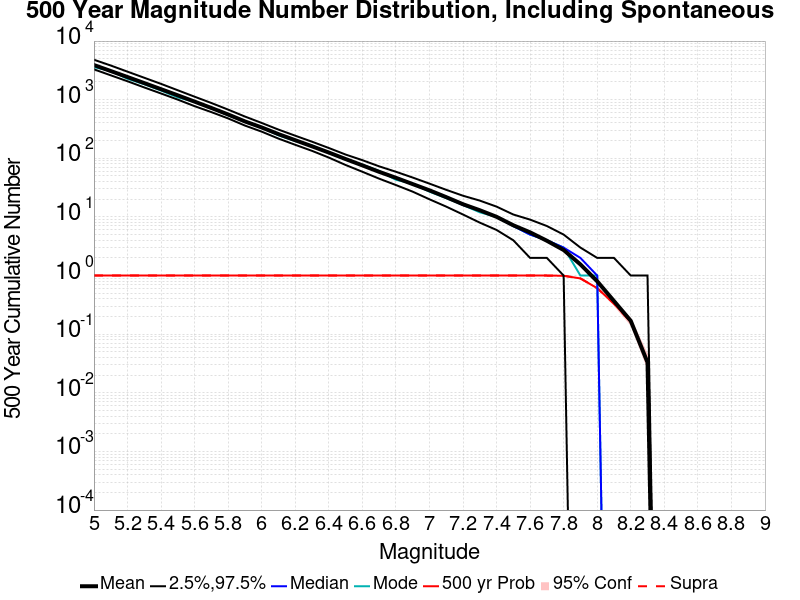
| Mag | Mean | 2.5 %ile | 97.5 %ile | Median | Mode | 500 yr Probability | 500 yr Prob 95% Conf | 500 yr Supra-Seis Prob |
|---|---|---|---|---|---|---|---|---|
| M≥5 | 3898.721 | 3295.000 | 4804.000 | 3838.000 | 3589.000 | 1.000 (100.00%) | [99.52% 100.00%] | 1.000 (100.00%) |
| M≥5.1 | 3083.202 | 2605.000 | 3829.000 | 3034.000 | 3098.000 | 1.000 (100.00%) | [99.52% 100.00%] | 1.000 (100.00%) |
| M≥5.2 | 2434.346 | 2063.000 | 3007.000 | 2400.000 | 2272.000 | 1.000 (100.00%) | [99.52% 100.00%] | 1.000 (100.00%) |
| M≥5.3 | 1919.142 | 1617.000 | 2366.000 | 1895.000 | 1835.000 | 1.000 (100.00%) | [99.52% 100.00%] | 1.000 (100.00%) |
| M≥5.4 | 1510.055 | 1276.000 | 1861.000 | 1490.000 | 1433.000 | 1.000 (100.00%) | [99.52% 100.00%] | 1.000 (100.00%) |
| M≥5.5 | 1185.885 | 1002.000 | 1447.000 | 1171.000 | 1094.000 | 1.000 (100.00%) | [99.52% 100.00%] | 1.000 (100.00%) |
| M≥5.6 | 927.131 | 775.000 | 1125.000 | 918.000 | 919.000 | 1.000 (100.00%) | [99.52% 100.00%] | 1.000 (100.00%) |
| M≥5.7 | 722.090 | 614.000 | 878.000 | 714.000 | 725.000 | 1.000 (100.00%) | [99.52% 100.00%] | 1.000 (100.00%) |
| M≥5.8 | 559.314 | 479.000 | 677.000 | 554.000 | 541.000 | 1.000 (100.00%) | [99.52% 100.00%] | 1.000 (100.00%) |
| M≥5.9 | 425.835 | 362.000 | 516.000 | 422.000 | 425.000 | 1.000 (100.00%) | [99.52% 100.00%] | 1.000 (100.00%) |
| M≥6 | 335.960 | 285.000 | 401.000 | 333.000 | 333.000 | 1.000 (100.00%) | [99.52% 100.00%] | 1.000 (100.00%) |
| M≥6.1 | 258.606 | 217.000 | 309.000 | 256.000 | 247.000 | 1.000 (100.00%) | [99.52% 100.00%] | 1.000 (100.00%) |
| M≥6.2 | 203.531 | 170.000 | 243.000 | 202.000 | 197.000 | 1.000 (100.00%) | [99.52% 100.00%] | 1.000 (100.00%) |
| M≥6.3 | 160.190 | 134.000 | 192.000 | 159.000 | 166.000 | 1.000 (100.00%) | [99.52% 100.00%] | 1.000 (100.00%) |
| M≥6.4 | 125.462 | 103.000 | 150.000 | 125.000 | 125.000 | 1.000 (100.00%) | [99.52% 100.00%] | 1.000 (100.00%) |
| M≥6.5 | 97.211 | 77.000 | 116.000 | 97.000 | 95.000 | 1.000 (100.00%) | [99.52% 100.00%] | 1.000 (100.00%) |
| M≥6.6 | 75.799 | 59.000 | 93.000 | 76.000 | 78.000 | 1.000 (100.00%) | [99.52% 100.00%] | 1.000 (100.00%) |
| M≥6.7 | 58.843 | 45.000 | 73.000 | 59.000 | 61.000 | 1.000 (100.00%) | [99.52% 100.00%] | 1.000 (100.00%) |
| M≥6.8 | 46.524 | 35.000 | 59.000 | 46.000 | 43.000 | 1.000 (100.00%) | [99.52% 100.00%] | 1.000 (100.00%) |
| M≥6.9 | 36.347 | 27.000 | 47.000 | 36.000 | 37.000 | 1.000 (100.00%) | [99.52% 100.00%] | 1.000 (100.00%) |
| M≥7 | 28.446 | 20.000 | 37.000 | 28.000 | 27.000 | 1.000 (100.00%) | [99.52% 100.00%] | 1.000 (100.00%) |
| M≥7.1 | 21.752 | 15.000 | 29.000 | 22.000 | 21.000 | 1.000 (100.00%) | [99.52% 100.00%] | 1.000 (100.00%) |
| M≥7.2 | 16.466 | 11.000 | 23.000 | 16.000 | 16.000 | 1.000 (100.00%) | [99.52% 100.00%] | 1.000 (100.00%) |
| M≥7.3 | 13.012 | 8.000 | 19.000 | 13.000 | 12.000 | 1.000 (100.00%) | [99.52% 100.00%] | 1.000 (100.00%) |
| M≥7.4 | 10.052 | 6.000 | 15.000 | 10.000 | 10.000 | 1.000 (100.00%) | [99.52% 100.00%] | 1.000 (100.00%) |
| M≥7.5 | 7.203 | 4.000 | 11.000 | 7.000 | 7.000 | 1.000 (100.00%) | [99.52% 100.00%] | 1.000 (100.00%) |
| M≥7.6 | 5.456 | 2.000 | 9.000 | 5.000 | 5.000 | 1.000 (100.00%) | [99.52% 100.00%] | 1.000 (100.00%) |
| M≥7.7 | 3.923 | 2.000 | 7.000 | 4.000 | 4.000 | 1.000 (100.00%) | [99.52% 100.00%] | 1.000 (100.00%) |
| M≥7.8 | 2.727 | 1.000 | 5.000 | 3.000 | 3.000 | 0.992 (99.20%) | [98.36% 99.63%] | 0.992 (99.20%) |
| M≥7.9 | 1.549 | 0.000 | 3.000 | 2.000 | 1.000 | 0.894 (89.40%) | [87.29% 91.21%] | 0.894 (89.40%) |
| M≥8 | 0.799 | 0.000 | 2.000 | 1.000 | 1.000 | 0.610 (61.00%) | [57.89% 64.02%] | 0.610 (61.00%) |
| M≥8.1 | 0.368 | 0.000 | 2.000 | 0.000 | 0.000 | 0.333 (33.30%) | [30.40% 36.33%] | 0.333 (33.30%) |
| M≥8.2 | 0.169 | 0.000 | 1.000 | 0.000 | 0.000 | 0.162 (16.20%) | [14.00% 18.66%] | 0.162 (16.20%) |
| M≥8.3 | 0.033 | 0.000 | 1.000 | 0.000 | 0.000 | 0.033 (3.30%) | [2.32% 4.66%] | 0.033 (3.30%) |
| M≥8.4 | 0.000 | 0.000 | 0.000 | 0.000 | 0.000 | 0.000 (0.00%) | [0.00% 0.48%] | 0.000 (0.00%) |
| M≥8.5 | 0.000 | 0.000 | 0.000 | 0.000 | 0.000 | 0.000 (0.00%) | [0.00% 0.48%] | 0.000 (0.00%) |
| M≥8.6 | 0.000 | 0.000 | 0.000 | 0.000 | 0.000 | 0.000 (0.00%) | [0.00% 0.48%] | 0.000 (0.00%) |
| M≥8.7 | 0.000 | 0.000 | 0.000 | 0.000 | 0.000 | 0.000 (0.00%) | [0.00% 0.48%] | 0.000 (0.00%) |
| M≥8.8 | 0.000 | 0.000 | 0.000 | 0.000 | 0.000 | 0.000 (0.00%) | [0.00% 0.48%] | 0.000 (0.00%) |
| M≥8.9 | 0.000 | 0.000 | 0.000 | 0.000 | 0.000 | 0.000 (0.00%) | [0.00% 0.48%] | 0.000 (0.00%) |
| M≥9 | 0.000 | 0.000 | 0.000 | 0.000 | 0.000 | 0.000 (0.00%) | [0.00% 0.48%] | 0.000 (0.00%) |
Note: This section only includes triggered events, spontaneous were calculated but filtered out here
Legend
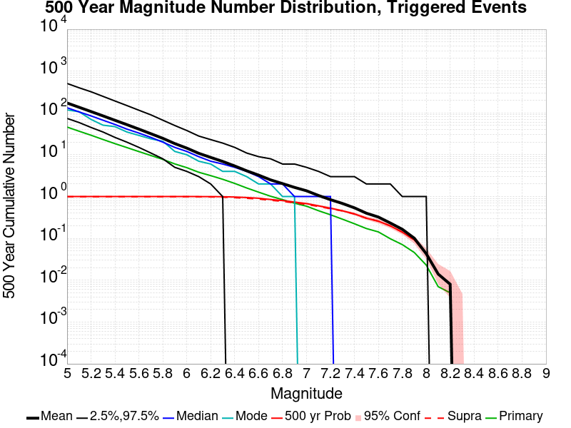
| Mag | Mean | 2.5 %ile | 97.5 %ile | Median | Mode | 500 yr Probability | 500 yr Prob 95% Conf | 500 yr Supra-Seis Prob | Primary Aftershocks Mean |
|---|---|---|---|---|---|---|---|---|---|
| M≥5 | 172.922 | 74.000 | 507.000 | 133.000 | 118.000 | 1.000 (100.00%) | [99.52% 100.00%] | 0.994 (99.40%) | 45.980 |
| M≥5.1 | 136.664 | 59.000 | 400.000 | 106.000 | 107.000 | 1.000 (100.00%) | [99.52% 100.00%] | 0.994 (99.40%) | 36.586 |
| M≥5.2 | 107.927 | 45.000 | 321.000 | 85.000 | 70.000 | 1.000 (100.00%) | [99.52% 100.00%] | 0.994 (99.40%) | 29.306 |
| M≥5.3 | 85.030 | 35.000 | 249.000 | 67.000 | 51.000 | 1.000 (100.00%) | [99.52% 100.00%] | 0.994 (99.40%) | 23.184 |
| M≥5.4 | 66.694 | 26.000 | 193.000 | 53.000 | 47.000 | 1.000 (100.00%) | [99.52% 100.00%] | 0.994 (99.40%) | 18.434 |
| M≥5.5 | 52.432 | 20.000 | 150.000 | 41.000 | 35.000 | 1.000 (100.00%) | [99.52% 100.00%] | 0.994 (99.40%) | 14.842 |
| M≥5.6 | 40.995 | 15.000 | 116.000 | 33.000 | 29.000 | 1.000 (100.00%) | [99.52% 100.00%] | 0.994 (99.40%) | 11.910 |
| M≥5.7 | 31.839 | 11.000 | 90.000 | 26.000 | 24.000 | 1.000 (100.00%) | [99.52% 100.00%] | 0.994 (99.40%) | 9.596 |
| M≥5.8 | 24.679 | 8.000 | 67.000 | 20.000 | 21.000 | 1.000 (100.00%) | [99.52% 100.00%] | 0.994 (99.40%) | 7.748 |
| M≥5.9 | 18.475 | 5.000 | 50.000 | 15.000 | 12.000 | 1.000 (100.00%) | [99.52% 100.00%] | 0.993 (99.30%) | 6.033 |
| M≥6 | 14.414 | 4.000 | 38.000 | 12.000 | 10.000 | 1.000 (100.00%) | [99.52% 100.00%] | 0.993 (99.30%) | 4.915 |
| M≥6.1 | 10.811 | 3.000 | 28.000 | 9.000 | 7.000 | 1.000 (100.00%) | [99.52% 100.00%] | 0.988 (98.80%) | 3.813 |
| M≥6.2 | 8.631 | 2.000 | 23.000 | 7.000 | 6.000 | 0.998 (99.80%) | [99.20% 99.97%] | 0.980 (98.00%) | 3.166 |
| M≥6.3 | 6.913 | 1.000 | 19.000 | 6.000 | 4.000 | 0.992 (99.20%) | [98.36% 99.63%] | 0.966 (96.60%) | 2.590 |
| M≥6.4 | 5.394 | 0.000 | 15.000 | 5.000 | 4.000 | 0.975 (97.50%) | [96.28% 98.34%] | 0.944 (94.40%) | 2.065 |
| M≥6.5 | 4.133 | 0.000 | 11.000 | 4.000 | 3.000 | 0.949 (94.90%) | [93.30% 96.14%] | 0.908 (90.80%) | 1.606 |
| M≥6.6 | 3.255 | 0.000 | 9.000 | 3.000 | 2.000 | 0.912 (91.20%) | [89.23% 92.85%] | 0.874 (87.40%) | 1.275 |
| M≥6.7 | 2.504 | 0.000 | 8.000 | 2.000 | 2.000 | 0.850 (85.00%) | [82.60% 87.13%] | 0.814 (81.40%) | 1.018 |
| M≥6.8 | 2.039 | 0.000 | 6.000 | 2.000 | 1.000 | 0.802 (80.20%) | [77.56% 82.60%] | 0.768 (76.80%) | 0.846 |
| M≥6.9 | 1.656 | 0.000 | 6.000 | 1.000 | 1.000 | 0.736 (73.60%) | [70.73% 76.29%] | 0.705 (70.50%) | 0.694 |
| M≥7 | 1.375 | 0.000 | 5.000 | 1.000 | 0.000 | 0.679 (67.90%) | [64.89% 70.77%] | 0.650 (65.00%) | 0.589 |
| M≥7.1 | 1.062 | 0.000 | 4.000 | 1.000 | 0.000 | 0.600 (60.00%) | [56.88% 63.04%] | 0.580 (58.00%) | 0.459 |
| M≥7.2 | 0.843 | 0.000 | 3.000 | 1.000 | 0.000 | 0.526 (52.60%) | [49.45% 55.73%] | 0.511 (51.10%) | 0.367 |
| M≥7.3 | 0.684 | 0.000 | 3.000 | 0.000 | 0.000 | 0.457 (45.70%) | [42.59% 48.85%] | 0.453 (45.30%) | 0.288 |
| M≥7.4 | 0.538 | 0.000 | 3.000 | 0.000 | 0.000 | 0.385 (38.50%) | [35.48% 41.61%] | 0.383 (38.30%) | 0.224 |
| M≥7.5 | 0.400 | 0.000 | 2.000 | 0.000 | 0.000 | 0.304 (30.40%) | [27.58% 33.37%] | 0.304 (30.40%) | 0.172 |
| M≥7.6 | 0.324 | 0.000 | 2.000 | 0.000 | 0.000 | 0.258 (25.80%) | [23.14% 28.65%] | 0.258 (25.80%) | 0.143 |
| M≥7.7 | 0.233 | 0.000 | 2.000 | 0.000 | 0.000 | 0.199 (19.90%) | [17.50% 22.54%] | 0.199 (19.90%) | 0.098 |
| M≥7.8 | 0.165 | 0.000 | 1.000 | 0.000 | 0.000 | 0.141 (14.10%) | [12.03% 16.45%] | 0.141 (14.10%) | 0.071 |
| M≥7.9 | 0.101 | 0.000 | 1.000 | 0.000 | 0.000 | 0.092 (9.20%) | [7.52% 11.21%] | 0.092 (9.20%) | 0.046 |
| M≥8 | 0.043 | 0.000 | 1.000 | 0.000 | 0.000 | 0.043 (4.30%) | [3.16% 5.80%] | 0.043 (4.30%) | 0.023 |
| M≥8.1 | 0.014 | 0.000 | 0.000 | 0.000 | 0.000 | 0.014 (1.40%) | [0.80% 2.40%] | 0.014 (1.40%) | 7.00E-3 |
| M≥8.2 | 8.00E-3 | 0.000 | 0.000 | 0.000 | 0.000 | 8.00E-3 (0.80%) | [0.37% 1.64%] | 8.00E-3 (0.80%) | 5.00E-3 |
| M≥8.3 | 0.000 | 0.000 | 0.000 | 0.000 | 0.000 | 0.000 (0.00%) | [0.00% 0.48%] | 0.000 (0.00%) | 0.000 |
| M≥8.4 | 0.000 | 0.000 | 0.000 | 0.000 | 0.000 | 0.000 (0.00%) | [0.00% 0.48%] | 0.000 (0.00%) | 0.000 |
| M≥8.5 | 0.000 | 0.000 | 0.000 | 0.000 | 0.000 | 0.000 (0.00%) | [0.00% 0.48%] | 0.000 (0.00%) | 0.000 |
| M≥8.6 | 0.000 | 0.000 | 0.000 | 0.000 | 0.000 | 0.000 (0.00%) | [0.00% 0.48%] | 0.000 (0.00%) | 0.000 |
| M≥8.7 | 0.000 | 0.000 | 0.000 | 0.000 | 0.000 | 0.000 (0.00%) | [0.00% 0.48%] | 0.000 (0.00%) | 0.000 |
| M≥8.8 | 0.000 | 0.000 | 0.000 | 0.000 | 0.000 | 0.000 (0.00%) | [0.00% 0.48%] | 0.000 (0.00%) | 0.000 |
| M≥8.9 | 0.000 | 0.000 | 0.000 | 0.000 | 0.000 | 0.000 (0.00%) | [0.00% 0.48%] | 0.000 (0.00%) | 0.000 |
| M≥9 | 0.000 | 0.000 | 0.000 | 0.000 | 0.000 | 0.000 (0.00%) | [0.00% 0.48%] | 0.000 (0.00%) | 0.000 |
Note: This section includes both spontaneous and triggered events
Legend
| Mag | Mean | 2.5 %ile | 97.5 %ile | Median | Mode | 100 yr Probability | 100 yr Prob 95% Conf | 100 yr Supra-Seis Prob |
|---|---|---|---|---|---|---|---|---|
| M≥5 | 796.765 | 582.000 | 1215.000 | 759.000 | 762.000 | 1.000 (100.00%) | [99.52% 100.00%] | 1.000 (100.00%) |
| M≥5.1 | 631.161 | 463.000 | 961.000 | 603.000 | 590.000 | 1.000 (100.00%) | [99.52% 100.00%] | 1.000 (100.00%) |
| M≥5.2 | 499.210 | 364.000 | 752.000 | 477.000 | 456.000 | 1.000 (100.00%) | [99.52% 100.00%] | 1.000 (100.00%) |
| M≥5.3 | 393.860 | 288.000 | 602.000 | 377.000 | 375.000 | 1.000 (100.00%) | [99.52% 100.00%] | 1.000 (100.00%) |
| M≥5.4 | 310.566 | 225.000 | 469.000 | 298.000 | 258.000 | 1.000 (100.00%) | [99.52% 100.00%] | 1.000 (100.00%) |
| M≥5.5 | 244.623 | 177.000 | 364.000 | 235.000 | 235.000 | 1.000 (100.00%) | [99.52% 100.00%] | 1.000 (100.00%) |
| M≥5.6 | 191.850 | 137.000 | 285.000 | 185.000 | 185.000 | 1.000 (100.00%) | [99.52% 100.00%] | 1.000 (100.00%) |
| M≥5.7 | 149.888 | 107.000 | 219.000 | 145.000 | 131.000 | 1.000 (100.00%) | [99.52% 100.00%] | 1.000 (100.00%) |
| M≥5.8 | 116.634 | 82.000 | 170.000 | 114.000 | 107.000 | 1.000 (100.00%) | [99.52% 100.00%] | 1.000 (100.00%) |
| M≥5.9 | 89.394 | 63.000 | 128.000 | 87.000 | 87.000 | 1.000 (100.00%) | [99.52% 100.00%] | 1.000 (100.00%) |
| M≥6 | 70.824 | 48.000 | 101.000 | 69.000 | 75.000 | 1.000 (100.00%) | [99.52% 100.00%] | 1.000 (100.00%) |
| M≥6.1 | 54.941 | 37.000 | 79.000 | 54.000 | 51.000 | 1.000 (100.00%) | [99.52% 100.00%] | 1.000 (100.00%) |
| M≥6.2 | 43.390 | 29.000 | 62.000 | 43.000 | 40.000 | 1.000 (100.00%) | [99.52% 100.00%] | 1.000 (100.00%) |
| M≥6.3 | 34.089 | 22.000 | 50.000 | 33.000 | 35.000 | 1.000 (100.00%) | [99.52% 100.00%] | 1.000 (100.00%) |
| M≥6.4 | 26.558 | 16.000 | 40.000 | 26.000 | 29.000 | 1.000 (100.00%) | [99.52% 100.00%] | 1.000 (100.00%) |
| M≥6.5 | 20.594 | 12.000 | 32.000 | 20.000 | 20.000 | 1.000 (100.00%) | [99.52% 100.00%] | 1.000 (100.00%) |
| M≥6.6 | 16.087 | 8.000 | 25.000 | 16.000 | 15.000 | 1.000 (100.00%) | [99.52% 100.00%] | 1.000 (100.00%) |
| M≥6.7 | 12.433 | 6.000 | 20.000 | 12.000 | 11.000 | 1.000 (100.00%) | [99.52% 100.00%] | 1.000 (100.00%) |
| M≥6.8 | 9.667 | 4.000 | 16.000 | 9.000 | 9.000 | 1.000 (100.00%) | [99.52% 100.00%] | 1.000 (100.00%) |
| M≥6.9 | 7.459 | 3.000 | 13.000 | 7.000 | 7.000 | 1.000 (100.00%) | [99.52% 100.00%] | 1.000 (100.00%) |
| M≥7 | 5.788 | 2.000 | 11.000 | 6.000 | 5.000 | 1.000 (100.00%) | [99.52% 100.00%] | 1.000 (100.00%) |
| M≥7.1 | 4.400 | 1.000 | 9.000 | 4.000 | 4.000 | 0.995 (99.50%) | [98.77% 99.82%] | 0.991 (99.10%) |
| M≥7.2 | 3.312 | 1.000 | 7.000 | 3.000 | 3.000 | 0.980 (98.00%) | [96.87% 98.74%] | 0.973 (97.30%) |
| M≥7.3 | 2.540 | 0.000 | 6.000 | 2.000 | 2.000 | 0.950 (95.00%) | [93.41% 96.23%] | 0.948 (94.80%) |
| M≥7.4 | 1.919 | 0.000 | 5.000 | 2.000 | 2.000 | 0.892 (89.20%) | [87.07% 91.02%] | 0.888 (88.80%) |
| M≥7.5 | 1.305 | 0.000 | 4.000 | 1.000 | 1.000 | 0.784 (78.40%) | [75.69% 80.89%] | 0.779 (77.90%) |
| M≥7.6 | 0.983 | 0.000 | 3.000 | 1.000 | 1.000 | 0.704 (70.40%) | [67.45% 73.20%] | 0.704 (70.40%) |
| M≥7.7 | 0.697 | 0.000 | 2.000 | 1.000 | 1.000 | 0.588 (58.80%) | [55.67% 61.86%] | 0.588 (58.80%) |
| M≥7.8 | 0.509 | 0.000 | 2.000 | 0.000 | 0.000 | 0.475 (47.50%) | [44.37% 50.65%] | 0.475 (47.50%) |
| M≥7.9 | 0.314 | 0.000 | 1.000 | 0.000 | 0.000 | 0.307 (30.70%) | [27.87% 33.68%] | 0.307 (30.70%) |
| M≥8 | 0.169 | 0.000 | 1.000 | 0.000 | 0.000 | 0.167 (16.70%) | [14.47% 19.19%] | 0.167 (16.70%) |
| M≥8.1 | 0.066 | 0.000 | 1.000 | 0.000 | 0.000 | 0.066 (6.60%) | [5.18% 8.37%] | 0.066 (6.60%) |
| M≥8.2 | 0.027 | 0.000 | 1.000 | 0.000 | 0.000 | 0.027 (2.70%) | [1.82% 3.96%] | 0.027 (2.70%) |
| M≥8.3 | 2.00E-3 | 0.000 | 0.000 | 0.000 | 0.000 | 2.00E-3 (0.20%) | [0.03% 0.80%] | 2.00E-3 (0.20%) |
| M≥8.4 | 0.000 | 0.000 | 0.000 | 0.000 | 0.000 | 0.000 (0.00%) | [0.00% 0.48%] | 0.000 (0.00%) |
| M≥8.5 | 0.000 | 0.000 | 0.000 | 0.000 | 0.000 | 0.000 (0.00%) | [0.00% 0.48%] | 0.000 (0.00%) |
| M≥8.6 | 0.000 | 0.000 | 0.000 | 0.000 | 0.000 | 0.000 (0.00%) | [0.00% 0.48%] | 0.000 (0.00%) |
| M≥8.7 | 0.000 | 0.000 | 0.000 | 0.000 | 0.000 | 0.000 (0.00%) | [0.00% 0.48%] | 0.000 (0.00%) |
| M≥8.8 | 0.000 | 0.000 | 0.000 | 0.000 | 0.000 | 0.000 (0.00%) | [0.00% 0.48%] | 0.000 (0.00%) |
| M≥8.9 | 0.000 | 0.000 | 0.000 | 0.000 | 0.000 | 0.000 (0.00%) | [0.00% 0.48%] | 0.000 (0.00%) |
| M≥9 | 0.000 | 0.000 | 0.000 | 0.000 | 0.000 | 0.000 (0.00%) | [0.00% 0.48%] | 0.000 (0.00%) |
Note: This section only includes triggered events, spontaneous were calculated but filtered out here
Legend
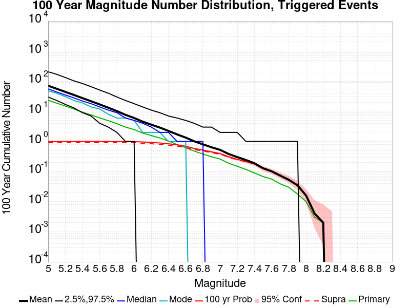
| Mag | Mean | 2.5 %ile | 97.5 %ile | Median | Mode | 100 yr Probability | 100 yr Prob 95% Conf | 100 yr Supra-Seis Prob | Primary Aftershocks Mean |
|---|---|---|---|---|---|---|---|---|---|
| M≥5 | 71.104 | 30.000 | 207.000 | 56.000 | 48.000 | 1.000 (100.00%) | [99.52% 100.00%] | 0.930 (93.00%) | 23.548 |
| M≥5.1 | 56.220 | 23.000 | 170.000 | 44.000 | 40.000 | 1.000 (100.00%) | [99.52% 100.00%] | 0.930 (93.00%) | 18.694 |
| M≥5.2 | 44.415 | 17.000 | 133.000 | 35.000 | 31.000 | 1.000 (100.00%) | [99.52% 100.00%] | 0.930 (93.00%) | 15.003 |
| M≥5.3 | 35.056 | 13.000 | 103.000 | 28.000 | 23.000 | 1.000 (100.00%) | [99.52% 100.00%] | 0.930 (93.00%) | 11.910 |
| M≥5.4 | 27.500 | 9.000 | 84.000 | 22.000 | 19.000 | 1.000 (100.00%) | [99.52% 100.00%] | 0.930 (93.00%) | 9.419 |
| M≥5.5 | 21.662 | 7.000 | 66.000 | 18.000 | 14.000 | 1.000 (100.00%) | [99.52% 100.00%] | 0.930 (93.00%) | 7.578 |
| M≥5.6 | 16.979 | 4.000 | 51.000 | 14.000 | 12.000 | 1.000 (100.00%) | [99.52% 100.00%] | 0.930 (93.00%) | 6.079 |
| M≥5.7 | 13.194 | 3.000 | 40.000 | 11.000 | 8.000 | 1.000 (100.00%) | [99.52% 100.00%] | 0.930 (93.00%) | 4.893 |
| M≥5.8 | 10.204 | 2.000 | 30.000 | 9.000 | 6.000 | 0.998 (99.80%) | [99.20% 99.97%] | 0.930 (93.00%) | 3.906 |
| M≥5.9 | 7.659 | 1.000 | 23.000 | 6.000 | 6.000 | 0.994 (99.40%) | [98.63% 99.76%] | 0.923 (92.30%) | 3.003 |
| M≥6 | 6.018 | 1.000 | 18.000 | 5.000 | 5.000 | 0.987 (98.70%) | [97.73% 99.28%] | 0.920 (92.00%) | 2.479 |
| M≥6.1 | 4.541 | 0.000 | 14.000 | 4.000 | 2.000 | 0.961 (96.10%) | [94.66% 97.18%] | 0.870 (87.00%) | 1.899 |
| M≥6.2 | 3.609 | 0.000 | 11.000 | 3.000 | 2.000 | 0.924 (92.40%) | [90.54% 93.93%] | 0.838 (83.80%) | 1.570 |
| M≥6.3 | 2.884 | 0.000 | 9.000 | 2.000 | 2.000 | 0.890 (89.00%) | [86.86% 90.84%] | 0.807 (80.70%) | 1.304 |
| M≥6.4 | 2.236 | 0.000 | 7.000 | 2.000 | 1.000 | 0.837 (83.70%) | [81.23% 85.91%] | 0.756 (75.60%) | 1.030 |
| M≥6.5 | 1.715 | 0.000 | 6.000 | 1.000 | 1.000 | 0.771 (77.10%) | [74.34% 79.65%] | 0.689 (68.90%) | 0.789 |
| M≥6.6 | 1.341 | 0.000 | 5.000 | 1.000 | 1.000 | 0.694 (69.40%) | [66.42% 72.23%] | 0.625 (62.50%) | 0.619 |
| M≥6.7 | 1.011 | 0.000 | 4.000 | 1.000 | 0.000 | 0.583 (58.30%) | [55.17% 61.37%] | 0.537 (53.70%) | 0.477 |
| M≥6.8 | 0.803 | 0.000 | 3.000 | 1.000 | 0.000 | 0.517 (51.70%) | [48.55% 54.83%] | 0.483 (48.30%) | 0.382 |
| M≥6.9 | 0.641 | 0.000 | 3.000 | 0.000 | 0.000 | 0.450 (45.00%) | [41.89% 48.15%] | 0.421 (42.10%) | 0.310 |
| M≥7 | 0.526 | 0.000 | 2.000 | 0.000 | 0.000 | 0.395 (39.50%) | [36.47% 42.62%] | 0.376 (37.60%) | 0.260 |
| M≥7.1 | 0.383 | 0.000 | 2.000 | 0.000 | 0.000 | 0.309 (30.90%) | [28.07% 33.88%] | 0.299 (29.90%) | 0.189 |
| M≥7.2 | 0.303 | 0.000 | 2.000 | 0.000 | 0.000 | 0.255 (25.50%) | [22.85% 28.34%] | 0.246 (24.60%) | 0.149 |
| M≥7.3 | 0.242 | 0.000 | 1.000 | 0.000 | 0.000 | 0.217 (21.70%) | [19.21% 24.41%] | 0.214 (21.40%) | 0.118 |
| M≥7.4 | 0.188 | 0.000 | 1.000 | 0.000 | 0.000 | 0.177 (17.70%) | [15.41% 20.24%] | 0.176 (17.60%) | 0.090 |
| M≥7.5 | 0.129 | 0.000 | 1.000 | 0.000 | 0.000 | 0.124 (12.40%) | [10.45% 14.64%] | 0.124 (12.40%) | 0.068 |
| M≥7.6 | 0.102 | 0.000 | 1.000 | 0.000 | 0.000 | 0.100 (10.00%) | [8.25% 12.07%] | 0.100 (10.00%) | 0.056 |
| M≥7.7 | 0.073 | 0.000 | 1.000 | 0.000 | 0.000 | 0.073 (7.30%) | [5.80% 9.14%] | 0.073 (7.30%) | 0.039 |
| M≥7.8 | 0.053 | 0.000 | 1.000 | 0.000 | 0.000 | 0.053 (5.30%) | [4.03% 6.92%] | 0.053 (5.30%) | 0.030 |
| M≥7.9 | 0.035 | 0.000 | 1.000 | 0.000 | 0.000 | 0.035 (3.50%) | [2.49% 4.89%] | 0.035 (3.50%) | 0.018 |
| M≥8 | 0.016 | 0.000 | 0.000 | 0.000 | 0.000 | 0.016 (1.60%) | [0.95% 2.64%] | 0.016 (1.60%) | 0.010 |
| M≥8.1 | 4.00E-3 | 0.000 | 0.000 | 0.000 | 0.000 | 4.00E-3 (0.40%) | [0.13% 1.10%] | 4.00E-3 (0.40%) | 3.00E-3 |
| M≥8.2 | 2.00E-3 | 0.000 | 0.000 | 0.000 | 0.000 | 2.00E-3 (0.20%) | [0.03% 0.80%] | 2.00E-3 (0.20%) | 2.00E-3 |
| M≥8.3 | 0.000 | 0.000 | 0.000 | 0.000 | 0.000 | 0.000 (0.00%) | [0.00% 0.48%] | 0.000 (0.00%) | 0.000 |
| M≥8.4 | 0.000 | 0.000 | 0.000 | 0.000 | 0.000 | 0.000 (0.00%) | [0.00% 0.48%] | 0.000 (0.00%) | 0.000 |
| M≥8.5 | 0.000 | 0.000 | 0.000 | 0.000 | 0.000 | 0.000 (0.00%) | [0.00% 0.48%] | 0.000 (0.00%) | 0.000 |
| M≥8.6 | 0.000 | 0.000 | 0.000 | 0.000 | 0.000 | 0.000 (0.00%) | [0.00% 0.48%] | 0.000 (0.00%) | 0.000 |
| M≥8.7 | 0.000 | 0.000 | 0.000 | 0.000 | 0.000 | 0.000 (0.00%) | [0.00% 0.48%] | 0.000 (0.00%) | 0.000 |
| M≥8.8 | 0.000 | 0.000 | 0.000 | 0.000 | 0.000 | 0.000 (0.00%) | [0.00% 0.48%] | 0.000 (0.00%) | 0.000 |
| M≥8.9 | 0.000 | 0.000 | 0.000 | 0.000 | 0.000 | 0.000 (0.00%) | [0.00% 0.48%] | 0.000 (0.00%) | 0.000 |
| M≥9 | 0.000 | 0.000 | 0.000 | 0.000 | 0.000 | 0.000 (0.00%) | [0.00% 0.48%] | 0.000 (0.00%) | 0.000 |
Note: This section includes both spontaneous and triggered events
Legend
| Mag | Mean | 2.5 %ile | 97.5 %ile | Median | Mode | 30 yr Probability | 30 yr Prob 95% Conf | 30 yr Supra-Seis Prob |
|---|---|---|---|---|---|---|---|---|
| M≥5 | 243.734 | 153.000 | 498.000 | 221.000 | 203.000 | 1.000 (100.00%) | [99.52% 100.00%] | 1.000 (100.00%) |
| M≥5.1 | 193.320 | 120.000 | 386.000 | 177.000 | 157.000 | 1.000 (100.00%) | [99.52% 100.00%] | 1.000 (100.00%) |
| M≥5.2 | 152.964 | 95.000 | 300.000 | 139.000 | 124.000 | 1.000 (100.00%) | [99.52% 100.00%] | 1.000 (100.00%) |
| M≥5.3 | 120.632 | 74.000 | 231.000 | 111.000 | 103.000 | 1.000 (100.00%) | [99.52% 100.00%] | 1.000 (100.00%) |
| M≥5.4 | 95.135 | 58.000 | 184.000 | 87.000 | 85.000 | 1.000 (100.00%) | [99.52% 100.00%] | 1.000 (100.00%) |
| M≥5.5 | 75.173 | 44.000 | 143.000 | 69.000 | 58.000 | 1.000 (100.00%) | [99.52% 100.00%] | 1.000 (100.00%) |
| M≥5.6 | 59.035 | 34.000 | 115.000 | 54.000 | 50.000 | 1.000 (100.00%) | [99.52% 100.00%] | 1.000 (100.00%) |
| M≥5.7 | 46.319 | 26.000 | 90.000 | 43.000 | 42.000 | 1.000 (100.00%) | [99.52% 100.00%] | 1.000 (100.00%) |
| M≥5.8 | 36.212 | 19.000 | 69.000 | 34.000 | 30.000 | 1.000 (100.00%) | [99.52% 100.00%] | 1.000 (100.00%) |
| M≥5.9 | 27.941 | 14.000 | 49.000 | 26.000 | 24.000 | 1.000 (100.00%) | [99.52% 100.00%] | 1.000 (100.00%) |
| M≥6 | 22.362 | 11.000 | 40.000 | 21.000 | 19.000 | 1.000 (100.00%) | [99.52% 100.00%] | 1.000 (100.00%) |
| M≥6.1 | 17.506 | 8.000 | 32.000 | 17.000 | 16.000 | 1.000 (100.00%) | [99.52% 100.00%] | 0.999 (99.90%) |
| M≥6.2 | 13.925 | 6.000 | 26.000 | 13.000 | 14.000 | 1.000 (100.00%) | [99.52% 100.00%] | 0.999 (99.90%) |
| M≥6.3 | 10.980 | 4.000 | 21.000 | 10.000 | 10.000 | 0.999 (99.90%) | [99.35% 99.99%] | 0.998 (99.80%) |
| M≥6.4 | 8.542 | 3.000 | 16.000 | 8.000 | 8.000 | 0.999 (99.90%) | [99.35% 99.99%] | 0.995 (99.50%) |
| M≥6.5 | 6.642 | 2.000 | 13.000 | 6.000 | 7.000 | 0.998 (99.80%) | [99.20% 99.97%] | 0.987 (98.70%) |
| M≥6.6 | 5.231 | 1.000 | 10.000 | 5.000 | 5.000 | 0.990 (99.00%) | [98.10% 99.49%] | 0.974 (97.40%) |
| M≥6.7 | 4.010 | 1.000 | 8.000 | 4.000 | 4.000 | 0.976 (97.60%) | [96.39% 98.42%] | 0.953 (95.30%) |
| M≥6.8 | 3.119 | 0.000 | 7.000 | 3.000 | 2.000 | 0.948 (94.80%) | [93.19% 96.06%] | 0.923 (92.30%) |
| M≥6.9 | 2.375 | 0.000 | 6.000 | 2.000 | 2.000 | 0.896 (89.60%) | [87.50% 91.39%] | 0.867 (86.70%) |
| M≥7 | 1.845 | 0.000 | 5.000 | 2.000 | 1.000 | 0.830 (83.00%) | [80.49% 85.25%] | 0.805 (80.50%) |
| M≥7.1 | 1.392 | 0.000 | 4.000 | 1.000 | 1.000 | 0.745 (74.50%) | [71.66% 77.15%] | 0.720 (72.00%) |
| M≥7.2 | 1.051 | 0.000 | 3.000 | 1.000 | 1.000 | 0.658 (65.80%) | [62.75% 68.72%] | 0.637 (63.70%) |
| M≥7.3 | 0.818 | 0.000 | 3.000 | 1.000 | 0.000 | 0.568 (56.80%) | [53.66% 59.89%] | 0.556 (55.60%) |
| M≥7.4 | 0.595 | 0.000 | 2.000 | 0.000 | 0.000 | 0.446 (44.60%) | [41.50% 47.75%] | 0.438 (43.80%) |
| M≥7.5 | 0.382 | 0.000 | 2.000 | 0.000 | 0.000 | 0.317 (31.70%) | [28.84% 34.70%] | 0.314 (31.40%) |
| M≥7.6 | 0.275 | 0.000 | 2.000 | 0.000 | 0.000 | 0.240 (24.00%) | [21.41% 26.80%] | 0.240 (24.00%) |
| M≥7.7 | 0.196 | 0.000 | 1.000 | 0.000 | 0.000 | 0.182 (18.20%) | [15.88% 20.76%] | 0.181 (18.10%) |
| M≥7.8 | 0.143 | 0.000 | 1.000 | 0.000 | 0.000 | 0.141 (14.10%) | [12.03% 16.45%] | 0.140 (14.00%) |
| M≥7.9 | 0.086 | 0.000 | 1.000 | 0.000 | 0.000 | 0.085 (8.50%) | [6.88% 10.45%] | 0.085 (8.50%) |
| M≥8 | 0.044 | 0.000 | 1.000 | 0.000 | 0.000 | 0.044 (4.40%) | [3.25% 5.91%] | 0.044 (4.40%) |
| M≥8.1 | 0.015 | 0.000 | 0.000 | 0.000 | 0.000 | 0.015 (1.50%) | [0.87% 2.52%] | 0.015 (1.50%) |
| M≥8.2 | 3.00E-3 | 0.000 | 0.000 | 0.000 | 0.000 | 3.00E-3 (0.30%) | [0.08% 0.95%] | 3.00E-3 (0.30%) |
| M≥8.3 | 0.000 | 0.000 | 0.000 | 0.000 | 0.000 | 0.000 (0.00%) | [0.00% 0.48%] | 0.000 (0.00%) |
| M≥8.4 | 0.000 | 0.000 | 0.000 | 0.000 | 0.000 | 0.000 (0.00%) | [0.00% 0.48%] | 0.000 (0.00%) |
| M≥8.5 | 0.000 | 0.000 | 0.000 | 0.000 | 0.000 | 0.000 (0.00%) | [0.00% 0.48%] | 0.000 (0.00%) |
| M≥8.6 | 0.000 | 0.000 | 0.000 | 0.000 | 0.000 | 0.000 (0.00%) | [0.00% 0.48%] | 0.000 (0.00%) |
| M≥8.7 | 0.000 | 0.000 | 0.000 | 0.000 | 0.000 | 0.000 (0.00%) | [0.00% 0.48%] | 0.000 (0.00%) |
| M≥8.8 | 0.000 | 0.000 | 0.000 | 0.000 | 0.000 | 0.000 (0.00%) | [0.00% 0.48%] | 0.000 (0.00%) |
| M≥8.9 | 0.000 | 0.000 | 0.000 | 0.000 | 0.000 | 0.000 (0.00%) | [0.00% 0.48%] | 0.000 (0.00%) |
| M≥9 | 0.000 | 0.000 | 0.000 | 0.000 | 0.000 | 0.000 (0.00%) | [0.00% 0.48%] | 0.000 (0.00%) |
Note: This section only includes triggered events, spontaneous were calculated but filtered out here
Legend
| Mag | Mean | 2.5 %ile | 97.5 %ile | Median | Mode | 30 yr Probability | 30 yr Prob 95% Conf | 30 yr Supra-Seis Prob | Primary Aftershocks Mean |
|---|---|---|---|---|---|---|---|---|---|
| M≥5 | 31.883 | 10.000 | 93.000 | 26.000 | 23.000 | 1.000 (100.00%) | [99.52% 100.00%] | 0.775 (77.50%) | 12.078 |
| M≥5.1 | 25.238 | 7.000 | 72.000 | 20.000 | 15.000 | 1.000 (100.00%) | [99.52% 100.00%] | 0.775 (77.50%) | 9.619 |
| M≥5.2 | 20.054 | 5.000 | 59.000 | 16.000 | 11.000 | 1.000 (100.00%) | [99.52% 100.00%] | 0.775 (77.50%) | 7.726 |
| M≥5.3 | 15.886 | 4.000 | 47.000 | 13.000 | 10.000 | 1.000 (100.00%) | [99.52% 100.00%] | 0.775 (77.50%) | 6.151 |
| M≥5.4 | 12.485 | 3.000 | 37.000 | 10.000 | 9.000 | 1.000 (100.00%) | [99.52% 100.00%] | 0.775 (77.50%) | 4.864 |
| M≥5.5 | 9.851 | 2.000 | 31.000 | 8.000 | 6.000 | 0.997 (99.70%) | [99.05% 99.92%] | 0.775 (77.50%) | 3.931 |
| M≥5.6 | 7.747 | 1.000 | 24.000 | 6.000 | 5.000 | 0.994 (99.40%) | [98.63% 99.76%] | 0.775 (77.50%) | 3.132 |
| M≥5.7 | 6.038 | 1.000 | 18.000 | 5.000 | 4.000 | 0.984 (98.40%) | [97.36% 99.05%] | 0.775 (77.50%) | 2.524 |
| M≥5.8 | 4.703 | 0.000 | 14.000 | 4.000 | 3.000 | 0.959 (95.90%) | [94.43% 97.01%] | 0.775 (77.50%) | 2.023 |
| M≥5.9 | 3.540 | 0.000 | 11.000 | 3.000 | 2.000 | 0.927 (92.70%) | [90.86% 94.20%] | 0.750 (75.00%) | 1.560 |
| M≥6 | 2.807 | 0.000 | 9.000 | 2.000 | 1.000 | 0.890 (89.00%) | [86.86% 90.84%] | 0.737 (73.70%) | 1.308 |
| M≥6.1 | 2.146 | 0.000 | 7.000 | 2.000 | 1.000 | 0.834 (83.40%) | [80.91% 85.62%] | 0.682 (68.20%) | 1.007 |
| M≥6.2 | 1.711 | 0.000 | 6.000 | 1.000 | 1.000 | 0.769 (76.90%) | [74.14% 79.45%] | 0.639 (63.90%) | 0.827 |
| M≥6.3 | 1.369 | 0.000 | 5.000 | 1.000 | 1.000 | 0.686 (68.60%) | [65.61% 71.45%] | 0.588 (58.80%) | 0.693 |
| M≥6.4 | 1.050 | 0.000 | 4.000 | 1.000 | 0.000 | 0.603 (60.30%) | [57.18% 63.34%] | 0.522 (52.20%) | 0.544 |
| M≥6.5 | 0.814 | 0.000 | 3.000 | 1.000 | 0.000 | 0.517 (51.70%) | [48.55% 54.83%] | 0.448 (44.80%) | 0.428 |
| M≥6.6 | 0.638 | 0.000 | 3.000 | 0.000 | 0.000 | 0.443 (44.30%) | [41.20% 47.44%] | 0.392 (39.20%) | 0.336 |
| M≥6.7 | 0.472 | 0.000 | 2.000 | 0.000 | 0.000 | 0.357 (35.70%) | [32.74% 38.77%] | 0.325 (32.50%) | 0.257 |
| M≥6.8 | 0.381 | 0.000 | 2.000 | 0.000 | 0.000 | 0.312 (31.20%) | [28.36% 34.19%] | 0.288 (28.80%) | 0.208 |
| M≥6.9 | 0.298 | 0.000 | 2.000 | 0.000 | 0.000 | 0.255 (25.50%) | [22.85% 28.34%] | 0.239 (23.90%) | 0.164 |
| M≥7 | 0.240 | 0.000 | 1.000 | 0.000 | 0.000 | 0.216 (21.60%) | [19.11% 24.31%] | 0.205 (20.50%) | 0.137 |
| M≥7.1 | 0.174 | 0.000 | 1.000 | 0.000 | 0.000 | 0.160 (16.00%) | [13.81% 18.45%] | 0.153 (15.30%) | 0.096 |
| M≥7.2 | 0.133 | 0.000 | 1.000 | 0.000 | 0.000 | 0.125 (12.50%) | [10.55% 14.75%] | 0.119 (11.90%) | 0.072 |
| M≥7.3 | 0.110 | 0.000 | 1.000 | 0.000 | 0.000 | 0.107 (10.70%) | [8.89% 12.82%] | 0.104 (10.40%) | 0.059 |
| M≥7.4 | 0.078 | 0.000 | 1.000 | 0.000 | 0.000 | 0.077 (7.70%) | [6.16% 9.57%] | 0.076 (7.60%) | 0.041 |
| M≥7.5 | 0.049 | 0.000 | 1.000 | 0.000 | 0.000 | 0.048 (4.80%) | [3.60% 6.36%] | 0.048 (4.80%) | 0.029 |
| M≥7.6 | 0.037 | 0.000 | 1.000 | 0.000 | 0.000 | 0.037 (3.70%) | [2.65% 5.12%] | 0.037 (3.70%) | 0.021 |
| M≥7.7 | 0.028 | 0.000 | 1.000 | 0.000 | 0.000 | 0.028 (2.80%) | [1.90% 4.08%] | 0.028 (2.80%) | 0.017 |
| M≥7.8 | 0.019 | 0.000 | 0.000 | 0.000 | 0.000 | 0.019 (1.90%) | [1.18% 3.01%] | 0.019 (1.90%) | 0.013 |
| M≥7.9 | 0.013 | 0.000 | 0.000 | 0.000 | 0.000 | 0.013 (1.30%) | [0.72% 2.27%] | 0.013 (1.30%) | 8.00E-3 |
| M≥8 | 7.00E-3 | 0.000 | 0.000 | 0.000 | 0.000 | 7.00E-3 (0.70%) | [0.31% 1.50%] | 7.00E-3 (0.70%) | 5.00E-3 |
| M≥8.1 | 0.000 | 0.000 | 0.000 | 0.000 | 0.000 | 0.000 (0.00%) | [0.00% 0.48%] | 0.000 (0.00%) | 0.000 |
| M≥8.2 | 0.000 | 0.000 | 0.000 | 0.000 | 0.000 | 0.000 (0.00%) | [0.00% 0.48%] | 0.000 (0.00%) | 0.000 |
| M≥8.3 | 0.000 | 0.000 | 0.000 | 0.000 | 0.000 | 0.000 (0.00%) | [0.00% 0.48%] | 0.000 (0.00%) | 0.000 |
| M≥8.4 | 0.000 | 0.000 | 0.000 | 0.000 | 0.000 | 0.000 (0.00%) | [0.00% 0.48%] | 0.000 (0.00%) | 0.000 |
| M≥8.5 | 0.000 | 0.000 | 0.000 | 0.000 | 0.000 | 0.000 (0.00%) | [0.00% 0.48%] | 0.000 (0.00%) | 0.000 |
| M≥8.6 | 0.000 | 0.000 | 0.000 | 0.000 | 0.000 | 0.000 (0.00%) | [0.00% 0.48%] | 0.000 (0.00%) | 0.000 |
| M≥8.7 | 0.000 | 0.000 | 0.000 | 0.000 | 0.000 | 0.000 (0.00%) | [0.00% 0.48%] | 0.000 (0.00%) | 0.000 |
| M≥8.8 | 0.000 | 0.000 | 0.000 | 0.000 | 0.000 | 0.000 (0.00%) | [0.00% 0.48%] | 0.000 (0.00%) | 0.000 |
| M≥8.9 | 0.000 | 0.000 | 0.000 | 0.000 | 0.000 | 0.000 (0.00%) | [0.00% 0.48%] | 0.000 (0.00%) | 0.000 |
| M≥9 | 0.000 | 0.000 | 0.000 | 0.000 | 0.000 | 0.000 (0.00%) | [0.00% 0.48%] | 0.000 (0.00%) | 0.000 |
Note: This section includes both spontaneous and triggered events
Legend
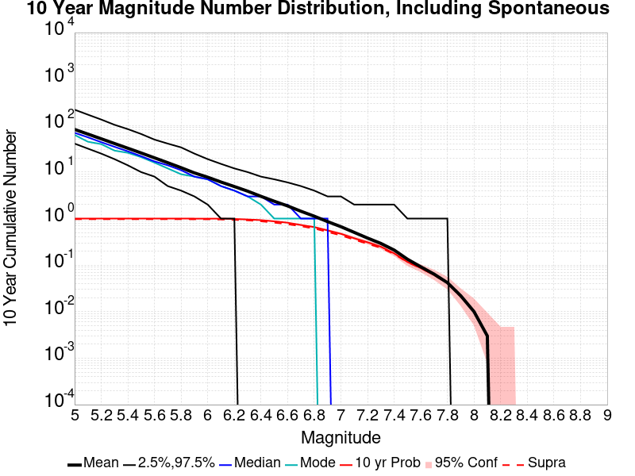
| Mag | Mean | 2.5 %ile | 97.5 %ile | Median | Mode | 10 yr Probability | 10 yr Prob 95% Conf | 10 yr Supra-Seis Prob |
|---|---|---|---|---|---|---|---|---|
| M≥5 | 82.765 | 41.000 | 220.000 | 70.000 | 63.000 | 1.000 (100.00%) | [99.52% 100.00%] | 0.973 (97.30%) |
| M≥5.1 | 65.704 | 32.000 | 172.000 | 56.000 | 45.000 | 1.000 (100.00%) | [99.52% 100.00%] | 0.973 (97.30%) |
| M≥5.2 | 52.054 | 25.000 | 135.000 | 44.000 | 40.000 | 1.000 (100.00%) | [99.52% 100.00%] | 0.973 (97.30%) |
| M≥5.3 | 41.174 | 19.000 | 104.000 | 35.000 | 29.000 | 1.000 (100.00%) | [99.52% 100.00%] | 0.973 (97.30%) |
| M≥5.4 | 32.620 | 14.000 | 84.000 | 28.000 | 26.000 | 1.000 (100.00%) | [99.52% 100.00%] | 0.973 (97.30%) |
| M≥5.5 | 25.782 | 10.000 | 66.000 | 22.000 | 21.000 | 1.000 (100.00%) | [99.52% 100.00%] | 0.973 (97.30%) |
| M≥5.6 | 20.277 | 8.000 | 50.000 | 17.000 | 16.000 | 1.000 (100.00%) | [99.52% 100.00%] | 0.973 (97.30%) |
| M≥5.7 | 15.916 | 5.000 | 41.000 | 14.000 | 12.000 | 1.000 (100.00%) | [99.52% 100.00%] | 0.973 (97.30%) |
| M≥5.8 | 12.444 | 4.000 | 34.000 | 11.000 | 9.000 | 1.000 (100.00%) | [99.52% 100.00%] | 0.973 (97.30%) |
| M≥5.9 | 9.612 | 3.000 | 25.000 | 8.000 | 8.000 | 1.000 (100.00%) | [99.52% 100.00%] | 0.970 (97.00%) |
| M≥6 | 7.762 | 2.000 | 19.000 | 7.000 | 7.000 | 0.999 (99.90%) | [99.35% 99.99%] | 0.969 (96.90%) |
| M≥6.1 | 6.111 | 1.000 | 15.000 | 5.000 | 5.000 | 0.996 (99.60%) | [98.90% 99.87%] | 0.958 (95.80%) |
| M≥6.2 | 4.891 | 1.000 | 12.000 | 4.000 | 4.000 | 0.982 (98.20%) | [97.11% 98.90%] | 0.943 (94.30%) |
| M≥6.3 | 3.891 | 0.000 | 10.000 | 3.000 | 3.000 | 0.958 (95.80%) | [94.31% 96.92%] | 0.919 (91.90%) |
| M≥6.4 | 3.013 | 0.000 | 8.000 | 3.000 | 2.000 | 0.928 (92.80%) | [90.97% 94.29%] | 0.877 (87.70%) |
| M≥6.5 | 2.361 | 0.000 | 7.000 | 2.000 | 1.000 | 0.874 (87.40%) | [85.15% 89.36%] | 0.819 (81.90%) |
| M≥6.6 | 1.874 | 0.000 | 6.000 | 2.000 | 1.000 | 0.816 (81.60%) | [79.03% 83.93%] | 0.760 (76.00%) |
| M≥6.7 | 1.440 | 0.000 | 5.000 | 1.000 | 1.000 | 0.731 (73.10%) | [70.22% 75.80%] | 0.686 (68.60%) |
| M≥6.8 | 1.127 | 0.000 | 4.000 | 1.000 | 1.000 | 0.657 (65.70%) | [62.65% 68.63%] | 0.613 (61.30%) |
| M≥6.9 | 0.862 | 0.000 | 3.000 | 1.000 | 0.000 | 0.558 (55.80%) | [52.66% 58.90%] | 0.517 (51.70%) |
| M≥7 | 0.671 | 0.000 | 3.000 | 0.000 | 0.000 | 0.471 (47.10%) | [43.97% 50.25%] | 0.436 (43.60%) |
| M≥7.1 | 0.506 | 0.000 | 2.000 | 0.000 | 0.000 | 0.378 (37.80%) | [34.80% 40.90%] | 0.353 (35.30%) |
| M≥7.2 | 0.382 | 0.000 | 2.000 | 0.000 | 0.000 | 0.310 (31.00%) | [28.16% 33.99%] | 0.287 (28.70%) |
| M≥7.3 | 0.293 | 0.000 | 2.000 | 0.000 | 0.000 | 0.249 (24.90%) | [22.27% 27.72%] | 0.236 (23.60%) |
| M≥7.4 | 0.211 | 0.000 | 2.000 | 0.000 | 0.000 | 0.179 (17.90%) | [15.60% 20.45%] | 0.173 (17.30%) |
| M≥7.5 | 0.134 | 0.000 | 1.000 | 0.000 | 0.000 | 0.117 (11.70%) | [9.81% 13.89%] | 0.116 (11.60%) |
| M≥7.6 | 0.092 | 0.000 | 1.000 | 0.000 | 0.000 | 0.086 (8.60%) | [6.97% 10.55%] | 0.086 (8.60%) |
| M≥7.7 | 0.064 | 0.000 | 1.000 | 0.000 | 0.000 | 0.061 (6.10%) | [4.73% 7.81%] | 0.061 (6.10%) |
| M≥7.8 | 0.042 | 0.000 | 1.000 | 0.000 | 0.000 | 0.041 (4.10%) | [2.99% 5.57%] | 0.041 (4.10%) |
| M≥7.9 | 0.022 | 0.000 | 0.000 | 0.000 | 0.000 | 0.021 (2.10%) | [1.34% 3.25%] | 0.021 (2.10%) |
| M≥8 | 0.010 | 0.000 | 0.000 | 0.000 | 0.000 | 0.010 (1.00%) | [0.51% 1.90%] | 0.010 (1.00%) |
| M≥8.1 | 3.00E-3 | 0.000 | 0.000 | 0.000 | 0.000 | 3.00E-3 (0.30%) | [0.08% 0.95%] | 3.00E-3 (0.30%) |
| M≥8.2 | 0.000 | 0.000 | 0.000 | 0.000 | 0.000 | 0.000 (0.00%) | [0.00% 0.48%] | 0.000 (0.00%) |
| M≥8.3 | 0.000 | 0.000 | 0.000 | 0.000 | 0.000 | 0.000 (0.00%) | [0.00% 0.48%] | 0.000 (0.00%) |
| M≥8.4 | 0.000 | 0.000 | 0.000 | 0.000 | 0.000 | 0.000 (0.00%) | [0.00% 0.48%] | 0.000 (0.00%) |
| M≥8.5 | 0.000 | 0.000 | 0.000 | 0.000 | 0.000 | 0.000 (0.00%) | [0.00% 0.48%] | 0.000 (0.00%) |
| M≥8.6 | 0.000 | 0.000 | 0.000 | 0.000 | 0.000 | 0.000 (0.00%) | [0.00% 0.48%] | 0.000 (0.00%) |
| M≥8.7 | 0.000 | 0.000 | 0.000 | 0.000 | 0.000 | 0.000 (0.00%) | [0.00% 0.48%] | 0.000 (0.00%) |
| M≥8.8 | 0.000 | 0.000 | 0.000 | 0.000 | 0.000 | 0.000 (0.00%) | [0.00% 0.48%] | 0.000 (0.00%) |
| M≥8.9 | 0.000 | 0.000 | 0.000 | 0.000 | 0.000 | 0.000 (0.00%) | [0.00% 0.48%] | 0.000 (0.00%) |
| M≥9 | 0.000 | 0.000 | 0.000 | 0.000 | 0.000 | 0.000 (0.00%) | [0.00% 0.48%] | 0.000 (0.00%) |
Note: This section only includes triggered events, spontaneous were calculated but filtered out here
Legend
| Mag | Mean | 2.5 %ile | 97.5 %ile | Median | Mode | 10 yr Probability | 10 yr Prob 95% Conf | 10 yr Supra-Seis Prob | Primary Aftershocks Mean |
|---|---|---|---|---|---|---|---|---|---|
| M≥5 | 13.583 | 3.000 | 40.000 | 11.000 | 7.000 | 1.000 (100.00%) | [99.52% 100.00%] | 0.472 (47.20%) | 5.826 |
| M≥5.1 | 10.779 | 2.000 | 32.000 | 9.000 | 6.000 | 0.999 (99.90%) | [99.35% 99.99%] | 0.472 (47.20%) | 4.634 |
| M≥5.2 | 8.554 | 1.000 | 25.000 | 7.000 | 6.000 | 0.994 (99.40%) | [98.63% 99.76%] | 0.472 (47.20%) | 3.704 |
| M≥5.3 | 6.818 | 1.000 | 20.000 | 5.000 | 4.000 | 0.983 (98.30%) | [97.23% 98.97%] | 0.472 (47.20%) | 2.964 |
| M≥5.4 | 5.353 | 0.000 | 17.000 | 4.000 | 3.000 | 0.970 (97.00%) | [95.69% 97.93%] | 0.472 (47.20%) | 2.321 |
| M≥5.5 | 4.216 | 0.000 | 14.000 | 3.000 | 2.000 | 0.946 (94.60%) | [92.96% 95.88%] | 0.472 (47.20%) | 1.868 |
| M≥5.6 | 3.340 | 0.000 | 11.000 | 3.000 | 1.000 | 0.906 (90.60%) | [88.58% 92.30%] | 0.472 (47.20%) | 1.486 |
| M≥5.7 | 2.599 | 0.000 | 9.000 | 2.000 | 1.000 | 0.851 (85.10%) | [82.71% 87.22%] | 0.472 (47.20%) | 1.186 |
| M≥5.8 | 2.010 | 0.000 | 7.000 | 2.000 | 1.000 | 0.781 (78.10%) | [75.38% 80.60%] | 0.472 (47.20%) | 0.937 |
| M≥5.9 | 1.486 | 0.000 | 6.000 | 1.000 | 1.000 | 0.697 (69.70%) | [66.73% 72.52%] | 0.448 (44.80%) | 0.704 |
| M≥6 | 1.178 | 0.000 | 4.000 | 1.000 | 0.000 | 0.628 (62.80%) | [59.71% 65.79%] | 0.435 (43.50%) | 0.598 |
| M≥6.1 | 0.904 | 0.000 | 4.000 | 1.000 | 0.000 | 0.539 (53.90%) | [50.75% 57.02%] | 0.387 (38.70%) | 0.468 |
| M≥6.2 | 0.723 | 0.000 | 3.000 | 0.000 | 0.000 | 0.474 (47.40%) | [44.27% 50.55%] | 0.356 (35.60%) | 0.382 |
| M≥6.3 | 0.575 | 0.000 | 3.000 | 0.000 | 0.000 | 0.403 (40.30%) | [37.25% 43.42%] | 0.321 (32.10%) | 0.315 |
| M≥6.4 | 0.439 | 0.000 | 2.000 | 0.000 | 0.000 | 0.337 (33.70%) | [30.79% 36.74%] | 0.273 (27.30%) | 0.248 |
| M≥6.5 | 0.340 | 0.000 | 2.000 | 0.000 | 0.000 | 0.273 (27.30%) | [24.58% 30.20%] | 0.225 (22.50%) | 0.193 |
| M≥6.6 | 0.273 | 0.000 | 2.000 | 0.000 | 0.000 | 0.230 (23.00%) | [20.45% 25.76%] | 0.193 (19.30%) | 0.153 |
| M≥6.7 | 0.211 | 0.000 | 2.000 | 0.000 | 0.000 | 0.181 (18.10%) | [15.79% 20.66%] | 0.158 (15.80%) | 0.120 |
| M≥6.8 | 0.174 | 0.000 | 1.000 | 0.000 | 0.000 | 0.158 (15.80%) | [13.62% 18.24%] | 0.140 (14.00%) | 0.098 |
| M≥6.9 | 0.131 | 0.000 | 1.000 | 0.000 | 0.000 | 0.121 (12.10%) | [10.18% 14.32%] | 0.110 (11.00%) | 0.071 |
| M≥7 | 0.102 | 0.000 | 1.000 | 0.000 | 0.000 | 0.097 (9.70%) | [7.97% 11.75%] | 0.091 (9.10%) | 0.058 |
| M≥7.1 | 0.072 | 0.000 | 1.000 | 0.000 | 0.000 | 0.069 (6.90%) | [5.44% 8.70%] | 0.065 (6.50%) | 0.041 |
| M≥7.2 | 0.049 | 0.000 | 1.000 | 0.000 | 0.000 | 0.048 (4.80%) | [3.60% 6.36%] | 0.044 (4.40%) | 0.026 |
| M≥7.3 | 0.040 | 0.000 | 1.000 | 0.000 | 0.000 | 0.040 (4.00%) | [2.91% 5.46%] | 0.037 (3.70%) | 0.023 |
| M≥7.4 | 0.024 | 0.000 | 0.000 | 0.000 | 0.000 | 0.024 (2.40%) | [1.58% 3.61%] | 0.023 (2.30%) | 0.012 |
| M≥7.5 | 0.013 | 0.000 | 0.000 | 0.000 | 0.000 | 0.013 (1.30%) | [0.72% 2.27%] | 0.013 (1.30%) | 7.00E-3 |
| M≥7.6 | 8.00E-3 | 0.000 | 0.000 | 0.000 | 0.000 | 8.00E-3 (0.80%) | [0.37% 1.64%] | 8.00E-3 (0.80%) | 2.00E-3 |
| M≥7.7 | 6.00E-3 | 0.000 | 0.000 | 0.000 | 0.000 | 6.00E-3 (0.60%) | [0.24% 1.37%] | 6.00E-3 (0.60%) | 1.00E-3 |
| M≥7.8 | 1.00E-3 | 0.000 | 0.000 | 0.000 | 0.000 | 1.00E-3 (0.10%) | [0.01% 0.65%] | 1.00E-3 (0.10%) | 0.000 |
| M≥7.9 | 1.00E-3 | 0.000 | 0.000 | 0.000 | 0.000 | 1.00E-3 (0.10%) | [0.01% 0.65%] | 1.00E-3 (0.10%) | 0.000 |
| M≥8 | 1.00E-3 | 0.000 | 0.000 | 0.000 | 0.000 | 1.00E-3 (0.10%) | [0.01% 0.65%] | 1.00E-3 (0.10%) | 0.000 |
| M≥8.1 | 0.000 | 0.000 | 0.000 | 0.000 | 0.000 | 0.000 (0.00%) | [0.00% 0.48%] | 0.000 (0.00%) | 0.000 |
| M≥8.2 | 0.000 | 0.000 | 0.000 | 0.000 | 0.000 | 0.000 (0.00%) | [0.00% 0.48%] | 0.000 (0.00%) | 0.000 |
| M≥8.3 | 0.000 | 0.000 | 0.000 | 0.000 | 0.000 | 0.000 (0.00%) | [0.00% 0.48%] | 0.000 (0.00%) | 0.000 |
| M≥8.4 | 0.000 | 0.000 | 0.000 | 0.000 | 0.000 | 0.000 (0.00%) | [0.00% 0.48%] | 0.000 (0.00%) | 0.000 |
| M≥8.5 | 0.000 | 0.000 | 0.000 | 0.000 | 0.000 | 0.000 (0.00%) | [0.00% 0.48%] | 0.000 (0.00%) | 0.000 |
| M≥8.6 | 0.000 | 0.000 | 0.000 | 0.000 | 0.000 | 0.000 (0.00%) | [0.00% 0.48%] | 0.000 (0.00%) | 0.000 |
| M≥8.7 | 0.000 | 0.000 | 0.000 | 0.000 | 0.000 | 0.000 (0.00%) | [0.00% 0.48%] | 0.000 (0.00%) | 0.000 |
| M≥8.8 | 0.000 | 0.000 | 0.000 | 0.000 | 0.000 | 0.000 (0.00%) | [0.00% 0.48%] | 0.000 (0.00%) | 0.000 |
| M≥8.9 | 0.000 | 0.000 | 0.000 | 0.000 | 0.000 | 0.000 (0.00%) | [0.00% 0.48%] | 0.000 (0.00%) | 0.000 |
| M≥9 | 0.000 | 0.000 | 0.000 | 0.000 | 0.000 | 0.000 (0.00%) | [0.00% 0.48%] | 0.000 (0.00%) | 0.000 |
Note: This section includes both spontaneous and triggered events
Legend
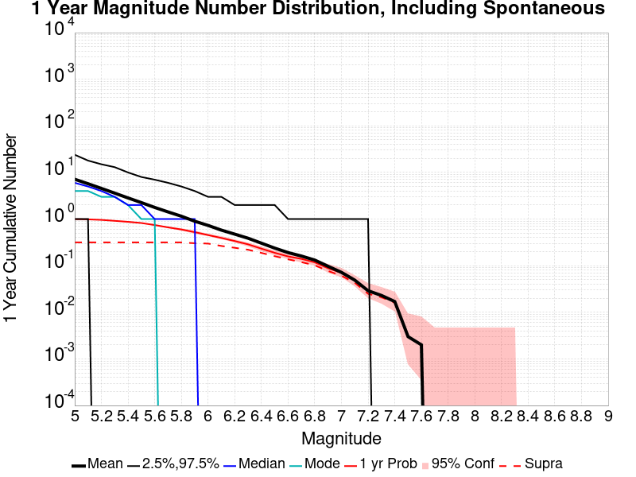
| Mag | Mean | 2.5 %ile | 97.5 %ile | Median | Mode | 1 yr Probability | 1 yr Prob 95% Conf | 1 yr Supra-Seis Prob |
|---|---|---|---|---|---|---|---|---|
| M≥5 | 7.157 | 1.000 | 24.000 | 6.000 | 4.000 | 0.996 (99.60%) | [98.90% 99.87%] | 0.316 (31.60%) |
| M≥5.1 | 5.727 | 1.000 | 18.000 | 5.000 | 4.000 | 0.986 (98.60%) | [97.60% 99.20%] | 0.316 (31.60%) |
| M≥5.2 | 4.550 | 0.000 | 15.000 | 4.000 | 3.000 | 0.960 (96.00%) | [94.54% 97.09%] | 0.316 (31.60%) |
| M≥5.3 | 3.603 | 0.000 | 13.000 | 3.000 | 3.000 | 0.916 (91.60%) | [89.66% 93.21%] | 0.316 (31.60%) |
| M≥5.4 | 2.840 | 0.000 | 10.000 | 2.000 | 2.000 | 0.873 (87.30%) | [85.04% 89.27%] | 0.316 (31.60%) |
| M≥5.5 | 2.256 | 0.000 | 8.000 | 2.000 | 1.000 | 0.823 (82.30%) | [79.76% 84.59%] | 0.316 (31.60%) |
| M≥5.6 | 1.777 | 0.000 | 7.000 | 1.000 | 1.000 | 0.744 (74.40%) | [71.55% 77.06%] | 0.316 (31.60%) |
| M≥5.7 | 1.424 | 0.000 | 6.000 | 1.000 | 0.000 | 0.664 (66.40%) | [63.36% 69.31%] | 0.316 (31.60%) |
| M≥5.8 | 1.151 | 0.000 | 5.000 | 1.000 | 0.000 | 0.598 (59.80%) | [56.68% 62.85%] | 0.316 (31.60%) |
| M≥5.9 | 0.899 | 0.000 | 4.000 | 1.000 | 0.000 | 0.524 (52.40%) | [49.25% 55.53%] | 0.303 (30.30%) |
| M≥6 | 0.731 | 0.000 | 3.000 | 0.000 | 0.000 | 0.454 (45.40%) | [42.29% 48.55%] | 0.298 (29.80%) |
| M≥6.1 | 0.579 | 0.000 | 3.000 | 0.000 | 0.000 | 0.393 (39.30%) | [36.27% 42.41%] | 0.265 (26.50%) |
| M≥6.2 | 0.475 | 0.000 | 2.000 | 0.000 | 0.000 | 0.338 (33.80%) | [30.89% 36.84%] | 0.242 (24.20%) |
| M≥6.3 | 0.388 | 0.000 | 2.000 | 0.000 | 0.000 | 0.287 (28.70%) | [25.93% 31.63%] | 0.220 (22.00%) |
| M≥6.4 | 0.304 | 0.000 | 2.000 | 0.000 | 0.000 | 0.232 (23.20%) | [20.64% 25.97%] | 0.188 (18.80%) |
| M≥6.5 | 0.238 | 0.000 | 2.000 | 0.000 | 0.000 | 0.189 (18.90%) | [16.55% 21.50%] | 0.160 (16.00%) |
| M≥6.6 | 0.191 | 0.000 | 1.000 | 0.000 | 0.000 | 0.158 (15.80%) | [13.62% 18.24%] | 0.137 (13.70%) |
| M≥6.7 | 0.161 | 0.000 | 1.000 | 0.000 | 0.000 | 0.140 (14.00%) | [11.94% 16.34%] | 0.119 (11.90%) |
| M≥6.8 | 0.132 | 0.000 | 1.000 | 0.000 | 0.000 | 0.118 (11.80%) | [9.90% 14.00%] | 0.102 (10.20%) |
| M≥6.9 | 0.097 | 0.000 | 1.000 | 0.000 | 0.000 | 0.088 (8.80%) | [7.15% 10.77%] | 0.077 (7.70%) |
| M≥7 | 0.072 | 0.000 | 1.000 | 0.000 | 0.000 | 0.070 (7.00%) | [5.53% 8.81%] | 0.061 (6.10%) |
| M≥7.1 | 0.049 | 0.000 | 1.000 | 0.000 | 0.000 | 0.048 (4.80%) | [3.60% 6.36%] | 0.043 (4.30%) |
| M≥7.2 | 0.029 | 0.000 | 1.000 | 0.000 | 0.000 | 0.029 (2.90%) | [1.99% 4.19%] | 0.025 (2.50%) |
| M≥7.3 | 0.023 | 0.000 | 0.000 | 0.000 | 0.000 | 0.023 (2.30%) | [1.50% 3.49%] | 0.021 (2.10%) |
| M≥7.4 | 0.017 | 0.000 | 0.000 | 0.000 | 0.000 | 0.017 (1.70%) | [1.03% 2.77%] | 0.016 (1.60%) |
| M≥7.5 | 3.00E-3 | 0.000 | 0.000 | 0.000 | 0.000 | 3.00E-3 (0.30%) | [0.08% 0.95%] | 3.00E-3 (0.30%) |
| M≥7.6 | 2.00E-3 | 0.000 | 0.000 | 0.000 | 0.000 | 2.00E-3 (0.20%) | [0.03% 0.80%] | 2.00E-3 (0.20%) |
| M≥7.7 | 0.000 | 0.000 | 0.000 | 0.000 | 0.000 | 0.000 (0.00%) | [0.00% 0.48%] | 0.000 (0.00%) |
| M≥7.8 | 0.000 | 0.000 | 0.000 | 0.000 | 0.000 | 0.000 (0.00%) | [0.00% 0.48%] | 0.000 (0.00%) |
| M≥7.9 | 0.000 | 0.000 | 0.000 | 0.000 | 0.000 | 0.000 (0.00%) | [0.00% 0.48%] | 0.000 (0.00%) |
| M≥8 | 0.000 | 0.000 | 0.000 | 0.000 | 0.000 | 0.000 (0.00%) | [0.00% 0.48%] | 0.000 (0.00%) |
| M≥8.1 | 0.000 | 0.000 | 0.000 | 0.000 | 0.000 | 0.000 (0.00%) | [0.00% 0.48%] | 0.000 (0.00%) |
| M≥8.2 | 0.000 | 0.000 | 0.000 | 0.000 | 0.000 | 0.000 (0.00%) | [0.00% 0.48%] | 0.000 (0.00%) |
| M≥8.3 | 0.000 | 0.000 | 0.000 | 0.000 | 0.000 | 0.000 (0.00%) | [0.00% 0.48%] | 0.000 (0.00%) |
| M≥8.4 | 0.000 | 0.000 | 0.000 | 0.000 | 0.000 | 0.000 (0.00%) | [0.00% 0.48%] | 0.000 (0.00%) |
| M≥8.5 | 0.000 | 0.000 | 0.000 | 0.000 | 0.000 | 0.000 (0.00%) | [0.00% 0.48%] | 0.000 (0.00%) |
| M≥8.6 | 0.000 | 0.000 | 0.000 | 0.000 | 0.000 | 0.000 (0.00%) | [0.00% 0.48%] | 0.000 (0.00%) |
| M≥8.7 | 0.000 | 0.000 | 0.000 | 0.000 | 0.000 | 0.000 (0.00%) | [0.00% 0.48%] | 0.000 (0.00%) |
| M≥8.8 | 0.000 | 0.000 | 0.000 | 0.000 | 0.000 | 0.000 (0.00%) | [0.00% 0.48%] | 0.000 (0.00%) |
| M≥8.9 | 0.000 | 0.000 | 0.000 | 0.000 | 0.000 | 0.000 (0.00%) | [0.00% 0.48%] | 0.000 (0.00%) |
| M≥9 | 0.000 | 0.000 | 0.000 | 0.000 | 0.000 | 0.000 (0.00%) | [0.00% 0.48%] | 0.000 (0.00%) |
Note: This section only includes triggered events, spontaneous were calculated but filtered out here
Legend
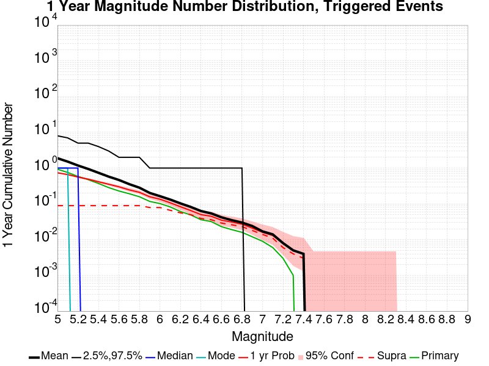
| Mag | Mean | 2.5 %ile | 97.5 %ile | Median | Mode | 1 yr Probability | 1 yr Prob 95% Conf | 1 yr Supra-Seis Prob | Primary Aftershocks Mean |
|---|---|---|---|---|---|---|---|---|---|
| M≥5 | 1.888 | 0.000 | 8.000 | 1.000 | 1.000 | 0.738 (73.80%) | [70.94% 76.48%] | 0.089 (8.90%) | 0.933 |
| M≥5.1 | 1.518 | 0.000 | 7.000 | 1.000 | 1.000 | 0.658 (65.80%) | [62.75% 68.72%] | 0.089 (8.90%) | 0.754 |
| M≥5.2 | 1.182 | 0.000 | 5.000 | 1.000 | 0.000 | 0.563 (56.30%) | [53.16% 59.39%] | 0.089 (8.90%) | 0.585 |
| M≥5.3 | 0.946 | 0.000 | 5.000 | 0.000 | 0.000 | 0.490 (49.00%) | [45.86% 52.15%] | 0.089 (8.90%) | 0.475 |
| M≥5.4 | 0.740 | 0.000 | 4.000 | 0.000 | 0.000 | 0.415 (41.50%) | [38.44% 44.63%] | 0.089 (8.90%) | 0.372 |
| M≥5.5 | 0.577 | 0.000 | 3.000 | 0.000 | 0.000 | 0.353 (35.30%) | [32.35% 38.36%] | 0.089 (8.90%) | 0.285 |
| M≥5.6 | 0.465 | 0.000 | 2.000 | 0.000 | 0.000 | 0.300 (30.00%) | [27.19% 32.96%] | 0.089 (8.90%) | 0.229 |
| M≥5.7 | 0.356 | 0.000 | 2.000 | 0.000 | 0.000 | 0.246 (24.60%) | [21.98% 27.41%] | 0.089 (8.90%) | 0.192 |
| M≥5.8 | 0.283 | 0.000 | 2.000 | 0.000 | 0.000 | 0.210 (21.00%) | [18.54% 23.69%] | 0.089 (8.90%) | 0.158 |
| M≥5.9 | 0.202 | 0.000 | 1.000 | 0.000 | 0.000 | 0.158 (15.80%) | [13.62% 18.24%] | 0.079 (7.90%) | 0.117 |
| M≥6 | 0.164 | 0.000 | 1.000 | 0.000 | 0.000 | 0.135 (13.50%) | [11.47% 15.81%] | 0.079 (7.90%) | 0.102 |
| M≥6.1 | 0.132 | 0.000 | 1.000 | 0.000 | 0.000 | 0.107 (10.70%) | [8.89% 12.82%] | 0.066 (6.60%) | 0.082 |
| M≥6.2 | 0.103 | 0.000 | 1.000 | 0.000 | 0.000 | 0.083 (8.30%) | [6.70% 10.23%] | 0.056 (5.60%) | 0.061 |
| M≥6.3 | 0.082 | 0.000 | 1.000 | 0.000 | 0.000 | 0.065 (6.50%) | [5.09% 8.26%] | 0.050 (5.00%) | 0.049 |
| M≥6.4 | 0.063 | 0.000 | 1.000 | 0.000 | 0.000 | 0.050 (5.00%) | [3.77% 6.59%] | 0.039 (3.90%) | 0.036 |
| M≥6.5 | 0.054 | 0.000 | 1.000 | 0.000 | 0.000 | 0.045 (4.50%) | [3.34% 6.02%] | 0.036 (3.60%) | 0.032 |
| M≥6.6 | 0.042 | 0.000 | 1.000 | 0.000 | 0.000 | 0.035 (3.50%) | [2.49% 4.89%] | 0.029 (2.90%) | 0.023 |
| M≥6.7 | 0.035 | 0.000 | 1.000 | 0.000 | 0.000 | 0.031 (3.10%) | [2.15% 4.42%] | 0.026 (2.60%) | 0.019 |
| M≥6.8 | 0.030 | 0.000 | 1.000 | 0.000 | 0.000 | 0.027 (2.70%) | [1.82% 3.96%] | 0.023 (2.30%) | 0.016 |
| M≥6.9 | 0.024 | 0.000 | 0.000 | 0.000 | 0.000 | 0.021 (2.10%) | [1.34% 3.25%] | 0.018 (1.80%) | 0.012 |
| M≥7 | 0.017 | 0.000 | 0.000 | 0.000 | 0.000 | 0.016 (1.60%) | [0.95% 2.64%] | 0.014 (1.40%) | 9.00E-3 |
| M≥7.1 | 0.014 | 0.000 | 0.000 | 0.000 | 0.000 | 0.013 (1.30%) | [0.72% 2.27%] | 0.011 (1.10%) | 6.00E-3 |
| M≥7.2 | 8.00E-3 | 0.000 | 0.000 | 0.000 | 0.000 | 8.00E-3 (0.80%) | [0.37% 1.64%] | 6.00E-3 (0.60%) | 3.00E-3 |
| M≥7.3 | 5.00E-3 | 0.000 | 0.000 | 0.000 | 0.000 | 5.00E-3 (0.50%) | [0.18% 1.23%] | 4.00E-3 (0.40%) | 1.00E-3 |
| M≥7.4 | 4.00E-3 | 0.000 | 0.000 | 0.000 | 0.000 | 4.00E-3 (0.40%) | [0.13% 1.10%] | 3.00E-3 (0.30%) | 0.000 |
| M≥7.5 | 0.000 | 0.000 | 0.000 | 0.000 | 0.000 | 0.000 (0.00%) | [0.00% 0.48%] | 0.000 (0.00%) | 0.000 |
| M≥7.6 | 0.000 | 0.000 | 0.000 | 0.000 | 0.000 | 0.000 (0.00%) | [0.00% 0.48%] | 0.000 (0.00%) | 0.000 |
| M≥7.7 | 0.000 | 0.000 | 0.000 | 0.000 | 0.000 | 0.000 (0.00%) | [0.00% 0.48%] | 0.000 (0.00%) | 0.000 |
| M≥7.8 | 0.000 | 0.000 | 0.000 | 0.000 | 0.000 | 0.000 (0.00%) | [0.00% 0.48%] | 0.000 (0.00%) | 0.000 |
| M≥7.9 | 0.000 | 0.000 | 0.000 | 0.000 | 0.000 | 0.000 (0.00%) | [0.00% 0.48%] | 0.000 (0.00%) | 0.000 |
| M≥8 | 0.000 | 0.000 | 0.000 | 0.000 | 0.000 | 0.000 (0.00%) | [0.00% 0.48%] | 0.000 (0.00%) | 0.000 |
| M≥8.1 | 0.000 | 0.000 | 0.000 | 0.000 | 0.000 | 0.000 (0.00%) | [0.00% 0.48%] | 0.000 (0.00%) | 0.000 |
| M≥8.2 | 0.000 | 0.000 | 0.000 | 0.000 | 0.000 | 0.000 (0.00%) | [0.00% 0.48%] | 0.000 (0.00%) | 0.000 |
| M≥8.3 | 0.000 | 0.000 | 0.000 | 0.000 | 0.000 | 0.000 (0.00%) | [0.00% 0.48%] | 0.000 (0.00%) | 0.000 |
| M≥8.4 | 0.000 | 0.000 | 0.000 | 0.000 | 0.000 | 0.000 (0.00%) | [0.00% 0.48%] | 0.000 (0.00%) | 0.000 |
| M≥8.5 | 0.000 | 0.000 | 0.000 | 0.000 | 0.000 | 0.000 (0.00%) | [0.00% 0.48%] | 0.000 (0.00%) | 0.000 |
| M≥8.6 | 0.000 | 0.000 | 0.000 | 0.000 | 0.000 | 0.000 (0.00%) | [0.00% 0.48%] | 0.000 (0.00%) | 0.000 |
| M≥8.7 | 0.000 | 0.000 | 0.000 | 0.000 | 0.000 | 0.000 (0.00%) | [0.00% 0.48%] | 0.000 (0.00%) | 0.000 |
| M≥8.8 | 0.000 | 0.000 | 0.000 | 0.000 | 0.000 | 0.000 (0.00%) | [0.00% 0.48%] | 0.000 (0.00%) | 0.000 |
| M≥8.9 | 0.000 | 0.000 | 0.000 | 0.000 | 0.000 | 0.000 (0.00%) | [0.00% 0.48%] | 0.000 (0.00%) | 0.000 |
| M≥9 | 0.000 | 0.000 | 0.000 | 0.000 | 0.000 | 0.000 (0.00%) | [0.00% 0.48%] | 0.000 (0.00%) | 0.000 |
Note: This section includes both spontaneous and triggered events
Legend
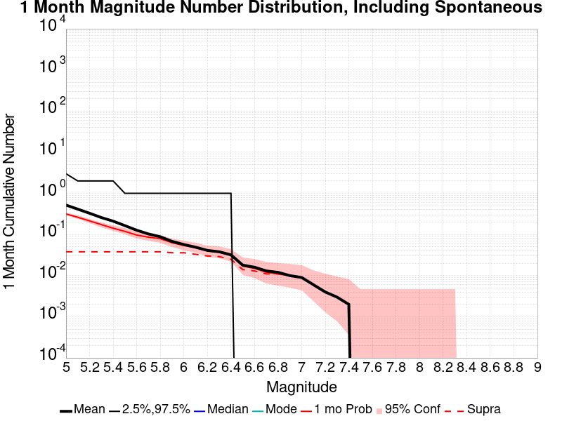
| Mag | Mean | 2.5 %ile | 97.5 %ile | Median | Mode | 1 mo Probability | 1 mo Prob 95% Conf | 1 mo Supra-Seis Prob |
|---|---|---|---|---|---|---|---|---|
| M≥5 | 0.519 | 0.000 | 3.000 | 0.000 | 0.000 | 0.316 (31.60%) | [28.74% 34.60%] | 0.038 (3.80%) |
| M≥5.1 | 0.413 | 0.000 | 2.000 | 0.000 | 0.000 | 0.262 (26.20%) | [23.52% 29.06%] | 0.038 (3.80%) |
| M≥5.2 | 0.328 | 0.000 | 2.000 | 0.000 | 0.000 | 0.214 (21.40%) | [18.92% 24.10%] | 0.038 (3.80%) |
| M≥5.3 | 0.258 | 0.000 | 2.000 | 0.000 | 0.000 | 0.174 (17.40%) | [15.13% 19.93%] | 0.038 (3.80%) |
| M≥5.4 | 0.211 | 0.000 | 2.000 | 0.000 | 0.000 | 0.142 (14.20%) | [12.13% 16.55%] | 0.038 (3.80%) |
| M≥5.5 | 0.164 | 0.000 | 1.000 | 0.000 | 0.000 | 0.119 (11.90%) | [9.99% 14.11%] | 0.038 (3.80%) |
| M≥5.6 | 0.127 | 0.000 | 1.000 | 0.000 | 0.000 | 0.097 (9.70%) | [7.97% 11.75%] | 0.038 (3.80%) |
| M≥5.7 | 0.103 | 0.000 | 1.000 | 0.000 | 0.000 | 0.086 (8.60%) | [6.97% 10.55%] | 0.038 (3.80%) |
| M≥5.8 | 0.088 | 0.000 | 1.000 | 0.000 | 0.000 | 0.079 (7.90%) | [6.34% 9.79%] | 0.038 (3.80%) |
| M≥5.9 | 0.068 | 0.000 | 1.000 | 0.000 | 0.000 | 0.063 (6.30%) | [4.91% 8.03%] | 0.036 (3.60%) |
| M≥6 | 0.057 | 0.000 | 1.000 | 0.000 | 0.000 | 0.054 (5.40%) | [4.12% 7.04%] | 0.036 (3.60%) |
| M≥6.1 | 0.049 | 0.000 | 1.000 | 0.000 | 0.000 | 0.048 (4.80%) | [3.60% 6.36%] | 0.033 (3.30%) |
| M≥6.2 | 0.041 | 0.000 | 1.000 | 0.000 | 0.000 | 0.040 (4.00%) | [2.91% 5.46%] | 0.030 (3.00%) |
| M≥6.3 | 0.038 | 0.000 | 1.000 | 0.000 | 0.000 | 0.037 (3.70%) | [2.65% 5.12%] | 0.029 (2.90%) |
| M≥6.4 | 0.032 | 0.000 | 1.000 | 0.000 | 0.000 | 0.031 (3.10%) | [2.15% 4.42%] | 0.025 (2.50%) |
| M≥6.5 | 0.018 | 0.000 | 0.000 | 0.000 | 0.000 | 0.017 (1.70%) | [1.03% 2.77%] | 0.014 (1.40%) |
| M≥6.6 | 0.016 | 0.000 | 0.000 | 0.000 | 0.000 | 0.015 (1.50%) | [0.87% 2.52%] | 0.013 (1.30%) |
| M≥6.7 | 0.013 | 0.000 | 0.000 | 0.000 | 0.000 | 0.012 (1.20%) | [0.65% 2.15%] | 0.011 (1.10%) |
| M≥6.8 | 0.012 | 0.000 | 0.000 | 0.000 | 0.000 | 0.011 (1.10%) | [0.58% 2.02%] | 0.011 (1.10%) |
| M≥6.9 | 0.010 | 0.000 | 0.000 | 0.000 | 0.000 | 0.010 (1.00%) | [0.51% 1.90%] | 0.010 (1.00%) |
| M≥7 | 9.00E-3 | 0.000 | 0.000 | 0.000 | 0.000 | 9.00E-3 (0.90%) | [0.44% 1.77%] | 9.00E-3 (0.90%) |
| M≥7.1 | 6.00E-3 | 0.000 | 0.000 | 0.000 | 0.000 | 6.00E-3 (0.60%) | [0.24% 1.37%] | 6.00E-3 (0.60%) |
| M≥7.2 | 4.00E-3 | 0.000 | 0.000 | 0.000 | 0.000 | 4.00E-3 (0.40%) | [0.13% 1.10%] | 4.00E-3 (0.40%) |
| M≥7.3 | 3.00E-3 | 0.000 | 0.000 | 0.000 | 0.000 | 3.00E-3 (0.30%) | [0.08% 0.95%] | 3.00E-3 (0.30%) |
| M≥7.4 | 2.00E-3 | 0.000 | 0.000 | 0.000 | 0.000 | 2.00E-3 (0.20%) | [0.03% 0.80%] | 2.00E-3 (0.20%) |
| M≥7.5 | 0.000 | 0.000 | 0.000 | 0.000 | 0.000 | 0.000 (0.00%) | [0.00% 0.48%] | 0.000 (0.00%) |
| M≥7.6 | 0.000 | 0.000 | 0.000 | 0.000 | 0.000 | 0.000 (0.00%) | [0.00% 0.48%] | 0.000 (0.00%) |
| M≥7.7 | 0.000 | 0.000 | 0.000 | 0.000 | 0.000 | 0.000 (0.00%) | [0.00% 0.48%] | 0.000 (0.00%) |
| M≥7.8 | 0.000 | 0.000 | 0.000 | 0.000 | 0.000 | 0.000 (0.00%) | [0.00% 0.48%] | 0.000 (0.00%) |
| M≥7.9 | 0.000 | 0.000 | 0.000 | 0.000 | 0.000 | 0.000 (0.00%) | [0.00% 0.48%] | 0.000 (0.00%) |
| M≥8 | 0.000 | 0.000 | 0.000 | 0.000 | 0.000 | 0.000 (0.00%) | [0.00% 0.48%] | 0.000 (0.00%) |
| M≥8.1 | 0.000 | 0.000 | 0.000 | 0.000 | 0.000 | 0.000 (0.00%) | [0.00% 0.48%] | 0.000 (0.00%) |
| M≥8.2 | 0.000 | 0.000 | 0.000 | 0.000 | 0.000 | 0.000 (0.00%) | [0.00% 0.48%] | 0.000 (0.00%) |
| M≥8.3 | 0.000 | 0.000 | 0.000 | 0.000 | 0.000 | 0.000 (0.00%) | [0.00% 0.48%] | 0.000 (0.00%) |
| M≥8.4 | 0.000 | 0.000 | 0.000 | 0.000 | 0.000 | 0.000 (0.00%) | [0.00% 0.48%] | 0.000 (0.00%) |
| M≥8.5 | 0.000 | 0.000 | 0.000 | 0.000 | 0.000 | 0.000 (0.00%) | [0.00% 0.48%] | 0.000 (0.00%) |
| M≥8.6 | 0.000 | 0.000 | 0.000 | 0.000 | 0.000 | 0.000 (0.00%) | [0.00% 0.48%] | 0.000 (0.00%) |
| M≥8.7 | 0.000 | 0.000 | 0.000 | 0.000 | 0.000 | 0.000 (0.00%) | [0.00% 0.48%] | 0.000 (0.00%) |
| M≥8.8 | 0.000 | 0.000 | 0.000 | 0.000 | 0.000 | 0.000 (0.00%) | [0.00% 0.48%] | 0.000 (0.00%) |
| M≥8.9 | 0.000 | 0.000 | 0.000 | 0.000 | 0.000 | 0.000 (0.00%) | [0.00% 0.48%] | 0.000 (0.00%) |
| M≥9 | 0.000 | 0.000 | 0.000 | 0.000 | 0.000 | 0.000 (0.00%) | [0.00% 0.48%] | 0.000 (0.00%) |
Note: This section only includes triggered events, spontaneous were calculated but filtered out here
Legend
| Mag | Mean | 2.5 %ile | 97.5 %ile | Median | Mode | 1 mo Probability | 1 mo Prob 95% Conf | 1 mo Supra-Seis Prob | Primary Aftershocks Mean |
|---|---|---|---|---|---|---|---|---|---|
| M≥5 | 0.183 | 0.000 | 1.000 | 0.000 | 0.000 | 0.119 (11.90%) | [9.99% 14.11%] | 0.010 (1.00%) | 0.105 |
| M≥5.1 | 0.144 | 0.000 | 1.000 | 0.000 | 0.000 | 0.095 (9.50%) | [7.79% 11.53%] | 0.010 (1.00%) | 0.083 |
| M≥5.2 | 0.113 | 0.000 | 1.000 | 0.000 | 0.000 | 0.077 (7.70%) | [6.16% 9.57%] | 0.010 (1.00%) | 0.069 |
| M≥5.3 | 0.092 | 0.000 | 1.000 | 0.000 | 0.000 | 0.065 (6.50%) | [5.09% 8.26%] | 0.010 (1.00%) | 0.054 |
| M≥5.4 | 0.072 | 0.000 | 1.000 | 0.000 | 0.000 | 0.053 (5.30%) | [4.03% 6.92%] | 0.010 (1.00%) | 0.043 |
| M≥5.5 | 0.056 | 0.000 | 1.000 | 0.000 | 0.000 | 0.044 (4.40%) | [3.25% 5.91%] | 0.010 (1.00%) | 0.034 |
| M≥5.6 | 0.041 | 0.000 | 1.000 | 0.000 | 0.000 | 0.033 (3.30%) | [2.32% 4.66%] | 0.010 (1.00%) | 0.023 |
| M≥5.7 | 0.030 | 0.000 | 1.000 | 0.000 | 0.000 | 0.027 (2.70%) | [1.82% 3.96%] | 0.010 (1.00%) | 0.020 |
| M≥5.8 | 0.025 | 0.000 | 0.000 | 0.000 | 0.000 | 0.024 (2.40%) | [1.58% 3.61%] | 0.010 (1.00%) | 0.017 |
| M≥5.9 | 0.016 | 0.000 | 0.000 | 0.000 | 0.000 | 0.015 (1.50%) | [0.87% 2.52%] | 8.00E-3 (0.80%) | 0.011 |
| M≥6 | 0.015 | 0.000 | 0.000 | 0.000 | 0.000 | 0.015 (1.50%) | [0.87% 2.52%] | 8.00E-3 (0.80%) | 0.011 |
| M≥6.1 | 0.012 | 0.000 | 0.000 | 0.000 | 0.000 | 0.012 (1.20%) | [0.65% 2.15%] | 7.00E-3 (0.70%) | 8.00E-3 |
| M≥6.2 | 0.011 | 0.000 | 0.000 | 0.000 | 0.000 | 0.011 (1.10%) | [0.58% 2.02%] | 6.00E-3 (0.60%) | 7.00E-3 |
| M≥6.3 | 9.00E-3 | 0.000 | 0.000 | 0.000 | 0.000 | 9.00E-3 (0.90%) | [0.44% 1.77%] | 6.00E-3 (0.60%) | 6.00E-3 |
| M≥6.4 | 8.00E-3 | 0.000 | 0.000 | 0.000 | 0.000 | 8.00E-3 (0.80%) | [0.37% 1.64%] | 5.00E-3 (0.50%) | 6.00E-3 |
| M≥6.5 | 7.00E-3 | 0.000 | 0.000 | 0.000 | 0.000 | 7.00E-3 (0.70%) | [0.31% 1.50%] | 5.00E-3 (0.50%) | 5.00E-3 |
| M≥6.6 | 5.00E-3 | 0.000 | 0.000 | 0.000 | 0.000 | 5.00E-3 (0.50%) | [0.18% 1.23%] | 4.00E-3 (0.40%) | 3.00E-3 |
| M≥6.7 | 4.00E-3 | 0.000 | 0.000 | 0.000 | 0.000 | 4.00E-3 (0.40%) | [0.13% 1.10%] | 4.00E-3 (0.40%) | 2.00E-3 |
| M≥6.8 | 4.00E-3 | 0.000 | 0.000 | 0.000 | 0.000 | 4.00E-3 (0.40%) | [0.13% 1.10%] | 4.00E-3 (0.40%) | 2.00E-3 |
| M≥6.9 | 4.00E-3 | 0.000 | 0.000 | 0.000 | 0.000 | 4.00E-3 (0.40%) | [0.13% 1.10%] | 4.00E-3 (0.40%) | 2.00E-3 |
| M≥7 | 4.00E-3 | 0.000 | 0.000 | 0.000 | 0.000 | 4.00E-3 (0.40%) | [0.13% 1.10%] | 4.00E-3 (0.40%) | 2.00E-3 |
| M≥7.1 | 3.00E-3 | 0.000 | 0.000 | 0.000 | 0.000 | 3.00E-3 (0.30%) | [0.08% 0.95%] | 3.00E-3 (0.30%) | 1.00E-3 |
| M≥7.2 | 3.00E-3 | 0.000 | 0.000 | 0.000 | 0.000 | 3.00E-3 (0.30%) | [0.08% 0.95%] | 3.00E-3 (0.30%) | 1.00E-3 |
| M≥7.3 | 2.00E-3 | 0.000 | 0.000 | 0.000 | 0.000 | 2.00E-3 (0.20%) | [0.03% 0.80%] | 2.00E-3 (0.20%) | 1.00E-3 |
| M≥7.4 | 1.00E-3 | 0.000 | 0.000 | 0.000 | 0.000 | 1.00E-3 (0.10%) | [0.01% 0.65%] | 1.00E-3 (0.10%) | 0.000 |
| M≥7.5 | 0.000 | 0.000 | 0.000 | 0.000 | 0.000 | 0.000 (0.00%) | [0.00% 0.48%] | 0.000 (0.00%) | 0.000 |
| M≥7.6 | 0.000 | 0.000 | 0.000 | 0.000 | 0.000 | 0.000 (0.00%) | [0.00% 0.48%] | 0.000 (0.00%) | 0.000 |
| M≥7.7 | 0.000 | 0.000 | 0.000 | 0.000 | 0.000 | 0.000 (0.00%) | [0.00% 0.48%] | 0.000 (0.00%) | 0.000 |
| M≥7.8 | 0.000 | 0.000 | 0.000 | 0.000 | 0.000 | 0.000 (0.00%) | [0.00% 0.48%] | 0.000 (0.00%) | 0.000 |
| M≥7.9 | 0.000 | 0.000 | 0.000 | 0.000 | 0.000 | 0.000 (0.00%) | [0.00% 0.48%] | 0.000 (0.00%) | 0.000 |
| M≥8 | 0.000 | 0.000 | 0.000 | 0.000 | 0.000 | 0.000 (0.00%) | [0.00% 0.48%] | 0.000 (0.00%) | 0.000 |
| M≥8.1 | 0.000 | 0.000 | 0.000 | 0.000 | 0.000 | 0.000 (0.00%) | [0.00% 0.48%] | 0.000 (0.00%) | 0.000 |
| M≥8.2 | 0.000 | 0.000 | 0.000 | 0.000 | 0.000 | 0.000 (0.00%) | [0.00% 0.48%] | 0.000 (0.00%) | 0.000 |
| M≥8.3 | 0.000 | 0.000 | 0.000 | 0.000 | 0.000 | 0.000 (0.00%) | [0.00% 0.48%] | 0.000 (0.00%) | 0.000 |
| M≥8.4 | 0.000 | 0.000 | 0.000 | 0.000 | 0.000 | 0.000 (0.00%) | [0.00% 0.48%] | 0.000 (0.00%) | 0.000 |
| M≥8.5 | 0.000 | 0.000 | 0.000 | 0.000 | 0.000 | 0.000 (0.00%) | [0.00% 0.48%] | 0.000 (0.00%) | 0.000 |
| M≥8.6 | 0.000 | 0.000 | 0.000 | 0.000 | 0.000 | 0.000 (0.00%) | [0.00% 0.48%] | 0.000 (0.00%) | 0.000 |
| M≥8.7 | 0.000 | 0.000 | 0.000 | 0.000 | 0.000 | 0.000 (0.00%) | [0.00% 0.48%] | 0.000 (0.00%) | 0.000 |
| M≥8.8 | 0.000 | 0.000 | 0.000 | 0.000 | 0.000 | 0.000 (0.00%) | [0.00% 0.48%] | 0.000 (0.00%) | 0.000 |
| M≥8.9 | 0.000 | 0.000 | 0.000 | 0.000 | 0.000 | 0.000 (0.00%) | [0.00% 0.48%] | 0.000 (0.00%) | 0.000 |
| M≥9 | 0.000 | 0.000 | 0.000 | 0.000 | 0.000 | 0.000 (0.00%) | [0.00% 0.48%] | 0.000 (0.00%) | 0.000 |
Note: This section includes both spontaneous and triggered events
Legend
| Mag | Mean | 2.5 %ile | 97.5 %ile | Median | Mode | 1 wk Probability | 1 wk Prob 95% Conf | 1 wk Supra-Seis Prob |
|---|---|---|---|---|---|---|---|---|
| M≥5 | 0.113 | 0.000 | 1.000 | 0.000 | 0.000 | 0.088 (8.80%) | [7.15% 10.77%] | 5.00E-3 (0.50%) |
| M≥5.1 | 0.090 | 0.000 | 1.000 | 0.000 | 0.000 | 0.074 (7.40%) | [5.89% 9.25%] | 5.00E-3 (0.50%) |
| M≥5.2 | 0.072 | 0.000 | 1.000 | 0.000 | 0.000 | 0.058 (5.80%) | [4.47% 7.48%] | 5.00E-3 (0.50%) |
| M≥5.3 | 0.055 | 0.000 | 1.000 | 0.000 | 0.000 | 0.044 (4.40%) | [3.25% 5.91%] | 5.00E-3 (0.50%) |
| M≥5.4 | 0.043 | 0.000 | 1.000 | 0.000 | 0.000 | 0.035 (3.50%) | [2.49% 4.89%] | 5.00E-3 (0.50%) |
| M≥5.5 | 0.034 | 0.000 | 1.000 | 0.000 | 0.000 | 0.029 (2.90%) | [1.99% 4.19%] | 5.00E-3 (0.50%) |
| M≥5.6 | 0.026 | 0.000 | 0.000 | 0.000 | 0.000 | 0.023 (2.30%) | [1.50% 3.49%] | 5.00E-3 (0.50%) |
| M≥5.7 | 0.021 | 0.000 | 0.000 | 0.000 | 0.000 | 0.020 (2.00%) | [1.26% 3.13%] | 5.00E-3 (0.50%) |
| M≥5.8 | 0.020 | 0.000 | 0.000 | 0.000 | 0.000 | 0.019 (1.90%) | [1.18% 3.01%] | 5.00E-3 (0.50%) |
| M≥5.9 | 0.016 | 0.000 | 0.000 | 0.000 | 0.000 | 0.015 (1.50%) | [0.87% 2.52%] | 5.00E-3 (0.50%) |
| M≥6 | 9.00E-3 | 0.000 | 0.000 | 0.000 | 0.000 | 9.00E-3 (0.90%) | [0.44% 1.77%] | 5.00E-3 (0.50%) |
| M≥6.1 | 7.00E-3 | 0.000 | 0.000 | 0.000 | 0.000 | 7.00E-3 (0.70%) | [0.31% 1.50%] | 4.00E-3 (0.40%) |
| M≥6.2 | 5.00E-3 | 0.000 | 0.000 | 0.000 | 0.000 | 5.00E-3 (0.50%) | [0.18% 1.23%] | 4.00E-3 (0.40%) |
| M≥6.3 | 4.00E-3 | 0.000 | 0.000 | 0.000 | 0.000 | 4.00E-3 (0.40%) | [0.13% 1.10%] | 4.00E-3 (0.40%) |
| M≥6.4 | 3.00E-3 | 0.000 | 0.000 | 0.000 | 0.000 | 3.00E-3 (0.30%) | [0.08% 0.95%] | 3.00E-3 (0.30%) |
| M≥6.5 | 2.00E-3 | 0.000 | 0.000 | 0.000 | 0.000 | 2.00E-3 (0.20%) | [0.03% 0.80%] | 2.00E-3 (0.20%) |
| M≥6.6 | 2.00E-3 | 0.000 | 0.000 | 0.000 | 0.000 | 2.00E-3 (0.20%) | [0.03% 0.80%] | 2.00E-3 (0.20%) |
| M≥6.7 | 1.00E-3 | 0.000 | 0.000 | 0.000 | 0.000 | 1.00E-3 (0.10%) | [0.01% 0.65%] | 1.00E-3 (0.10%) |
| M≥6.8 | 1.00E-3 | 0.000 | 0.000 | 0.000 | 0.000 | 1.00E-3 (0.10%) | [0.01% 0.65%] | 1.00E-3 (0.10%) |
| M≥6.9 | 0.000 | 0.000 | 0.000 | 0.000 | 0.000 | 0.000 (0.00%) | [0.00% 0.48%] | 0.000 (0.00%) |
| M≥7 | 0.000 | 0.000 | 0.000 | 0.000 | 0.000 | 0.000 (0.00%) | [0.00% 0.48%] | 0.000 (0.00%) |
| M≥7.1 | 0.000 | 0.000 | 0.000 | 0.000 | 0.000 | 0.000 (0.00%) | [0.00% 0.48%] | 0.000 (0.00%) |
| M≥7.2 | 0.000 | 0.000 | 0.000 | 0.000 | 0.000 | 0.000 (0.00%) | [0.00% 0.48%] | 0.000 (0.00%) |
| M≥7.3 | 0.000 | 0.000 | 0.000 | 0.000 | 0.000 | 0.000 (0.00%) | [0.00% 0.48%] | 0.000 (0.00%) |
| M≥7.4 | 0.000 | 0.000 | 0.000 | 0.000 | 0.000 | 0.000 (0.00%) | [0.00% 0.48%] | 0.000 (0.00%) |
| M≥7.5 | 0.000 | 0.000 | 0.000 | 0.000 | 0.000 | 0.000 (0.00%) | [0.00% 0.48%] | 0.000 (0.00%) |
| M≥7.6 | 0.000 | 0.000 | 0.000 | 0.000 | 0.000 | 0.000 (0.00%) | [0.00% 0.48%] | 0.000 (0.00%) |
| M≥7.7 | 0.000 | 0.000 | 0.000 | 0.000 | 0.000 | 0.000 (0.00%) | [0.00% 0.48%] | 0.000 (0.00%) |
| M≥7.8 | 0.000 | 0.000 | 0.000 | 0.000 | 0.000 | 0.000 (0.00%) | [0.00% 0.48%] | 0.000 (0.00%) |
| M≥7.9 | 0.000 | 0.000 | 0.000 | 0.000 | 0.000 | 0.000 (0.00%) | [0.00% 0.48%] | 0.000 (0.00%) |
| M≥8 | 0.000 | 0.000 | 0.000 | 0.000 | 0.000 | 0.000 (0.00%) | [0.00% 0.48%] | 0.000 (0.00%) |
| M≥8.1 | 0.000 | 0.000 | 0.000 | 0.000 | 0.000 | 0.000 (0.00%) | [0.00% 0.48%] | 0.000 (0.00%) |
| M≥8.2 | 0.000 | 0.000 | 0.000 | 0.000 | 0.000 | 0.000 (0.00%) | [0.00% 0.48%] | 0.000 (0.00%) |
| M≥8.3 | 0.000 | 0.000 | 0.000 | 0.000 | 0.000 | 0.000 (0.00%) | [0.00% 0.48%] | 0.000 (0.00%) |
| M≥8.4 | 0.000 | 0.000 | 0.000 | 0.000 | 0.000 | 0.000 (0.00%) | [0.00% 0.48%] | 0.000 (0.00%) |
| M≥8.5 | 0.000 | 0.000 | 0.000 | 0.000 | 0.000 | 0.000 (0.00%) | [0.00% 0.48%] | 0.000 (0.00%) |
| M≥8.6 | 0.000 | 0.000 | 0.000 | 0.000 | 0.000 | 0.000 (0.00%) | [0.00% 0.48%] | 0.000 (0.00%) |
| M≥8.7 | 0.000 | 0.000 | 0.000 | 0.000 | 0.000 | 0.000 (0.00%) | [0.00% 0.48%] | 0.000 (0.00%) |
| M≥8.8 | 0.000 | 0.000 | 0.000 | 0.000 | 0.000 | 0.000 (0.00%) | [0.00% 0.48%] | 0.000 (0.00%) |
| M≥8.9 | 0.000 | 0.000 | 0.000 | 0.000 | 0.000 | 0.000 (0.00%) | [0.00% 0.48%] | 0.000 (0.00%) |
| M≥9 | 0.000 | 0.000 | 0.000 | 0.000 | 0.000 | 0.000 (0.00%) | [0.00% 0.48%] | 0.000 (0.00%) |
Note: This section only includes triggered events, spontaneous were calculated but filtered out here
Legend
| Mag | Mean | 2.5 %ile | 97.5 %ile | Median | Mode | 1 wk Probability | 1 wk Prob 95% Conf | 1 wk Supra-Seis Prob | Primary Aftershocks Mean |
|---|---|---|---|---|---|---|---|---|---|
| M≥5 | 0.039 | 0.000 | 0.000 | 0.000 | 0.000 | 0.025 (2.50%) | [1.66% 3.72%] | 2.00E-3 (0.20%) | 0.023 |
| M≥5.1 | 0.035 | 0.000 | 0.000 | 0.000 | 0.000 | 0.024 (2.40%) | [1.58% 3.61%] | 2.00E-3 (0.20%) | 0.021 |
| M≥5.2 | 0.029 | 0.000 | 0.000 | 0.000 | 0.000 | 0.019 (1.90%) | [1.18% 3.01%] | 2.00E-3 (0.20%) | 0.019 |
| M≥5.3 | 0.024 | 0.000 | 0.000 | 0.000 | 0.000 | 0.015 (1.50%) | [0.87% 2.52%] | 2.00E-3 (0.20%) | 0.015 |
| M≥5.4 | 0.019 | 0.000 | 0.000 | 0.000 | 0.000 | 0.012 (1.20%) | [0.65% 2.15%] | 2.00E-3 (0.20%) | 0.011 |
| M≥5.5 | 0.015 | 0.000 | 0.000 | 0.000 | 0.000 | 0.010 (1.00%) | [0.51% 1.90%] | 2.00E-3 (0.20%) | 9.00E-3 |
| M≥5.6 | 0.010 | 0.000 | 0.000 | 0.000 | 0.000 | 7.00E-3 (0.70%) | [0.31% 1.50%] | 2.00E-3 (0.20%) | 5.00E-3 |
| M≥5.7 | 7.00E-3 | 0.000 | 0.000 | 0.000 | 0.000 | 6.00E-3 (0.60%) | [0.24% 1.37%] | 2.00E-3 (0.20%) | 4.00E-3 |
| M≥5.8 | 6.00E-3 | 0.000 | 0.000 | 0.000 | 0.000 | 5.00E-3 (0.50%) | [0.18% 1.23%] | 2.00E-3 (0.20%) | 3.00E-3 |
| M≥5.9 | 4.00E-3 | 0.000 | 0.000 | 0.000 | 0.000 | 3.00E-3 (0.30%) | [0.08% 0.95%] | 2.00E-3 (0.20%) | 1.00E-3 |
| M≥6 | 3.00E-3 | 0.000 | 0.000 | 0.000 | 0.000 | 3.00E-3 (0.30%) | [0.08% 0.95%] | 2.00E-3 (0.20%) | 1.00E-3 |
| M≥6.1 | 2.00E-3 | 0.000 | 0.000 | 0.000 | 0.000 | 2.00E-3 (0.20%) | [0.03% 0.80%] | 1.00E-3 (0.10%) | 0.000 |
| M≥6.2 | 2.00E-3 | 0.000 | 0.000 | 0.000 | 0.000 | 2.00E-3 (0.20%) | [0.03% 0.80%] | 1.00E-3 (0.10%) | 0.000 |
| M≥6.3 | 1.00E-3 | 0.000 | 0.000 | 0.000 | 0.000 | 1.00E-3 (0.10%) | [0.01% 0.65%] | 1.00E-3 (0.10%) | 0.000 |
| M≥6.4 | 0.000 | 0.000 | 0.000 | 0.000 | 0.000 | 0.000 (0.00%) | [0.00% 0.48%] | 0.000 (0.00%) | 0.000 |
| M≥6.5 | 0.000 | 0.000 | 0.000 | 0.000 | 0.000 | 0.000 (0.00%) | [0.00% 0.48%] | 0.000 (0.00%) | 0.000 |
| M≥6.6 | 0.000 | 0.000 | 0.000 | 0.000 | 0.000 | 0.000 (0.00%) | [0.00% 0.48%] | 0.000 (0.00%) | 0.000 |
| M≥6.7 | 0.000 | 0.000 | 0.000 | 0.000 | 0.000 | 0.000 (0.00%) | [0.00% 0.48%] | 0.000 (0.00%) | 0.000 |
| M≥6.8 | 0.000 | 0.000 | 0.000 | 0.000 | 0.000 | 0.000 (0.00%) | [0.00% 0.48%] | 0.000 (0.00%) | 0.000 |
| M≥6.9 | 0.000 | 0.000 | 0.000 | 0.000 | 0.000 | 0.000 (0.00%) | [0.00% 0.48%] | 0.000 (0.00%) | 0.000 |
| M≥7 | 0.000 | 0.000 | 0.000 | 0.000 | 0.000 | 0.000 (0.00%) | [0.00% 0.48%] | 0.000 (0.00%) | 0.000 |
| M≥7.1 | 0.000 | 0.000 | 0.000 | 0.000 | 0.000 | 0.000 (0.00%) | [0.00% 0.48%] | 0.000 (0.00%) | 0.000 |
| M≥7.2 | 0.000 | 0.000 | 0.000 | 0.000 | 0.000 | 0.000 (0.00%) | [0.00% 0.48%] | 0.000 (0.00%) | 0.000 |
| M≥7.3 | 0.000 | 0.000 | 0.000 | 0.000 | 0.000 | 0.000 (0.00%) | [0.00% 0.48%] | 0.000 (0.00%) | 0.000 |
| M≥7.4 | 0.000 | 0.000 | 0.000 | 0.000 | 0.000 | 0.000 (0.00%) | [0.00% 0.48%] | 0.000 (0.00%) | 0.000 |
| M≥7.5 | 0.000 | 0.000 | 0.000 | 0.000 | 0.000 | 0.000 (0.00%) | [0.00% 0.48%] | 0.000 (0.00%) | 0.000 |
| M≥7.6 | 0.000 | 0.000 | 0.000 | 0.000 | 0.000 | 0.000 (0.00%) | [0.00% 0.48%] | 0.000 (0.00%) | 0.000 |
| M≥7.7 | 0.000 | 0.000 | 0.000 | 0.000 | 0.000 | 0.000 (0.00%) | [0.00% 0.48%] | 0.000 (0.00%) | 0.000 |
| M≥7.8 | 0.000 | 0.000 | 0.000 | 0.000 | 0.000 | 0.000 (0.00%) | [0.00% 0.48%] | 0.000 (0.00%) | 0.000 |
| M≥7.9 | 0.000 | 0.000 | 0.000 | 0.000 | 0.000 | 0.000 (0.00%) | [0.00% 0.48%] | 0.000 (0.00%) | 0.000 |
| M≥8 | 0.000 | 0.000 | 0.000 | 0.000 | 0.000 | 0.000 (0.00%) | [0.00% 0.48%] | 0.000 (0.00%) | 0.000 |
| M≥8.1 | 0.000 | 0.000 | 0.000 | 0.000 | 0.000 | 0.000 (0.00%) | [0.00% 0.48%] | 0.000 (0.00%) | 0.000 |
| M≥8.2 | 0.000 | 0.000 | 0.000 | 0.000 | 0.000 | 0.000 (0.00%) | [0.00% 0.48%] | 0.000 (0.00%) | 0.000 |
| M≥8.3 | 0.000 | 0.000 | 0.000 | 0.000 | 0.000 | 0.000 (0.00%) | [0.00% 0.48%] | 0.000 (0.00%) | 0.000 |
| M≥8.4 | 0.000 | 0.000 | 0.000 | 0.000 | 0.000 | 0.000 (0.00%) | [0.00% 0.48%] | 0.000 (0.00%) | 0.000 |
| M≥8.5 | 0.000 | 0.000 | 0.000 | 0.000 | 0.000 | 0.000 (0.00%) | [0.00% 0.48%] | 0.000 (0.00%) | 0.000 |
| M≥8.6 | 0.000 | 0.000 | 0.000 | 0.000 | 0.000 | 0.000 (0.00%) | [0.00% 0.48%] | 0.000 (0.00%) | 0.000 |
| M≥8.7 | 0.000 | 0.000 | 0.000 | 0.000 | 0.000 | 0.000 (0.00%) | [0.00% 0.48%] | 0.000 (0.00%) | 0.000 |
| M≥8.8 | 0.000 | 0.000 | 0.000 | 0.000 | 0.000 | 0.000 (0.00%) | [0.00% 0.48%] | 0.000 (0.00%) | 0.000 |
| M≥8.9 | 0.000 | 0.000 | 0.000 | 0.000 | 0.000 | 0.000 (0.00%) | [0.00% 0.48%] | 0.000 (0.00%) | 0.000 |
| M≥9 | 0.000 | 0.000 | 0.000 | 0.000 | 0.000 | 0.000 (0.00%) | [0.00% 0.48%] | 0.000 (0.00%) | 0.000 |
Note: This section includes both spontaneous and triggered events
Legend
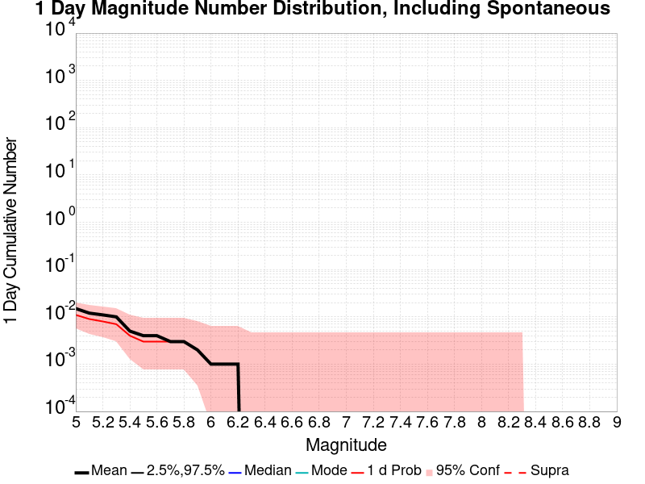
| Mag | Mean | 2.5 %ile | 97.5 %ile | Median | Mode | 1 d Probability | 1 d Prob 95% Conf | 1 d Supra-Seis Prob |
|---|---|---|---|---|---|---|---|---|
| M≥5 | 0.015 | 0.000 | 0.000 | 0.000 | 0.000 | 0.011 (1.10%) | [0.58% 2.02%] | 0.000 (0.00%) |
| M≥5.1 | 0.012 | 0.000 | 0.000 | 0.000 | 0.000 | 9.00E-3 (0.90%) | [0.44% 1.77%] | 0.000 (0.00%) |
| M≥5.2 | 0.011 | 0.000 | 0.000 | 0.000 | 0.000 | 8.00E-3 (0.80%) | [0.37% 1.64%] | 0.000 (0.00%) |
| M≥5.3 | 0.010 | 0.000 | 0.000 | 0.000 | 0.000 | 7.00E-3 (0.70%) | [0.31% 1.50%] | 0.000 (0.00%) |
| M≥5.4 | 5.00E-3 | 0.000 | 0.000 | 0.000 | 0.000 | 4.00E-3 (0.40%) | [0.13% 1.10%] | 0.000 (0.00%) |
| M≥5.5 | 4.00E-3 | 0.000 | 0.000 | 0.000 | 0.000 | 3.00E-3 (0.30%) | [0.08% 0.95%] | 0.000 (0.00%) |
| M≥5.6 | 4.00E-3 | 0.000 | 0.000 | 0.000 | 0.000 | 3.00E-3 (0.30%) | [0.08% 0.95%] | 0.000 (0.00%) |
| M≥5.7 | 3.00E-3 | 0.000 | 0.000 | 0.000 | 0.000 | 3.00E-3 (0.30%) | [0.08% 0.95%] | 0.000 (0.00%) |
| M≥5.8 | 3.00E-3 | 0.000 | 0.000 | 0.000 | 0.000 | 3.00E-3 (0.30%) | [0.08% 0.95%] | 0.000 (0.00%) |
| M≥5.9 | 2.00E-3 | 0.000 | 0.000 | 0.000 | 0.000 | 2.00E-3 (0.20%) | [0.03% 0.80%] | 0.000 (0.00%) |
| M≥6 | 1.00E-3 | 0.000 | 0.000 | 0.000 | 0.000 | 1.00E-3 (0.10%) | [0.01% 0.65%] | 0.000 (0.00%) |
| M≥6.1 | 1.00E-3 | 0.000 | 0.000 | 0.000 | 0.000 | 1.00E-3 (0.10%) | [0.01% 0.65%] | 0.000 (0.00%) |
| M≥6.2 | 1.00E-3 | 0.000 | 0.000 | 0.000 | 0.000 | 1.00E-3 (0.10%) | [0.01% 0.65%] | 0.000 (0.00%) |
| M≥6.3 | 0.000 | 0.000 | 0.000 | 0.000 | 0.000 | 0.000 (0.00%) | [0.00% 0.48%] | 0.000 (0.00%) |
| M≥6.4 | 0.000 | 0.000 | 0.000 | 0.000 | 0.000 | 0.000 (0.00%) | [0.00% 0.48%] | 0.000 (0.00%) |
| M≥6.5 | 0.000 | 0.000 | 0.000 | 0.000 | 0.000 | 0.000 (0.00%) | [0.00% 0.48%] | 0.000 (0.00%) |
| M≥6.6 | 0.000 | 0.000 | 0.000 | 0.000 | 0.000 | 0.000 (0.00%) | [0.00% 0.48%] | 0.000 (0.00%) |
| M≥6.7 | 0.000 | 0.000 | 0.000 | 0.000 | 0.000 | 0.000 (0.00%) | [0.00% 0.48%] | 0.000 (0.00%) |
| M≥6.8 | 0.000 | 0.000 | 0.000 | 0.000 | 0.000 | 0.000 (0.00%) | [0.00% 0.48%] | 0.000 (0.00%) |
| M≥6.9 | 0.000 | 0.000 | 0.000 | 0.000 | 0.000 | 0.000 (0.00%) | [0.00% 0.48%] | 0.000 (0.00%) |
| M≥7 | 0.000 | 0.000 | 0.000 | 0.000 | 0.000 | 0.000 (0.00%) | [0.00% 0.48%] | 0.000 (0.00%) |
| M≥7.1 | 0.000 | 0.000 | 0.000 | 0.000 | 0.000 | 0.000 (0.00%) | [0.00% 0.48%] | 0.000 (0.00%) |
| M≥7.2 | 0.000 | 0.000 | 0.000 | 0.000 | 0.000 | 0.000 (0.00%) | [0.00% 0.48%] | 0.000 (0.00%) |
| M≥7.3 | 0.000 | 0.000 | 0.000 | 0.000 | 0.000 | 0.000 (0.00%) | [0.00% 0.48%] | 0.000 (0.00%) |
| M≥7.4 | 0.000 | 0.000 | 0.000 | 0.000 | 0.000 | 0.000 (0.00%) | [0.00% 0.48%] | 0.000 (0.00%) |
| M≥7.5 | 0.000 | 0.000 | 0.000 | 0.000 | 0.000 | 0.000 (0.00%) | [0.00% 0.48%] | 0.000 (0.00%) |
| M≥7.6 | 0.000 | 0.000 | 0.000 | 0.000 | 0.000 | 0.000 (0.00%) | [0.00% 0.48%] | 0.000 (0.00%) |
| M≥7.7 | 0.000 | 0.000 | 0.000 | 0.000 | 0.000 | 0.000 (0.00%) | [0.00% 0.48%] | 0.000 (0.00%) |
| M≥7.8 | 0.000 | 0.000 | 0.000 | 0.000 | 0.000 | 0.000 (0.00%) | [0.00% 0.48%] | 0.000 (0.00%) |
| M≥7.9 | 0.000 | 0.000 | 0.000 | 0.000 | 0.000 | 0.000 (0.00%) | [0.00% 0.48%] | 0.000 (0.00%) |
| M≥8 | 0.000 | 0.000 | 0.000 | 0.000 | 0.000 | 0.000 (0.00%) | [0.00% 0.48%] | 0.000 (0.00%) |
| M≥8.1 | 0.000 | 0.000 | 0.000 | 0.000 | 0.000 | 0.000 (0.00%) | [0.00% 0.48%] | 0.000 (0.00%) |
| M≥8.2 | 0.000 | 0.000 | 0.000 | 0.000 | 0.000 | 0.000 (0.00%) | [0.00% 0.48%] | 0.000 (0.00%) |
| M≥8.3 | 0.000 | 0.000 | 0.000 | 0.000 | 0.000 | 0.000 (0.00%) | [0.00% 0.48%] | 0.000 (0.00%) |
| M≥8.4 | 0.000 | 0.000 | 0.000 | 0.000 | 0.000 | 0.000 (0.00%) | [0.00% 0.48%] | 0.000 (0.00%) |
| M≥8.5 | 0.000 | 0.000 | 0.000 | 0.000 | 0.000 | 0.000 (0.00%) | [0.00% 0.48%] | 0.000 (0.00%) |
| M≥8.6 | 0.000 | 0.000 | 0.000 | 0.000 | 0.000 | 0.000 (0.00%) | [0.00% 0.48%] | 0.000 (0.00%) |
| M≥8.7 | 0.000 | 0.000 | 0.000 | 0.000 | 0.000 | 0.000 (0.00%) | [0.00% 0.48%] | 0.000 (0.00%) |
| M≥8.8 | 0.000 | 0.000 | 0.000 | 0.000 | 0.000 | 0.000 (0.00%) | [0.00% 0.48%] | 0.000 (0.00%) |
| M≥8.9 | 0.000 | 0.000 | 0.000 | 0.000 | 0.000 | 0.000 (0.00%) | [0.00% 0.48%] | 0.000 (0.00%) |
| M≥9 | 0.000 | 0.000 | 0.000 | 0.000 | 0.000 | 0.000 (0.00%) | [0.00% 0.48%] | 0.000 (0.00%) |
Note: This section only includes triggered events, spontaneous were calculated but filtered out here
Legend
| Mag | Mean | 2.5 %ile | 97.5 %ile | Median | Mode | 1 d Probability | 1 d Prob 95% Conf | 1 d Supra-Seis Prob | Primary Aftershocks Mean |
|---|---|---|---|---|---|---|---|---|---|
| M≥5 | 7.00E-3 | 0.000 | 0.000 | 0.000 | 0.000 | 3.00E-3 (0.30%) | [0.08% 0.95%] | 0.000 (0.00%) | 3.00E-3 |
| M≥5.1 | 6.00E-3 | 0.000 | 0.000 | 0.000 | 0.000 | 3.00E-3 (0.30%) | [0.08% 0.95%] | 0.000 (0.00%) | 3.00E-3 |
| M≥5.2 | 6.00E-3 | 0.000 | 0.000 | 0.000 | 0.000 | 3.00E-3 (0.30%) | [0.08% 0.95%] | 0.000 (0.00%) | 3.00E-3 |
| M≥5.3 | 6.00E-3 | 0.000 | 0.000 | 0.000 | 0.000 | 3.00E-3 (0.30%) | [0.08% 0.95%] | 0.000 (0.00%) | 3.00E-3 |
| M≥5.4 | 4.00E-3 | 0.000 | 0.000 | 0.000 | 0.000 | 3.00E-3 (0.30%) | [0.08% 0.95%] | 0.000 (0.00%) | 2.00E-3 |
| M≥5.5 | 3.00E-3 | 0.000 | 0.000 | 0.000 | 0.000 | 2.00E-3 (0.20%) | [0.03% 0.80%] | 0.000 (0.00%) | 2.00E-3 |
| M≥5.6 | 3.00E-3 | 0.000 | 0.000 | 0.000 | 0.000 | 2.00E-3 (0.20%) | [0.03% 0.80%] | 0.000 (0.00%) | 2.00E-3 |
| M≥5.7 | 2.00E-3 | 0.000 | 0.000 | 0.000 | 0.000 | 2.00E-3 (0.20%) | [0.03% 0.80%] | 0.000 (0.00%) | 1.00E-3 |
| M≥5.8 | 2.00E-3 | 0.000 | 0.000 | 0.000 | 0.000 | 2.00E-3 (0.20%) | [0.03% 0.80%] | 0.000 (0.00%) | 1.00E-3 |
| M≥5.9 | 1.00E-3 | 0.000 | 0.000 | 0.000 | 0.000 | 1.00E-3 (0.10%) | [0.01% 0.65%] | 0.000 (0.00%) | 0.000 |
| M≥6 | 1.00E-3 | 0.000 | 0.000 | 0.000 | 0.000 | 1.00E-3 (0.10%) | [0.01% 0.65%] | 0.000 (0.00%) | 0.000 |
| M≥6.1 | 1.00E-3 | 0.000 | 0.000 | 0.000 | 0.000 | 1.00E-3 (0.10%) | [0.01% 0.65%] | 0.000 (0.00%) | 0.000 |
| M≥6.2 | 1.00E-3 | 0.000 | 0.000 | 0.000 | 0.000 | 1.00E-3 (0.10%) | [0.01% 0.65%] | 0.000 (0.00%) | 0.000 |
| M≥6.3 | 0.000 | 0.000 | 0.000 | 0.000 | 0.000 | 0.000 (0.00%) | [0.00% 0.48%] | 0.000 (0.00%) | 0.000 |
| M≥6.4 | 0.000 | 0.000 | 0.000 | 0.000 | 0.000 | 0.000 (0.00%) | [0.00% 0.48%] | 0.000 (0.00%) | 0.000 |
| M≥6.5 | 0.000 | 0.000 | 0.000 | 0.000 | 0.000 | 0.000 (0.00%) | [0.00% 0.48%] | 0.000 (0.00%) | 0.000 |
| M≥6.6 | 0.000 | 0.000 | 0.000 | 0.000 | 0.000 | 0.000 (0.00%) | [0.00% 0.48%] | 0.000 (0.00%) | 0.000 |
| M≥6.7 | 0.000 | 0.000 | 0.000 | 0.000 | 0.000 | 0.000 (0.00%) | [0.00% 0.48%] | 0.000 (0.00%) | 0.000 |
| M≥6.8 | 0.000 | 0.000 | 0.000 | 0.000 | 0.000 | 0.000 (0.00%) | [0.00% 0.48%] | 0.000 (0.00%) | 0.000 |
| M≥6.9 | 0.000 | 0.000 | 0.000 | 0.000 | 0.000 | 0.000 (0.00%) | [0.00% 0.48%] | 0.000 (0.00%) | 0.000 |
| M≥7 | 0.000 | 0.000 | 0.000 | 0.000 | 0.000 | 0.000 (0.00%) | [0.00% 0.48%] | 0.000 (0.00%) | 0.000 |
| M≥7.1 | 0.000 | 0.000 | 0.000 | 0.000 | 0.000 | 0.000 (0.00%) | [0.00% 0.48%] | 0.000 (0.00%) | 0.000 |
| M≥7.2 | 0.000 | 0.000 | 0.000 | 0.000 | 0.000 | 0.000 (0.00%) | [0.00% 0.48%] | 0.000 (0.00%) | 0.000 |
| M≥7.3 | 0.000 | 0.000 | 0.000 | 0.000 | 0.000 | 0.000 (0.00%) | [0.00% 0.48%] | 0.000 (0.00%) | 0.000 |
| M≥7.4 | 0.000 | 0.000 | 0.000 | 0.000 | 0.000 | 0.000 (0.00%) | [0.00% 0.48%] | 0.000 (0.00%) | 0.000 |
| M≥7.5 | 0.000 | 0.000 | 0.000 | 0.000 | 0.000 | 0.000 (0.00%) | [0.00% 0.48%] | 0.000 (0.00%) | 0.000 |
| M≥7.6 | 0.000 | 0.000 | 0.000 | 0.000 | 0.000 | 0.000 (0.00%) | [0.00% 0.48%] | 0.000 (0.00%) | 0.000 |
| M≥7.7 | 0.000 | 0.000 | 0.000 | 0.000 | 0.000 | 0.000 (0.00%) | [0.00% 0.48%] | 0.000 (0.00%) | 0.000 |
| M≥7.8 | 0.000 | 0.000 | 0.000 | 0.000 | 0.000 | 0.000 (0.00%) | [0.00% 0.48%] | 0.000 (0.00%) | 0.000 |
| M≥7.9 | 0.000 | 0.000 | 0.000 | 0.000 | 0.000 | 0.000 (0.00%) | [0.00% 0.48%] | 0.000 (0.00%) | 0.000 |
| M≥8 | 0.000 | 0.000 | 0.000 | 0.000 | 0.000 | 0.000 (0.00%) | [0.00% 0.48%] | 0.000 (0.00%) | 0.000 |
| M≥8.1 | 0.000 | 0.000 | 0.000 | 0.000 | 0.000 | 0.000 (0.00%) | [0.00% 0.48%] | 0.000 (0.00%) | 0.000 |
| M≥8.2 | 0.000 | 0.000 | 0.000 | 0.000 | 0.000 | 0.000 (0.00%) | [0.00% 0.48%] | 0.000 (0.00%) | 0.000 |
| M≥8.3 | 0.000 | 0.000 | 0.000 | 0.000 | 0.000 | 0.000 (0.00%) | [0.00% 0.48%] | 0.000 (0.00%) | 0.000 |
| M≥8.4 | 0.000 | 0.000 | 0.000 | 0.000 | 0.000 | 0.000 (0.00%) | [0.00% 0.48%] | 0.000 (0.00%) | 0.000 |
| M≥8.5 | 0.000 | 0.000 | 0.000 | 0.000 | 0.000 | 0.000 (0.00%) | [0.00% 0.48%] | 0.000 (0.00%) | 0.000 |
| M≥8.6 | 0.000 | 0.000 | 0.000 | 0.000 | 0.000 | 0.000 (0.00%) | [0.00% 0.48%] | 0.000 (0.00%) | 0.000 |
| M≥8.7 | 0.000 | 0.000 | 0.000 | 0.000 | 0.000 | 0.000 (0.00%) | [0.00% 0.48%] | 0.000 (0.00%) | 0.000 |
| M≥8.8 | 0.000 | 0.000 | 0.000 | 0.000 | 0.000 | 0.000 (0.00%) | [0.00% 0.48%] | 0.000 (0.00%) | 0.000 |
| M≥8.9 | 0.000 | 0.000 | 0.000 | 0.000 | 0.000 | 0.000 (0.00%) | [0.00% 0.48%] | 0.000 (0.00%) | 0.000 |
| M≥9 | 0.000 | 0.000 | 0.000 | 0.000 | 0.000 | 0.000 (0.00%) | [0.00% 0.48%] | 0.000 (0.00%) | 0.000 |
Note: This section includes both spontaneous and triggered events
Legend
| Mag | Mean | 2.5 %ile | 97.5 %ile | Median | Mode | 1 hr Probability | 1 hr Prob 95% Conf | 1 hr Supra-Seis Prob |
|---|---|---|---|---|---|---|---|---|
| M≥5 | 0.000 | 0.000 | 0.000 | 0.000 | 0.000 | 0.000 (0.00%) | [0.00% 0.48%] | 0.000 (0.00%) |
| M≥5.1 | 0.000 | 0.000 | 0.000 | 0.000 | 0.000 | 0.000 (0.00%) | [0.00% 0.48%] | 0.000 (0.00%) |
| M≥5.2 | 0.000 | 0.000 | 0.000 | 0.000 | 0.000 | 0.000 (0.00%) | [0.00% 0.48%] | 0.000 (0.00%) |
| M≥5.3 | 0.000 | 0.000 | 0.000 | 0.000 | 0.000 | 0.000 (0.00%) | [0.00% 0.48%] | 0.000 (0.00%) |
| M≥5.4 | 0.000 | 0.000 | 0.000 | 0.000 | 0.000 | 0.000 (0.00%) | [0.00% 0.48%] | 0.000 (0.00%) |
| M≥5.5 | 0.000 | 0.000 | 0.000 | 0.000 | 0.000 | 0.000 (0.00%) | [0.00% 0.48%] | 0.000 (0.00%) |
| M≥5.6 | 0.000 | 0.000 | 0.000 | 0.000 | 0.000 | 0.000 (0.00%) | [0.00% 0.48%] | 0.000 (0.00%) |
| M≥5.7 | 0.000 | 0.000 | 0.000 | 0.000 | 0.000 | 0.000 (0.00%) | [0.00% 0.48%] | 0.000 (0.00%) |
| M≥5.8 | 0.000 | 0.000 | 0.000 | 0.000 | 0.000 | 0.000 (0.00%) | [0.00% 0.48%] | 0.000 (0.00%) |
| M≥5.9 | 0.000 | 0.000 | 0.000 | 0.000 | 0.000 | 0.000 (0.00%) | [0.00% 0.48%] | 0.000 (0.00%) |
| M≥6 | 0.000 | 0.000 | 0.000 | 0.000 | 0.000 | 0.000 (0.00%) | [0.00% 0.48%] | 0.000 (0.00%) |
| M≥6.1 | 0.000 | 0.000 | 0.000 | 0.000 | 0.000 | 0.000 (0.00%) | [0.00% 0.48%] | 0.000 (0.00%) |
| M≥6.2 | 0.000 | 0.000 | 0.000 | 0.000 | 0.000 | 0.000 (0.00%) | [0.00% 0.48%] | 0.000 (0.00%) |
| M≥6.3 | 0.000 | 0.000 | 0.000 | 0.000 | 0.000 | 0.000 (0.00%) | [0.00% 0.48%] | 0.000 (0.00%) |
| M≥6.4 | 0.000 | 0.000 | 0.000 | 0.000 | 0.000 | 0.000 (0.00%) | [0.00% 0.48%] | 0.000 (0.00%) |
| M≥6.5 | 0.000 | 0.000 | 0.000 | 0.000 | 0.000 | 0.000 (0.00%) | [0.00% 0.48%] | 0.000 (0.00%) |
| M≥6.6 | 0.000 | 0.000 | 0.000 | 0.000 | 0.000 | 0.000 (0.00%) | [0.00% 0.48%] | 0.000 (0.00%) |
| M≥6.7 | 0.000 | 0.000 | 0.000 | 0.000 | 0.000 | 0.000 (0.00%) | [0.00% 0.48%] | 0.000 (0.00%) |
| M≥6.8 | 0.000 | 0.000 | 0.000 | 0.000 | 0.000 | 0.000 (0.00%) | [0.00% 0.48%] | 0.000 (0.00%) |
| M≥6.9 | 0.000 | 0.000 | 0.000 | 0.000 | 0.000 | 0.000 (0.00%) | [0.00% 0.48%] | 0.000 (0.00%) |
| M≥7 | 0.000 | 0.000 | 0.000 | 0.000 | 0.000 | 0.000 (0.00%) | [0.00% 0.48%] | 0.000 (0.00%) |
| M≥7.1 | 0.000 | 0.000 | 0.000 | 0.000 | 0.000 | 0.000 (0.00%) | [0.00% 0.48%] | 0.000 (0.00%) |
| M≥7.2 | 0.000 | 0.000 | 0.000 | 0.000 | 0.000 | 0.000 (0.00%) | [0.00% 0.48%] | 0.000 (0.00%) |
| M≥7.3 | 0.000 | 0.000 | 0.000 | 0.000 | 0.000 | 0.000 (0.00%) | [0.00% 0.48%] | 0.000 (0.00%) |
| M≥7.4 | 0.000 | 0.000 | 0.000 | 0.000 | 0.000 | 0.000 (0.00%) | [0.00% 0.48%] | 0.000 (0.00%) |
| M≥7.5 | 0.000 | 0.000 | 0.000 | 0.000 | 0.000 | 0.000 (0.00%) | [0.00% 0.48%] | 0.000 (0.00%) |
| M≥7.6 | 0.000 | 0.000 | 0.000 | 0.000 | 0.000 | 0.000 (0.00%) | [0.00% 0.48%] | 0.000 (0.00%) |
| M≥7.7 | 0.000 | 0.000 | 0.000 | 0.000 | 0.000 | 0.000 (0.00%) | [0.00% 0.48%] | 0.000 (0.00%) |
| M≥7.8 | 0.000 | 0.000 | 0.000 | 0.000 | 0.000 | 0.000 (0.00%) | [0.00% 0.48%] | 0.000 (0.00%) |
| M≥7.9 | 0.000 | 0.000 | 0.000 | 0.000 | 0.000 | 0.000 (0.00%) | [0.00% 0.48%] | 0.000 (0.00%) |
| M≥8 | 0.000 | 0.000 | 0.000 | 0.000 | 0.000 | 0.000 (0.00%) | [0.00% 0.48%] | 0.000 (0.00%) |
| M≥8.1 | 0.000 | 0.000 | 0.000 | 0.000 | 0.000 | 0.000 (0.00%) | [0.00% 0.48%] | 0.000 (0.00%) |
| M≥8.2 | 0.000 | 0.000 | 0.000 | 0.000 | 0.000 | 0.000 (0.00%) | [0.00% 0.48%] | 0.000 (0.00%) |
| M≥8.3 | 0.000 | 0.000 | 0.000 | 0.000 | 0.000 | 0.000 (0.00%) | [0.00% 0.48%] | 0.000 (0.00%) |
| M≥8.4 | 0.000 | 0.000 | 0.000 | 0.000 | 0.000 | 0.000 (0.00%) | [0.00% 0.48%] | 0.000 (0.00%) |
| M≥8.5 | 0.000 | 0.000 | 0.000 | 0.000 | 0.000 | 0.000 (0.00%) | [0.00% 0.48%] | 0.000 (0.00%) |
| M≥8.6 | 0.000 | 0.000 | 0.000 | 0.000 | 0.000 | 0.000 (0.00%) | [0.00% 0.48%] | 0.000 (0.00%) |
| M≥8.7 | 0.000 | 0.000 | 0.000 | 0.000 | 0.000 | 0.000 (0.00%) | [0.00% 0.48%] | 0.000 (0.00%) |
| M≥8.8 | 0.000 | 0.000 | 0.000 | 0.000 | 0.000 | 0.000 (0.00%) | [0.00% 0.48%] | 0.000 (0.00%) |
| M≥8.9 | 0.000 | 0.000 | 0.000 | 0.000 | 0.000 | 0.000 (0.00%) | [0.00% 0.48%] | 0.000 (0.00%) |
| M≥9 | 0.000 | 0.000 | 0.000 | 0.000 | 0.000 | 0.000 (0.00%) | [0.00% 0.48%] | 0.000 (0.00%) |
Note: This section only includes triggered events, spontaneous were calculated but filtered out here
Legend
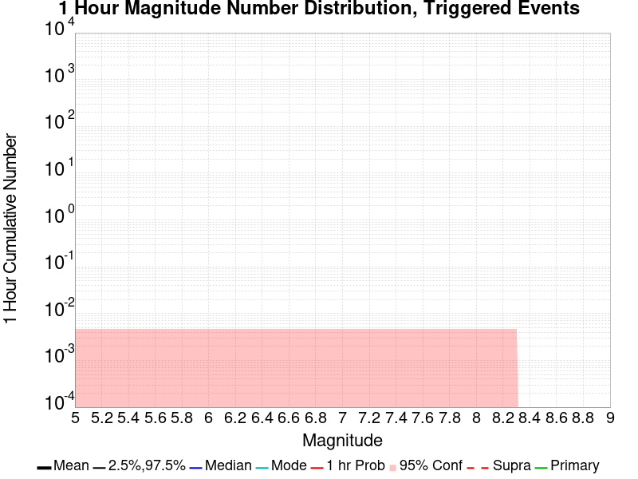
| Mag | Mean | 2.5 %ile | 97.5 %ile | Median | Mode | 1 hr Probability | 1 hr Prob 95% Conf | 1 hr Supra-Seis Prob | Primary Aftershocks Mean |
|---|---|---|---|---|---|---|---|---|---|
| M≥5 | 0.000 | 0.000 | 0.000 | 0.000 | 0.000 | 0.000 (0.00%) | [0.00% 0.48%] | 0.000 (0.00%) | 0.000 |
| M≥5.1 | 0.000 | 0.000 | 0.000 | 0.000 | 0.000 | 0.000 (0.00%) | [0.00% 0.48%] | 0.000 (0.00%) | 0.000 |
| M≥5.2 | 0.000 | 0.000 | 0.000 | 0.000 | 0.000 | 0.000 (0.00%) | [0.00% 0.48%] | 0.000 (0.00%) | 0.000 |
| M≥5.3 | 0.000 | 0.000 | 0.000 | 0.000 | 0.000 | 0.000 (0.00%) | [0.00% 0.48%] | 0.000 (0.00%) | 0.000 |
| M≥5.4 | 0.000 | 0.000 | 0.000 | 0.000 | 0.000 | 0.000 (0.00%) | [0.00% 0.48%] | 0.000 (0.00%) | 0.000 |
| M≥5.5 | 0.000 | 0.000 | 0.000 | 0.000 | 0.000 | 0.000 (0.00%) | [0.00% 0.48%] | 0.000 (0.00%) | 0.000 |
| M≥5.6 | 0.000 | 0.000 | 0.000 | 0.000 | 0.000 | 0.000 (0.00%) | [0.00% 0.48%] | 0.000 (0.00%) | 0.000 |
| M≥5.7 | 0.000 | 0.000 | 0.000 | 0.000 | 0.000 | 0.000 (0.00%) | [0.00% 0.48%] | 0.000 (0.00%) | 0.000 |
| M≥5.8 | 0.000 | 0.000 | 0.000 | 0.000 | 0.000 | 0.000 (0.00%) | [0.00% 0.48%] | 0.000 (0.00%) | 0.000 |
| M≥5.9 | 0.000 | 0.000 | 0.000 | 0.000 | 0.000 | 0.000 (0.00%) | [0.00% 0.48%] | 0.000 (0.00%) | 0.000 |
| M≥6 | 0.000 | 0.000 | 0.000 | 0.000 | 0.000 | 0.000 (0.00%) | [0.00% 0.48%] | 0.000 (0.00%) | 0.000 |
| M≥6.1 | 0.000 | 0.000 | 0.000 | 0.000 | 0.000 | 0.000 (0.00%) | [0.00% 0.48%] | 0.000 (0.00%) | 0.000 |
| M≥6.2 | 0.000 | 0.000 | 0.000 | 0.000 | 0.000 | 0.000 (0.00%) | [0.00% 0.48%] | 0.000 (0.00%) | 0.000 |
| M≥6.3 | 0.000 | 0.000 | 0.000 | 0.000 | 0.000 | 0.000 (0.00%) | [0.00% 0.48%] | 0.000 (0.00%) | 0.000 |
| M≥6.4 | 0.000 | 0.000 | 0.000 | 0.000 | 0.000 | 0.000 (0.00%) | [0.00% 0.48%] | 0.000 (0.00%) | 0.000 |
| M≥6.5 | 0.000 | 0.000 | 0.000 | 0.000 | 0.000 | 0.000 (0.00%) | [0.00% 0.48%] | 0.000 (0.00%) | 0.000 |
| M≥6.6 | 0.000 | 0.000 | 0.000 | 0.000 | 0.000 | 0.000 (0.00%) | [0.00% 0.48%] | 0.000 (0.00%) | 0.000 |
| M≥6.7 | 0.000 | 0.000 | 0.000 | 0.000 | 0.000 | 0.000 (0.00%) | [0.00% 0.48%] | 0.000 (0.00%) | 0.000 |
| M≥6.8 | 0.000 | 0.000 | 0.000 | 0.000 | 0.000 | 0.000 (0.00%) | [0.00% 0.48%] | 0.000 (0.00%) | 0.000 |
| M≥6.9 | 0.000 | 0.000 | 0.000 | 0.000 | 0.000 | 0.000 (0.00%) | [0.00% 0.48%] | 0.000 (0.00%) | 0.000 |
| M≥7 | 0.000 | 0.000 | 0.000 | 0.000 | 0.000 | 0.000 (0.00%) | [0.00% 0.48%] | 0.000 (0.00%) | 0.000 |
| M≥7.1 | 0.000 | 0.000 | 0.000 | 0.000 | 0.000 | 0.000 (0.00%) | [0.00% 0.48%] | 0.000 (0.00%) | 0.000 |
| M≥7.2 | 0.000 | 0.000 | 0.000 | 0.000 | 0.000 | 0.000 (0.00%) | [0.00% 0.48%] | 0.000 (0.00%) | 0.000 |
| M≥7.3 | 0.000 | 0.000 | 0.000 | 0.000 | 0.000 | 0.000 (0.00%) | [0.00% 0.48%] | 0.000 (0.00%) | 0.000 |
| M≥7.4 | 0.000 | 0.000 | 0.000 | 0.000 | 0.000 | 0.000 (0.00%) | [0.00% 0.48%] | 0.000 (0.00%) | 0.000 |
| M≥7.5 | 0.000 | 0.000 | 0.000 | 0.000 | 0.000 | 0.000 (0.00%) | [0.00% 0.48%] | 0.000 (0.00%) | 0.000 |
| M≥7.6 | 0.000 | 0.000 | 0.000 | 0.000 | 0.000 | 0.000 (0.00%) | [0.00% 0.48%] | 0.000 (0.00%) | 0.000 |
| M≥7.7 | 0.000 | 0.000 | 0.000 | 0.000 | 0.000 | 0.000 (0.00%) | [0.00% 0.48%] | 0.000 (0.00%) | 0.000 |
| M≥7.8 | 0.000 | 0.000 | 0.000 | 0.000 | 0.000 | 0.000 (0.00%) | [0.00% 0.48%] | 0.000 (0.00%) | 0.000 |
| M≥7.9 | 0.000 | 0.000 | 0.000 | 0.000 | 0.000 | 0.000 (0.00%) | [0.00% 0.48%] | 0.000 (0.00%) | 0.000 |
| M≥8 | 0.000 | 0.000 | 0.000 | 0.000 | 0.000 | 0.000 (0.00%) | [0.00% 0.48%] | 0.000 (0.00%) | 0.000 |
| M≥8.1 | 0.000 | 0.000 | 0.000 | 0.000 | 0.000 | 0.000 (0.00%) | [0.00% 0.48%] | 0.000 (0.00%) | 0.000 |
| M≥8.2 | 0.000 | 0.000 | 0.000 | 0.000 | 0.000 | 0.000 (0.00%) | [0.00% 0.48%] | 0.000 (0.00%) | 0.000 |
| M≥8.3 | 0.000 | 0.000 | 0.000 | 0.000 | 0.000 | 0.000 (0.00%) | [0.00% 0.48%] | 0.000 (0.00%) | 0.000 |
| M≥8.4 | 0.000 | 0.000 | 0.000 | 0.000 | 0.000 | 0.000 (0.00%) | [0.00% 0.48%] | 0.000 (0.00%) | 0.000 |
| M≥8.5 | 0.000 | 0.000 | 0.000 | 0.000 | 0.000 | 0.000 (0.00%) | [0.00% 0.48%] | 0.000 (0.00%) | 0.000 |
| M≥8.6 | 0.000 | 0.000 | 0.000 | 0.000 | 0.000 | 0.000 (0.00%) | [0.00% 0.48%] | 0.000 (0.00%) | 0.000 |
| M≥8.7 | 0.000 | 0.000 | 0.000 | 0.000 | 0.000 | 0.000 (0.00%) | [0.00% 0.48%] | 0.000 (0.00%) | 0.000 |
| M≥8.8 | 0.000 | 0.000 | 0.000 | 0.000 | 0.000 | 0.000 (0.00%) | [0.00% 0.48%] | 0.000 (0.00%) | 0.000 |
| M≥8.9 | 0.000 | 0.000 | 0.000 | 0.000 | 0.000 | 0.000 (0.00%) | [0.00% 0.48%] | 0.000 (0.00%) | 0.000 |
| M≥9 | 0.000 | 0.000 | 0.000 | 0.000 | 0.000 | 0.000 (0.00%) | [0.00% 0.48%] | 0.000 (0.00%) | 0.000 |
These plots show how the probability of ruptures of various magnitudes within 100km of any scenario rupture changes over time
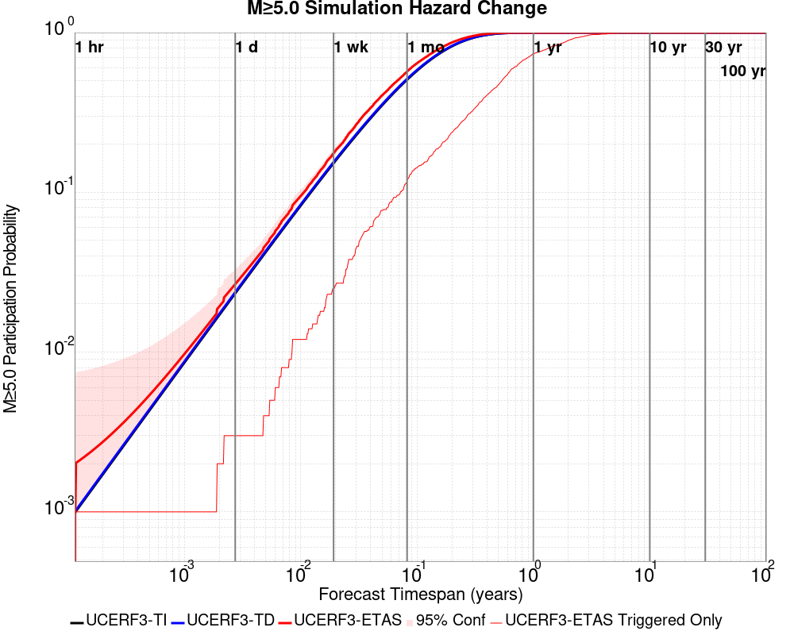
| Forecast Duration | UCERF3-ETAS [95% Conf] | UCERF3-ETAS Triggered Only | UCERF3-TD | UCERF3-ETAS/TD Gain | UCERF3-TI |
|---|---|---|---|---|---|
| 1 Hour | 9.99E-4 [9.99E-4 - 5.76E-3] | 0.000 | 9.99E-4 | 1 | 9.82E-4 |
| 1 Day | 0.027 [0.024 - 0.033] | 3.00E-3 | 0.024 | 1.12 | 0.023 |
| 1 Week | 0.176 [0.169 - 0.186] | 0.025 | 0.155 | 1.14 | 0.152 |
| 1 Month | 0.571 [0.562 - 0.582] | 0.119 | 0.513 | 1.11 | 0.507 |
| 1 Year | 1.000 [1.000 - 1.000] | 0.738 | 1.000 | 1 | 1.000 |
| 10 Years | 1.000 [1.000 - 1.000] | 1.000 | 1.000 | 1 | 1.000 |
| 30 Years | 1.000 [1.000 - 1.000] | 1.000 | 1.000 | 1 | 1.000 |
| 100 Years | 1.000 [1.000 - 1.000] | 1.000 | 1.000 | 1 | 1.000 |

| Forecast Duration | UCERF3-ETAS [95% Conf] | UCERF3-ETAS Triggered Only | UCERF3-TD | UCERF3-ETAS/TD Gain | UCERF3-TI |
|---|---|---|---|---|---|
| 1 Hour | 1.13E-4 [1.13E-4 - 4.88E-3] | 0.000 | 1.13E-4 | 1 | 9.74E-5 |
| 1 Day | 3.70E-3 [2.76E-3 - 9.16E-3] | 1.00E-3 | 2.71E-3 | 1.37 | 2.33E-3 |
| 1 Week | 0.022 [0.020 - 0.028] | 3.00E-3 | 0.019 | 1.16 | 0.016 |
| 1 Month | 0.092 [0.086 - 0.101] | 0.015 | 0.078 | 1.18 | 0.068 |
| 1 Year | 0.678 [0.671 - 0.687] | 0.135 | 0.628 | 1.08 | 0.574 |
| 10 Years | 1.000 [1.000 - 1.000] | 0.628 | 1.000 | 1 | 1.000 |
| 30 Years | 1.000 [1.000 - 1.000] | 0.890 | 1.000 | 1 | 1.000 |
| 100 Years | 1.000 [1.000 - 1.000] | 0.987 | 1.000 | 1 | 1.000 |

| Forecast Duration | UCERF3-ETAS [95% Conf] | UCERF3-ETAS Triggered Only | UCERF3-TD | UCERF3-ETAS/TD Gain | UCERF3-TI |
|---|---|---|---|---|---|
| 1 Hour | 1.12E-5 [1.12E-5 - 4.78E-3] | 0.000 | 1.12E-5 | 1 | 9.08E-6 |
| 1 Day | 2.68E-4 [2.68E-4 - 5.04E-3] | 0.000 | 2.68E-4 | 1 | 2.18E-4 |
| 1 Week | 1.87E-3 [1.87E-3 - 6.63E-3] | 0.000 | 1.87E-3 | 1 | 1.52E-3 |
| 1 Month | 0.012 [9.27E-3 - 0.019] | 4.00E-3 | 8.00E-3 | 1.5 | 6.52E-3 |
| 1 Year | 0.108 [0.102 - 0.117] | 0.016 | 0.093 | 1.16 | 0.076 |
| 10 Years | 0.661 [0.655 - 0.669] | 0.097 | 0.625 | 1.06 | 0.549 |
| 30 Years | 0.958 [0.957 - 0.960] | 0.216 | 0.947 | 1.01 | 0.908 |
| 100 Years | 1.000 [1.000 - 1.000] | 0.395 | 1.000 | 1 | 1.000 |
| Forecast Duration | UCERF3-ETAS [95% Conf] | UCERF3-ETAS Triggered Only | UCERF3-TD | UCERF3-ETAS/TD Gain | UCERF3-TI |
|---|---|---|---|---|---|
| 1 Hour | 2.61E-7 [2.61E-7 - 4.77E-3] | 0.000 | 2.61E-7 | 1 | 2.20E-7 |
| 1 Day | 6.27E-6 [6.27E-6 - 4.78E-3] | 0.000 | 6.27E-6 | 1 | 5.27E-6 |
| 1 Week | 4.39E-5 [4.39E-5 - 4.81E-3] | 0.000 | 4.39E-5 | 1 | 3.69E-5 |
| 1 Month | 1.88E-4 [1.88E-4 - 4.96E-3] | 0.000 | 1.88E-4 | 1 | 1.58E-4 |
| 1 Year | 2.29E-3 [2.29E-3 - 7.05E-3] | 0.000 | 2.29E-3 | 1 | 1.92E-3 |
| 10 Years | 0.025 [0.024 - 0.030] | 1.00E-3 | 0.024 | 1.04 | 0.019 |
| 30 Years | 0.085 [0.081 - 0.092] | 7.00E-3 | 0.078 | 1.08 | 0.056 |
| 100 Years | 0.284 [0.279 - 0.291] | 0.016 | 0.272 | 1.04 | 0.175 |
| Min Mag | 1 yr Complete Catalog (including spontaneous) | 1 yr Triggered Ruptures (no spontaneous) | 500 yr Complete Catalog (including spontaneous) | 500 yr Triggered Ruptures (no spontaneous) | 500 yr Triggered Ruptures (primary aftershocks only) |
|---|---|---|---|---|---|
| All Supra. Seis. |  | ||||
| M≥6.5 | |||||
| M≥7 | |||||
| M≥7.5 |  | 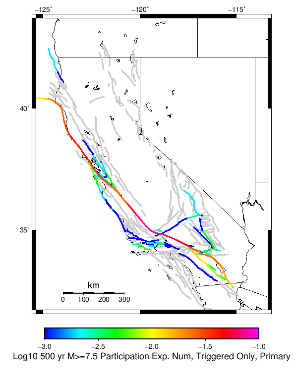 | |||
| M≥8 | 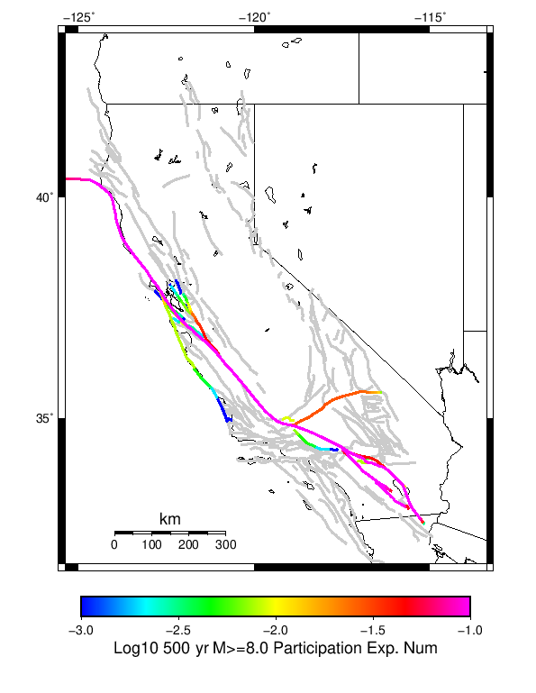 | 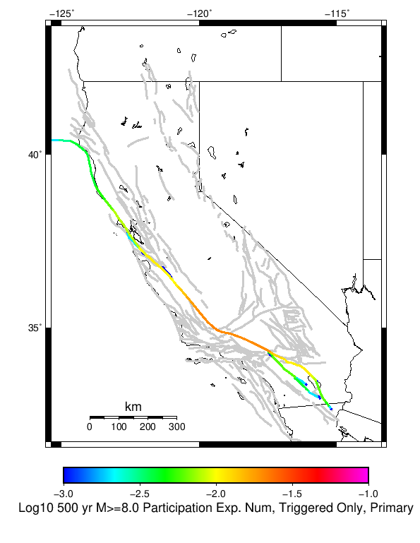 |
First 10 of 313 with matching ruptures shown
| Parent Name | Total 500 Year Mean Count | Total 1 Day Prob | Total 1 Day 95% Conf | Total 1 Week Prob | Total 1 Week 95% Conf | Total 1 Month Prob | Total 1 Month 95% Conf | Total 1 Year Prob | Total 1 Year 95% Conf | Total 500 Year Prob | Total 500 Year 95% Conf | Triggered 500 Year Mean Count | Triggered 1 Day Prob | Triggered 1 Day 95% Conf | Triggered 1 Week Prob | Triggered 1 Week 95% Conf | Triggered 1 Month Prob | Triggered 1 Month 95% Conf | Triggered 1 Year Prob | Triggered 1 Year 95% Conf | Triggered 500 Year Prob | Triggered 500 Year 95% Conf | Triggered 500 Year Primary Mean Count |
|---|---|---|---|---|---|---|---|---|---|---|---|---|---|---|---|---|---|---|---|---|---|---|---|
| San Andreas (Parkfield) | 21.066 | 0.000 (0.00%) | [0.00% 0.48%] | 0.000 (0.00%) | [0.00% 0.48%] | 0.000 (0.00%) | [0.00% 0.48%] | 7.00E-3 (0.70%) | [0.31% 1.50%] | 1.000 (100.00%) | [99.52% 100.00%] | 1.993 | 0.000 (0.00%) | [0.00% 0.48%] | 0.000 (0.00%) | [0.00% 0.48%] | 0.000 (0.00%) | [0.00% 0.48%] | 2.00E-3 (0.20%) | [0.03% 0.80%] | 0.708 (70.80%) | [67.86% 73.58%] | 0.83 |
| San Andreas (Creeping Section) 2011 CFM | 14.172 | 0.000 (0.00%) | [0.00% 0.48%] | 0.000 (0.00%) | [0.00% 0.48%] | 4.00E-3 (0.40%) | [0.13% 1.10%] | 0.031 (3.10%) | [2.15% 4.42%] | 1.000 (100.00%) | [99.52% 100.00%] | 0.526 | 0.000 (0.00%) | [0.00% 0.48%] | 0.000 (0.00%) | [0.00% 0.48%] | 1.00E-3 (0.10%) | [0.01% 0.65%] | 7.00E-3 (0.70%) | [0.31% 1.50%] | 0.335 (33.50%) | [30.59% 36.53%] | 0.222 |
| San Andreas (Mojave S) | 9.253 | 0.000 (0.00%) | [0.00% 0.48%] | 0.000 (0.00%) | [0.00% 0.48%] | 0.000 (0.00%) | [0.00% 0.48%] | 0.011 (1.10%) | [0.58% 2.02%] | 1.000 (100.00%) | [99.52% 100.00%] | 0.838 | 0.000 (0.00%) | [0.00% 0.48%] | 0.000 (0.00%) | [0.00% 0.48%] | 0.000 (0.00%) | [0.00% 0.48%] | 5.00E-3 (0.50%) | [0.18% 1.23%] | 0.364 (36.40%) | [33.43% 39.48%] | 0.339 |
| Mendocino | 8.997 | 0.000 (0.00%) | [0.00% 0.48%] | 1.00E-3 (0.10%) | [0.01% 0.65%] | 1.00E-3 (0.10%) | [0.01% 0.65%] | 0.032 (3.20%) | [2.23% 4.54%] | 1.000 (100.00%) | [99.52% 100.00%] | 0.505 | 0.000 (0.00%) | [0.00% 0.48%] | 1.00E-3 (0.10%) | [0.01% 0.65%] | 1.00E-3 (0.10%) | [0.01% 0.65%] | 8.00E-3 (0.80%) | [0.37% 1.64%] | 0.346 (34.60%) | [31.67% 37.65%] | 0.243 |
| Cerro Prieto | 6.723 | 0.000 (0.00%) | [0.00% 0.48%] | 0.000 (0.00%) | [0.00% 0.48%] | 1.00E-3 (0.10%) | [0.01% 0.65%] | 0.020 (2.00%) | [1.26% 3.13%] | 1.000 (100.00%) | [99.52% 100.00%] | 0.386 | 0.000 (0.00%) | [0.00% 0.48%] | 0.000 (0.00%) | [0.00% 0.48%] | 0.000 (0.00%) | [0.00% 0.48%] | 7.00E-3 (0.70%) | [0.31% 1.50%] | 0.243 (24.30%) | [21.70% 27.11%] | 0.145 |
| Imperial | 5.884 | 0.000 (0.00%) | [0.00% 0.48%] | 1.00E-3 (0.10%) | [0.01% 0.65%] | 1.00E-3 (0.10%) | [0.01% 0.65%] | 0.012 (1.20%) | [0.65% 2.15%] | 1.000 (100.00%) | [99.52% 100.00%] | 0.299 | 0.000 (0.00%) | [0.00% 0.48%] | 1.00E-3 (0.10%) | [0.01% 0.65%] | 1.00E-3 (0.10%) | [0.01% 0.65%] | 2.00E-3 (0.20%) | [0.03% 0.80%] | 0.230 (23.00%) | [20.45% 25.76%] | 0.141 |
| Brawley (Seismic Zone) alt 1 | 5.537 | 0.000 (0.00%) | [0.00% 0.48%] | 1.00E-3 (0.10%) | [0.01% 0.65%] | 1.00E-3 (0.10%) | [0.01% 0.65%] | 0.012 (1.20%) | [0.65% 2.15%] | 1.000 (100.00%) | [99.52% 100.00%] | 0.247 | 0.000 (0.00%) | [0.00% 0.48%] | 1.00E-3 (0.10%) | [0.01% 0.65%] | 1.00E-3 (0.10%) | [0.01% 0.65%] | 1.00E-3 (0.10%) | [0.01% 0.65%] | 0.198 (19.80%) | [17.40% 22.44%] | 0.109 |
| Hayward (So) 2011 CFM | 4.673 | 0.000 (0.00%) | [0.00% 0.48%] | 1.00E-3 (0.10%) | [0.01% 0.65%] | 1.00E-3 (0.10%) | [0.01% 0.65%] | 0.011 (1.10%) | [0.58% 2.02%] | 1.000 (100.00%) | [99.52% 100.00%] | 0.299 | 0.000 (0.00%) | [0.00% 0.48%] | 0.000 (0.00%) | [0.00% 0.48%] | 0.000 (0.00%) | [0.00% 0.48%] | 3.00E-3 (0.30%) | [0.08% 0.95%] | 0.207 (20.70%) | [18.26% 23.37%] | 0.144 |
| San Andreas (Offshore) 2011 CFM | 4.305 | 0.000 (0.00%) | [0.00% 0.48%] | 0.000 (0.00%) | [0.00% 0.48%] | 0.000 (0.00%) | [0.00% 0.48%] | 5.00E-3 (0.50%) | [0.18% 1.23%] | 0.999 (99.90%) | [99.35% 99.99%] | 0.484 | 0.000 (0.00%) | [0.00% 0.48%] | 0.000 (0.00%) | [0.00% 0.48%] | 0.000 (0.00%) | [0.00% 0.48%] | 2.00E-3 (0.20%) | [0.03% 0.80%] | 0.282 (28.20%) | [25.45% 31.12%] | 0.219 |
| Elsinore (Glen Ivy) rev | 3.941 | 0.000 (0.00%) | [0.00% 0.48%] | 0.000 (0.00%) | [0.00% 0.48%] | 2.00E-3 (0.20%) | [0.03% 0.80%] | 8.00E-3 (0.80%) | [0.37% 1.64%] | 0.993 (99.30%) | [98.50% 99.69%] | 0.12 | 0.000 (0.00%) | [0.00% 0.48%] | 0.000 (0.00%) | [0.00% 0.48%] | 0.000 (0.00%) | [0.00% 0.48%] | 1.00E-3 (0.10%) | [0.01% 0.65%] | 0.082 (8.20%) | [6.61% 10.12%] | 0.05 |
First 10 of 305 with matching ruptures shown
| Parent Name | Total 500 Year Mean Count | Total 1 Day Prob | Total 1 Day 95% Conf | Total 1 Week Prob | Total 1 Week 95% Conf | Total 1 Month Prob | Total 1 Month 95% Conf | Total 1 Year Prob | Total 1 Year 95% Conf | Total 500 Year Prob | Total 500 Year 95% Conf | Triggered 500 Year Mean Count | Triggered 1 Day Prob | Triggered 1 Day 95% Conf | Triggered 1 Week Prob | Triggered 1 Week 95% Conf | Triggered 1 Month Prob | Triggered 1 Month 95% Conf | Triggered 1 Year Prob | Triggered 1 Year 95% Conf | Triggered 500 Year Prob | Triggered 500 Year 95% Conf | Triggered 500 Year Primary Mean Count |
|---|---|---|---|---|---|---|---|---|---|---|---|---|---|---|---|---|---|---|---|---|---|---|---|
| Cerro Prieto | 5.772 | 0.000 (0.00%) | [0.00% 0.48%] | 0.000 (0.00%) | [0.00% 0.48%] | 1.00E-3 (0.10%) | [0.01% 0.65%] | 0.018 (1.80%) | [1.10% 2.89%] | 1.000 (100.00%) | [99.52% 100.00%] | 0.333 | 0.000 (0.00%) | [0.00% 0.48%] | 0.000 (0.00%) | [0.00% 0.48%] | 0.000 (0.00%) | [0.00% 0.48%] | 6.00E-3 (0.60%) | [0.24% 1.37%] | 0.222 (22.20%) | [19.69% 24.93%] | 0.13 |
| San Andreas (Creeping Section) 2011 CFM | 5.388 | 0.000 (0.00%) | [0.00% 0.48%] | 0.000 (0.00%) | [0.00% 0.48%] | 3.00E-3 (0.30%) | [0.08% 0.95%] | 0.013 (1.30%) | [0.72% 2.27%] | 0.999 (99.90%) | [99.35% 99.99%] | 0.243 | 0.000 (0.00%) | [0.00% 0.48%] | 0.000 (0.00%) | [0.00% 0.48%] | 1.00E-3 (0.10%) | [0.01% 0.65%] | 3.00E-3 (0.30%) | [0.08% 0.95%] | 0.186 (18.60%) | [16.26% 21.18%] | 0.11 |
| Mendocino | 4.634 | 0.000 (0.00%) | [0.00% 0.48%] | 0.000 (0.00%) | [0.00% 0.48%] | 0.000 (0.00%) | [0.00% 0.48%] | 0.011 (1.10%) | [0.58% 2.02%] | 1.000 (100.00%) | [99.52% 100.00%] | 0.322 | 0.000 (0.00%) | [0.00% 0.48%] | 0.000 (0.00%) | [0.00% 0.48%] | 0.000 (0.00%) | [0.00% 0.48%] | 4.00E-3 (0.40%) | [0.13% 1.10%] | 0.247 (24.70%) | [22.08% 27.52%] | 0.156 |
| Imperial | 4.08 | 0.000 (0.00%) | [0.00% 0.48%] | 0.000 (0.00%) | [0.00% 0.48%] | 0.000 (0.00%) | [0.00% 0.48%] | 0.010 (1.00%) | [0.51% 1.90%] | 1.000 (100.00%) | [99.52% 100.00%] | 0.186 | 0.000 (0.00%) | [0.00% 0.48%] | 0.000 (0.00%) | [0.00% 0.48%] | 0.000 (0.00%) | [0.00% 0.48%] | 0.000 (0.00%) | [0.00% 0.48%] | 0.153 (15.30%) | [13.16% 17.72%] | 0.084 |
| Hayward (So) 2011 CFM | 3.976 | 0.000 (0.00%) | [0.00% 0.48%] | 1.00E-3 (0.10%) | [0.01% 0.65%] | 1.00E-3 (0.10%) | [0.01% 0.65%] | 0.010 (1.00%) | [0.51% 1.90%] | 0.997 (99.70%) | [99.05% 99.92%] | 0.228 | 0.000 (0.00%) | [0.00% 0.48%] | 0.000 (0.00%) | [0.00% 0.48%] | 0.000 (0.00%) | [0.00% 0.48%] | 3.00E-3 (0.30%) | [0.08% 0.95%] | 0.166 (16.60%) | [14.38% 19.09%] | 0.109 |
| Brawley (Seismic Zone) alt 1 | 3.887 | 0.000 (0.00%) | [0.00% 0.48%] | 0.000 (0.00%) | [0.00% 0.48%] | 0.000 (0.00%) | [0.00% 0.48%] | 0.010 (1.00%) | [0.51% 1.90%] | 1.000 (100.00%) | [99.52% 100.00%] | 0.173 | 0.000 (0.00%) | [0.00% 0.48%] | 0.000 (0.00%) | [0.00% 0.48%] | 0.000 (0.00%) | [0.00% 0.48%] | 0.000 (0.00%) | [0.00% 0.48%] | 0.144 (14.40%) | [12.31% 16.77%] | 0.076 |
| San Andreas (Mojave S) | 3.501 | 0.000 (0.00%) | [0.00% 0.48%] | 0.000 (0.00%) | [0.00% 0.48%] | 0.000 (0.00%) | [0.00% 0.48%] | 1.00E-3 (0.10%) | [0.01% 0.65%] | 0.998 (99.80%) | [99.20% 99.97%] | 0.253 | 0.000 (0.00%) | [0.00% 0.48%] | 0.000 (0.00%) | [0.00% 0.48%] | 0.000 (0.00%) | [0.00% 0.48%] | 0.000 (0.00%) | [0.00% 0.48%] | 0.193 (19.30%) | [16.93% 21.91%] | 0.106 |
| San Andreas (Santa Cruz Mts) 2011 CFM | 3.404 | 0.000 (0.00%) | [0.00% 0.48%] | 0.000 (0.00%) | [0.00% 0.48%] | 2.00E-3 (0.20%) | [0.03% 0.80%] | 3.00E-3 (0.30%) | [0.08% 0.95%] | 0.999 (99.90%) | [99.35% 99.99%] | 0.211 | 0.000 (0.00%) | [0.00% 0.48%] | 0.000 (0.00%) | [0.00% 0.48%] | 0.000 (0.00%) | [0.00% 0.48%] | 1.00E-3 (0.10%) | [0.01% 0.65%] | 0.175 (17.50%) | [15.22% 20.03%] | 0.105 |
| San Andreas (San Bernardino N) | 3.373 | 0.000 (0.00%) | [0.00% 0.48%] | 0.000 (0.00%) | [0.00% 0.48%] | 0.000 (0.00%) | [0.00% 0.48%] | 2.00E-3 (0.20%) | [0.03% 0.80%] | 1.000 (100.00%) | [99.52% 100.00%] | 0.179 | 0.000 (0.00%) | [0.00% 0.48%] | 0.000 (0.00%) | [0.00% 0.48%] | 0.000 (0.00%) | [0.00% 0.48%] | 1.00E-3 (0.10%) | [0.01% 0.65%] | 0.141 (14.10%) | [12.03% 16.45%] | 0.067 |
| San Andreas (Offshore) 2011 CFM | 3.146 | 0.000 (0.00%) | [0.00% 0.48%] | 0.000 (0.00%) | [0.00% 0.48%] | 0.000 (0.00%) | [0.00% 0.48%] | 5.00E-3 (0.50%) | [0.18% 1.23%] | 0.999 (99.90%) | [99.35% 99.99%] | 0.301 | 0.000 (0.00%) | [0.00% 0.48%] | 0.000 (0.00%) | [0.00% 0.48%] | 0.000 (0.00%) | [0.00% 0.48%] | 2.00E-3 (0.20%) | [0.03% 0.80%] | 0.218 (21.80%) | [19.30% 24.52%] | 0.139 |
First 10 of 272 with matching ruptures shown
| Parent Name | Total 500 Year Mean Count | Total 1 Day Prob | Total 1 Day 95% Conf | Total 1 Week Prob | Total 1 Week 95% Conf | Total 1 Month Prob | Total 1 Month 95% Conf | Total 1 Year Prob | Total 1 Year 95% Conf | Total 500 Year Prob | Total 500 Year 95% Conf | Triggered 500 Year Mean Count | Triggered 1 Day Prob | Triggered 1 Day 95% Conf | Triggered 1 Week Prob | Triggered 1 Week 95% Conf | Triggered 1 Month Prob | Triggered 1 Month 95% Conf | Triggered 1 Year Prob | Triggered 1 Year 95% Conf | Triggered 500 Year Prob | Triggered 500 Year 95% Conf | Triggered 500 Year Primary Mean Count |
|---|---|---|---|---|---|---|---|---|---|---|---|---|---|---|---|---|---|---|---|---|---|---|---|
| San Andreas (Creeping Section) 2011 CFM | 3.442 | 0.000 (0.00%) | [0.00% 0.48%] | 0.000 (0.00%) | [0.00% 0.48%] | 2.00E-3 (0.20%) | [0.03% 0.80%] | 3.00E-3 (0.30%) | [0.08% 0.95%] | 0.992 (99.20%) | [98.36% 99.63%] | 0.184 | 0.000 (0.00%) | [0.00% 0.48%] | 0.000 (0.00%) | [0.00% 0.48%] | 0.000 (0.00%) | [0.00% 0.48%] | 0.000 (0.00%) | [0.00% 0.48%] | 0.158 (15.80%) | [13.62% 18.24%] | 0.084 |
| San Andreas (Cholame) rev | 2.8 | 0.000 (0.00%) | [0.00% 0.48%] | 0.000 (0.00%) | [0.00% 0.48%] | 0.000 (0.00%) | [0.00% 0.48%] | 4.00E-3 (0.40%) | [0.13% 1.10%] | 0.999 (99.90%) | [99.35% 99.99%] | 0.228 | 0.000 (0.00%) | [0.00% 0.48%] | 0.000 (0.00%) | [0.00% 0.48%] | 0.000 (0.00%) | [0.00% 0.48%] | 0.000 (0.00%) | [0.00% 0.48%] | 0.184 (18.40%) | [16.07% 20.97%] | 0.112 |
| San Andreas (Carrizo) rev | 2.799 | 0.000 (0.00%) | [0.00% 0.48%] | 0.000 (0.00%) | [0.00% 0.48%] | 0.000 (0.00%) | [0.00% 0.48%] | 3.00E-3 (0.30%) | [0.08% 0.95%] | 0.999 (99.90%) | [99.35% 99.99%] | 0.224 | 0.000 (0.00%) | [0.00% 0.48%] | 0.000 (0.00%) | [0.00% 0.48%] | 0.000 (0.00%) | [0.00% 0.48%] | 0.000 (0.00%) | [0.00% 0.48%] | 0.183 (18.30%) | [15.98% 20.87%] | 0.107 |
| San Andreas (Santa Cruz Mts) 2011 CFM | 2.649 | 0.000 (0.00%) | [0.00% 0.48%] | 0.000 (0.00%) | [0.00% 0.48%] | 2.00E-3 (0.20%) | [0.03% 0.80%] | 2.00E-3 (0.20%) | [0.03% 0.80%] | 0.992 (99.20%) | [98.36% 99.63%] | 0.147 | 0.000 (0.00%) | [0.00% 0.48%] | 0.000 (0.00%) | [0.00% 0.48%] | 0.000 (0.00%) | [0.00% 0.48%] | 0.000 (0.00%) | [0.00% 0.48%] | 0.128 (12.80%) | [10.82% 15.07%] | 0.07 |
| San Andreas (Mojave S) | 2.636 | 0.000 (0.00%) | [0.00% 0.48%] | 0.000 (0.00%) | [0.00% 0.48%] | 0.000 (0.00%) | [0.00% 0.48%] | 0.000 (0.00%) | [0.00% 0.48%] | 0.997 (99.70%) | [99.05% 99.92%] | 0.167 | 0.000 (0.00%) | [0.00% 0.48%] | 0.000 (0.00%) | [0.00% 0.48%] | 0.000 (0.00%) | [0.00% 0.48%] | 0.000 (0.00%) | [0.00% 0.48%] | 0.142 (14.20%) | [12.13% 16.55%] | 0.072 |
| San Andreas (Mojave N) | 2.484 | 0.000 (0.00%) | [0.00% 0.48%] | 0.000 (0.00%) | [0.00% 0.48%] | 0.000 (0.00%) | [0.00% 0.48%] | 0.000 (0.00%) | [0.00% 0.48%] | 0.999 (99.90%) | [99.35% 99.99%] | 0.174 | 0.000 (0.00%) | [0.00% 0.48%] | 0.000 (0.00%) | [0.00% 0.48%] | 0.000 (0.00%) | [0.00% 0.48%] | 0.000 (0.00%) | [0.00% 0.48%] | 0.144 (14.40%) | [12.31% 16.77%] | 0.078 |
| San Andreas (North Coast) 2011 CFM | 2.366 | 0.000 (0.00%) | [0.00% 0.48%] | 0.000 (0.00%) | [0.00% 0.48%] | 0.000 (0.00%) | [0.00% 0.48%] | 1.00E-3 (0.10%) | [0.01% 0.65%] | 0.996 (99.60%) | [98.90% 99.87%] | 0.177 | 0.000 (0.00%) | [0.00% 0.48%] | 0.000 (0.00%) | [0.00% 0.48%] | 0.000 (0.00%) | [0.00% 0.48%] | 1.00E-3 (0.10%) | [0.01% 0.65%] | 0.149 (14.90%) | [12.78% 17.29%] | 0.076 |
| San Andreas (San Bernardino N) | 2.313 | 0.000 (0.00%) | [0.00% 0.48%] | 0.000 (0.00%) | [0.00% 0.48%] | 0.000 (0.00%) | [0.00% 0.48%] | 0.000 (0.00%) | [0.00% 0.48%] | 0.986 (98.60%) | [97.60% 99.20%] | 0.13 | 0.000 (0.00%) | [0.00% 0.48%] | 0.000 (0.00%) | [0.00% 0.48%] | 0.000 (0.00%) | [0.00% 0.48%] | 0.000 (0.00%) | [0.00% 0.48%] | 0.113 (11.30%) | [9.44% 13.47%] | 0.053 |
| San Andreas (Big Bend) | 2.279 | 0.000 (0.00%) | [0.00% 0.48%] | 0.000 (0.00%) | [0.00% 0.48%] | 0.000 (0.00%) | [0.00% 0.48%] | 0.000 (0.00%) | [0.00% 0.48%] | 0.998 (99.80%) | [99.20% 99.97%] | 0.165 | 0.000 (0.00%) | [0.00% 0.48%] | 0.000 (0.00%) | [0.00% 0.48%] | 0.000 (0.00%) | [0.00% 0.48%] | 0.000 (0.00%) | [0.00% 0.48%] | 0.140 (14.00%) | [11.94% 16.34%] | 0.081 |
| San Andreas (Offshore) 2011 CFM | 2.222 | 0.000 (0.00%) | [0.00% 0.48%] | 0.000 (0.00%) | [0.00% 0.48%] | 0.000 (0.00%) | [0.00% 0.48%] | 4.00E-3 (0.40%) | [0.13% 1.10%] | 0.995 (99.50%) | [98.77% 99.82%] | 0.18 | 0.000 (0.00%) | [0.00% 0.48%] | 0.000 (0.00%) | [0.00% 0.48%] | 0.000 (0.00%) | [0.00% 0.48%] | 1.00E-3 (0.10%) | [0.01% 0.65%] | 0.154 (15.40%) | [13.25% 17.82%] | 0.089 |
First 10 of 203 with matching ruptures shown
| Parent Name | Total 500 Year Mean Count | Total 1 Day Prob | Total 1 Day 95% Conf | Total 1 Week Prob | Total 1 Week 95% Conf | Total 1 Month Prob | Total 1 Month 95% Conf | Total 1 Year Prob | Total 1 Year 95% Conf | Total 500 Year Prob | Total 500 Year 95% Conf | Triggered 500 Year Mean Count | Triggered 1 Day Prob | Triggered 1 Day 95% Conf | Triggered 1 Week Prob | Triggered 1 Week 95% Conf | Triggered 1 Month Prob | Triggered 1 Month 95% Conf | Triggered 1 Year Prob | Triggered 1 Year 95% Conf | Triggered 500 Year Prob | Triggered 500 Year 95% Conf | Triggered 500 Year Primary Mean Count |
|---|---|---|---|---|---|---|---|---|---|---|---|---|---|---|---|---|---|---|---|---|---|---|---|
| San Andreas (Mojave N) | 2.433 | 0.000 (0.00%) | [0.00% 0.48%] | 0.000 (0.00%) | [0.00% 0.48%] | 0.000 (0.00%) | [0.00% 0.48%] | 0.000 (0.00%) | [0.00% 0.48%] | 0.999 (99.90%) | [99.35% 99.99%] | 0.171 | 0.000 (0.00%) | [0.00% 0.48%] | 0.000 (0.00%) | [0.00% 0.48%] | 0.000 (0.00%) | [0.00% 0.48%] | 0.000 (0.00%) | [0.00% 0.48%] | 0.143 (14.30%) | [12.22% 16.66%] | 0.077 |
| San Andreas (Big Bend) | 2.218 | 0.000 (0.00%) | [0.00% 0.48%] | 0.000 (0.00%) | [0.00% 0.48%] | 0.000 (0.00%) | [0.00% 0.48%] | 0.000 (0.00%) | [0.00% 0.48%] | 0.997 (99.70%) | [99.05% 99.92%] | 0.161 | 0.000 (0.00%) | [0.00% 0.48%] | 0.000 (0.00%) | [0.00% 0.48%] | 0.000 (0.00%) | [0.00% 0.48%] | 0.000 (0.00%) | [0.00% 0.48%] | 0.138 (13.80%) | [11.75% 16.13%] | 0.078 |
| San Andreas (Mojave S) | 2.201 | 0.000 (0.00%) | [0.00% 0.48%] | 0.000 (0.00%) | [0.00% 0.48%] | 0.000 (0.00%) | [0.00% 0.48%] | 0.000 (0.00%) | [0.00% 0.48%] | 0.991 (99.10%) | [98.23% 99.56%] | 0.141 | 0.000 (0.00%) | [0.00% 0.48%] | 0.000 (0.00%) | [0.00% 0.48%] | 0.000 (0.00%) | [0.00% 0.48%] | 0.000 (0.00%) | [0.00% 0.48%] | 0.126 (12.60%) | [10.64% 14.85%] | 0.061 |
| San Andreas (Carrizo) rev | 2.072 | 0.000 (0.00%) | [0.00% 0.48%] | 0.000 (0.00%) | [0.00% 0.48%] | 0.000 (0.00%) | [0.00% 0.48%] | 0.000 (0.00%) | [0.00% 0.48%] | 0.993 (99.30%) | [98.50% 99.69%] | 0.156 | 0.000 (0.00%) | [0.00% 0.48%] | 0.000 (0.00%) | [0.00% 0.48%] | 0.000 (0.00%) | [0.00% 0.48%] | 0.000 (0.00%) | [0.00% 0.48%] | 0.136 (13.60%) | [11.57% 15.92%] | 0.075 |
| San Andreas (Cholame) rev | 1.98 | 0.000 (0.00%) | [0.00% 0.48%] | 0.000 (0.00%) | [0.00% 0.48%] | 0.000 (0.00%) | [0.00% 0.48%] | 0.000 (0.00%) | [0.00% 0.48%] | 0.982 (98.20%) | [97.11% 98.90%] | 0.15 | 0.000 (0.00%) | [0.00% 0.48%] | 0.000 (0.00%) | [0.00% 0.48%] | 0.000 (0.00%) | [0.00% 0.48%] | 0.000 (0.00%) | [0.00% 0.48%] | 0.131 (13.10%) | [11.10% 15.39%] | 0.073 |
| San Andreas (North Coast) 2011 CFM | 1.864 | 0.000 (0.00%) | [0.00% 0.48%] | 0.000 (0.00%) | [0.00% 0.48%] | 0.000 (0.00%) | [0.00% 0.48%] | 0.000 (0.00%) | [0.00% 0.48%] | 0.982 (98.20%) | [97.11% 98.90%] | 0.127 | 0.000 (0.00%) | [0.00% 0.48%] | 0.000 (0.00%) | [0.00% 0.48%] | 0.000 (0.00%) | [0.00% 0.48%] | 0.000 (0.00%) | [0.00% 0.48%] | 0.113 (11.30%) | [9.44% 13.47%] | 0.055 |
| San Andreas (San Bernardino N) | 1.822 | 0.000 (0.00%) | [0.00% 0.48%] | 0.000 (0.00%) | [0.00% 0.48%] | 0.000 (0.00%) | [0.00% 0.48%] | 0.000 (0.00%) | [0.00% 0.48%] | 0.947 (94.70%) | [93.08% 95.97%] | 0.114 | 0.000 (0.00%) | [0.00% 0.48%] | 0.000 (0.00%) | [0.00% 0.48%] | 0.000 (0.00%) | [0.00% 0.48%] | 0.000 (0.00%) | [0.00% 0.48%] | 0.101 (10.10%) | [8.34% 12.18%] | 0.048 |
| San Andreas (Creeping Section) 2011 CFM | 1.764 | 0.000 (0.00%) | [0.00% 0.48%] | 0.000 (0.00%) | [0.00% 0.48%] | 0.000 (0.00%) | [0.00% 0.48%] | 0.000 (0.00%) | [0.00% 0.48%] | 0.909 (90.90%) | [88.90% 92.57%] | 0.111 | 0.000 (0.00%) | [0.00% 0.48%] | 0.000 (0.00%) | [0.00% 0.48%] | 0.000 (0.00%) | [0.00% 0.48%] | 0.000 (0.00%) | [0.00% 0.48%] | 0.102 (10.20%) | [8.43% 12.28%] | 0.053 |
| San Andreas (Peninsula) 2011 CFM | 1.565 | 0.000 (0.00%) | [0.00% 0.48%] | 0.000 (0.00%) | [0.00% 0.48%] | 0.000 (0.00%) | [0.00% 0.48%] | 0.000 (0.00%) | [0.00% 0.48%] | 0.951 (95.10%) | [93.52% 96.32%] | 0.096 | 0.000 (0.00%) | [0.00% 0.48%] | 0.000 (0.00%) | [0.00% 0.48%] | 0.000 (0.00%) | [0.00% 0.48%] | 0.000 (0.00%) | [0.00% 0.48%] | 0.089 (8.90%) | [7.24% 10.88%] | 0.041 |
| San Andreas (Parkfield) | 1.562 | 0.000 (0.00%) | [0.00% 0.48%] | 0.000 (0.00%) | [0.00% 0.48%] | 0.000 (0.00%) | [0.00% 0.48%] | 0.000 (0.00%) | [0.00% 0.48%] | 0.910 (91.00%) | [89.01% 92.67%] | 0.112 | 0.000 (0.00%) | [0.00% 0.48%] | 0.000 (0.00%) | [0.00% 0.48%] | 0.000 (0.00%) | [0.00% 0.48%] | 0.000 (0.00%) | [0.00% 0.48%] | 0.101 (10.10%) | [8.34% 12.18%] | 0.056 |
First 10 of 55 with matching ruptures shown
| Parent Name | Total 500 Year Mean Count | Total 1 Day Prob | Total 1 Day 95% Conf | Total 1 Week Prob | Total 1 Week 95% Conf | Total 1 Month Prob | Total 1 Month 95% Conf | Total 1 Year Prob | Total 1 Year 95% Conf | Total 500 Year Prob | Total 500 Year 95% Conf | Triggered 500 Year Mean Count | Triggered 1 Day Prob | Triggered 1 Day 95% Conf | Triggered 1 Week Prob | Triggered 1 Week 95% Conf | Triggered 1 Month Prob | Triggered 1 Month 95% Conf | Triggered 1 Year Prob | Triggered 1 Year 95% Conf | Triggered 500 Year Prob | Triggered 500 Year 95% Conf | Triggered 500 Year Primary Mean Count |
|---|---|---|---|---|---|---|---|---|---|---|---|---|---|---|---|---|---|---|---|---|---|---|---|
| San Andreas (Mojave N) | 0.716 | 0.000 (0.00%) | [0.00% 0.48%] | 0.000 (0.00%) | [0.00% 0.48%] | 0.000 (0.00%) | [0.00% 0.48%] | 0.000 (0.00%) | [0.00% 0.48%] | 0.569 (56.90%) | [53.76% 59.99%] | 0.038 | 0.000 (0.00%) | [0.00% 0.48%] | 0.000 (0.00%) | [0.00% 0.48%] | 0.000 (0.00%) | [0.00% 0.48%] | 0.000 (0.00%) | [0.00% 0.48%] | 0.038 (3.80%) | [2.74% 5.23%] | 0.02 |
| San Andreas (Mojave S) | 0.709 | 0.000 (0.00%) | [0.00% 0.48%] | 0.000 (0.00%) | [0.00% 0.48%] | 0.000 (0.00%) | [0.00% 0.48%] | 0.000 (0.00%) | [0.00% 0.48%] | 0.566 (56.60%) | [53.46% 59.69%] | 0.038 | 0.000 (0.00%) | [0.00% 0.48%] | 0.000 (0.00%) | [0.00% 0.48%] | 0.000 (0.00%) | [0.00% 0.48%] | 0.000 (0.00%) | [0.00% 0.48%] | 0.038 (3.80%) | [2.74% 5.23%] | 0.02 |
| San Andreas (Carrizo) rev | 0.702 | 0.000 (0.00%) | [0.00% 0.48%] | 0.000 (0.00%) | [0.00% 0.48%] | 0.000 (0.00%) | [0.00% 0.48%] | 0.000 (0.00%) | [0.00% 0.48%] | 0.561 (56.10%) | [52.96% 59.20%] | 0.039 | 0.000 (0.00%) | [0.00% 0.48%] | 0.000 (0.00%) | [0.00% 0.48%] | 0.000 (0.00%) | [0.00% 0.48%] | 0.000 (0.00%) | [0.00% 0.48%] | 0.039 (3.90%) | [2.82% 5.34%] | 0.021 |
| San Andreas (Big Bend) | 0.701 | 0.000 (0.00%) | [0.00% 0.48%] | 0.000 (0.00%) | [0.00% 0.48%] | 0.000 (0.00%) | [0.00% 0.48%] | 0.000 (0.00%) | [0.00% 0.48%] | 0.560 (56.00%) | [52.86% 59.10%] | 0.039 | 0.000 (0.00%) | [0.00% 0.48%] | 0.000 (0.00%) | [0.00% 0.48%] | 0.000 (0.00%) | [0.00% 0.48%] | 0.000 (0.00%) | [0.00% 0.48%] | 0.039 (3.90%) | [2.82% 5.34%] | 0.021 |
| San Andreas (Cholame) rev | 0.69 | 0.000 (0.00%) | [0.00% 0.48%] | 0.000 (0.00%) | [0.00% 0.48%] | 0.000 (0.00%) | [0.00% 0.48%] | 0.000 (0.00%) | [0.00% 0.48%] | 0.555 (55.50%) | [52.35% 58.60%] | 0.037 | 0.000 (0.00%) | [0.00% 0.48%] | 0.000 (0.00%) | [0.00% 0.48%] | 0.000 (0.00%) | [0.00% 0.48%] | 0.000 (0.00%) | [0.00% 0.48%] | 0.037 (3.70%) | [2.65% 5.12%] | 0.02 |
| San Andreas (San Bernardino N) | 0.684 | 0.000 (0.00%) | [0.00% 0.48%] | 0.000 (0.00%) | [0.00% 0.48%] | 0.000 (0.00%) | [0.00% 0.48%] | 0.000 (0.00%) | [0.00% 0.48%] | 0.552 (55.20%) | [52.05% 58.31%] | 0.037 | 0.000 (0.00%) | [0.00% 0.48%] | 0.000 (0.00%) | [0.00% 0.48%] | 0.000 (0.00%) | [0.00% 0.48%] | 0.000 (0.00%) | [0.00% 0.48%] | 0.037 (3.70%) | [2.65% 5.12%] | 0.02 |
| San Andreas (Parkfield) | 0.594 | 0.000 (0.00%) | [0.00% 0.48%] | 0.000 (0.00%) | [0.00% 0.48%] | 0.000 (0.00%) | [0.00% 0.48%] | 0.000 (0.00%) | [0.00% 0.48%] | 0.494 (49.40%) | [46.26% 52.55%] | 0.031 | 0.000 (0.00%) | [0.00% 0.48%] | 0.000 (0.00%) | [0.00% 0.48%] | 0.000 (0.00%) | [0.00% 0.48%] | 0.000 (0.00%) | [0.00% 0.48%] | 0.031 (3.10%) | [2.15% 4.42%] | 0.017 |
| San Andreas (Creeping Section) 2011 CFM | 0.541 | 0.000 (0.00%) | [0.00% 0.48%] | 0.000 (0.00%) | [0.00% 0.48%] | 0.000 (0.00%) | [0.00% 0.48%] | 0.000 (0.00%) | [0.00% 0.48%] | 0.452 (45.20%) | [42.09% 48.35%] | 0.029 | 0.000 (0.00%) | [0.00% 0.48%] | 0.000 (0.00%) | [0.00% 0.48%] | 0.000 (0.00%) | [0.00% 0.48%] | 0.000 (0.00%) | [0.00% 0.48%] | 0.029 (2.90%) | [1.99% 4.19%] | 0.016 |
| San Andreas (Santa Cruz Mts) 2011 CFM | 0.371 | 0.000 (0.00%) | [0.00% 0.48%] | 0.000 (0.00%) | [0.00% 0.48%] | 0.000 (0.00%) | [0.00% 0.48%] | 0.000 (0.00%) | [0.00% 0.48%] | 0.330 (33.00%) | [30.11% 36.03%] | 0.017 | 0.000 (0.00%) | [0.00% 0.48%] | 0.000 (0.00%) | [0.00% 0.48%] | 0.000 (0.00%) | [0.00% 0.48%] | 0.000 (0.00%) | [0.00% 0.48%] | 0.017 (1.70%) | [1.03% 2.77%] | 0.011 |
| San Andreas (Peninsula) 2011 CFM | 0.341 | 0.000 (0.00%) | [0.00% 0.48%] | 0.000 (0.00%) | [0.00% 0.48%] | 0.000 (0.00%) | [0.00% 0.48%] | 0.000 (0.00%) | [0.00% 0.48%] | 0.308 (30.80%) | [27.97% 33.78%] | 0.016 | 0.000 (0.00%) | [0.00% 0.48%] | 0.000 (0.00%) | [0.00% 0.48%] | 0.000 (0.00%) | [0.00% 0.48%] | 0.000 (0.00%) | [0.00% 0.48%] | 0.016 (1.60%) | [0.95% 2.64%] | 0.01 |
The first 5 sections (sorted by trigger rate) are plotted below. All fault MPDs are available here
| 1 Week | 1 Month | 1 Year | 500 Year |
|---|---|---|---|
 |  | ||
 | |||
 | |||
 |  |
| Min Mag | Complete Catalog (including spontaneous) | Triggered Ruptures (no spontaneous) | Triggered Ruptures (primary aftershocks only) |
|---|---|---|---|
| M≥5 |  |  |  |
| M≥6 |  |  |  |
| M≥7 |  |  |  |
{
"numSimulations": 1000,
"duration": 500.0,
"startYear": 2012,
"includeSpontaneous": true,
"randomSeed": 123456789,
"binaryOutput": true,
"binaryOutputFilters": [
{
"prefix": "results_complete",
"descendantsOnly": false
},
{
"prefix": "results_m5_preserve_chain",
"minMag": 5.0,
"preserveChainBelowMag": true,
"descendantsOnly": false
},
{
"prefix": "results_triggered_descendants",
"descendantsOnly": true
}
],
"forceRecalc": false,
"simulationName": "Start 2012, 500 yr, kCOV\u003d1.5, Spontaneous, Historical Catalog",
"numRetries": 3,
"outputDir": "${ETAS_SIM_DIR}/2019_11_05-Start2012_500yr_kCOV1p5_Spontaneous_HistoricalCatalog",
"triggerCatalog": "${ETAS_LAUNCHER}/inputs/u3_historical_catalog.txt",
"triggerCatalogSurfaceMappings": "${ETAS_LAUNCHER}/inputs/u3_historical_catalog_finite_fault_mappings.xml",
"treatTriggerCatalogAsSpontaneous": false,
"cacheDir": "${ETAS_LAUNCHER}/inputs/cache_fm3p1_ba",
"fssFile": "${ETAS_LAUNCHER}/inputs/2013_05_10-ucerf3p3-production-10runs_COMPOUND_SOL_FM3_1_SpatSeisU3_MEAN_BRANCH_AVG_SOL.zip",
"probModel": "FULL_TD",
"applySubSeisForSupraNucl": true,
"totRateScaleFactor": 1.14,
"gridSeisCorr": true,
"timeIndependentERF": false,
"griddedOnly": false,
"imposeGR": false,
"includeIndirectTriggering": true,
"gridSeisDiscr": 0.1,
"catalogCompletenessModel": "RELAXED",
"etas_k_cov": 1.5,
"configCommand": "u3etas_config_builder.sh --start-year 2012 --num-simulations 1000 --duration-years 500 --include-spontaneous --historical-catalog --etas-k-cov 1.5 --random-seed 123456789 --hpc-site USC_HPC --nodes 36 --hours 24 --queue scec",
"configTime": 1572975610580
}